Lectures Datascience for Economics
Table of Contents
- Preamble
- Marimo
- Introduction
- Lecture 1: Statistical Hacking — Distributions and Bootstrapping
- Lecture 2: Variable selection and causality
- Lecture 3: Tensors, broadcasting, indexing, matrix operations
- Lecture 4: Overfitting and underfitting
- Lecture 5: Neural network
- Lecture 6: Demand estimation
- Lecture 7: An empirical and theoretical application of neural networks
- Lecture 8: Getting data from the Eurostat API
- Lecture 9: Bayesian Statistics
- Lecture 10: Bayesian informed policy making
- Course takeaway: simulation as a bridge to machine learning
- Bibliography
Preamble
There are two versions of this document:
- the interactive html version which contains the interactive marimo apps
- and the static pdf version which does not contain interactive apps but shows links to these apps
The html version uses the ReadTheOrg theme and the pdf version the Eisvogel latex template.
Marimo
In the lectures we use marimo notebooks. If you follow these lectures as a Tilburg University student, marimo is available at jupyterlab server.
Information on how to install marimo on your own computer can be found here. You can also use molab.
Introduction
The goal of these lectures is to build intuition for statistical and machine-learning concepts through simulation. Rather than deriving results analytically, we generate data ourselves, repeat an experiment thousands of times, and read the answer directly from the resulting distribution. This approach — sometimes called statistical hacking — serves two purposes: you always know exactly where your data comes from, and you sharpen your Python skills along the way.
Each lecture starts from a concrete economic or statistical question, introduces the Python tools needed to answer it through simulation, and then explains the code in detail. Interactive marimo apps let you experiment with the key parameters and see the effects immediately.
The lectures build on each other. We begin with foundational ideas in statistics (distributions of estimators, bootstrapping, OLS) and move toward machine-learning techniques such as regularisation, neural networks, and treatment-effect estimation.
- Read the economic and statistical explanation to understand the intuition.
- With the app try to understand the statistical/datascience concepts.
- Experiment with the parameters in the interactive apps to predict/see how the results change.
- Before looking at the code, try to figure out yourself how the app can be programmed in Python.
- Open your own
marimonotebook and type Python code yourself rather than copying (all of) it. - Use the review questions to check whether you understand both the intuition and the implementation.
- If you get stuck, try debugging yourself first, then consult documentation, classmates, or an LLM.
| Lecture | Topic | Statistics / Econometrics | Python |
|---|---|---|---|
| 1 | Distributions and bootstrapping | Sampling distributions, CLT, hypothesis testing, OLS | numpy simulations, matplotlib, scipy.optimize |
Lecture 1: Statistical Hacking — Distributions and Bootstrapping
Skills you learn in this lecture: simulating sampling distributions, visualising histograms, implementing bootstrapping and OLS from scratch using Python and numpy.
Learning Objectives
After completing this lecture you should be able to:
- explain why simulating a distribution is a useful alternative to analytical statistical theory
- reproduce the Central Limit Theorem in Python by simulating sample means
- describe what the sampling distribution of an OLS slope looks like and what determines its spread
- implement a bootstrap permutation test to compare two group means without distributional assumptions
- define the loss function for OLS in Python and minimise it numerically
- explain the difference between ridge and lasso penalisation and implement both as modifications to the OLS loss
Introduction
In your statistics and econometrics courses you have seen analytical results: the sample mean follows an approximately normal distribution by the Central Limit Theorem; the OLS slope has a t-distribution under certain assumptions. These results are elegant but limited. Modern machine-learning models are so complex that no such closed-form distributions exist for their estimated parameters. So how do you assess uncertainty?
The answer is simulation. You write the statistical problem in Python, run it thousands of times, and read the distribution from the resulting histogram. This lecture introduces this way of thinking through three closely linked ideas:
- Distributions of estimators — how much does the sample mean or OLS slope vary from sample to sample?
- Bootstrapping — how can you test a hypothesis when you have only one sample and no knowledge of the underlying model?
- OLS from scratch — how does the optimisation problem behind OLS work, and how do ridge and lasso extend it?
Because you generate all the data yourself, you always know the true answer and can check whether the simulation recovers it. That is what makes this approach so useful for building intuition.
The statistical results in this lecture are probably (hopefully) not new to you. What we want to show to you is the new way (simulation or “hacking”) in which to understand these results. Later on in the lectures there are topics where we do not have analytical results; then simulation is the only option to gain intuition.
If you like this approach to statistics, you can read a free book (Downey 2014) or watch YouTube lectures from Allen Downey and Jake VanderPlas.
Apps
This lecture has two interactive apps. The first shows how the sampling distribution of the mean and the OLS slope change as you adjust the sample size and noise level. The second demonstrates bootstrap hypothesis testing: you control the effect size and watch whether the test detects it.
Distribution of an estimator
In your statistics classes you have probably done hypothesis testing on a sample mean. Then there was “something” with a normal distribution and “another thing” with \(\sqrt{n}\) where \(n\) was the sample size. Depending on the math content of your course, you have seen these results proved (or not). Here we will explain what these results are and what the intuition is by programming/simulating them. To illustrate, we calculate the mean of \(n\) draws out of a uniform distribution; then we do this, say, 10,000 times. Thus we have 10,000 means and we can show the histogram of these means. What does this histogram look like; put differently, what is the distribution of these means? What is the standard deviation of these 10,000 means?
The clear advantage of an analytic proof is that it shows that the result is (always) true. Simulations cannot prove anything. But simulations can help your intuition and sometimes more than a formal proof. Because we actually simulate the concepts, you can literally look at them. For many students the distribution of a mean is a rather abstract concept. We plot this distribution with simulations making it more concrete. The standard error is then the standard deviation of this distribution. Similarly, the distribution of a slope in an OLS regression may sound vague, but when we simulated the different samples and estimate the slope 10,000 times we can plot these 10,000 slopes.
The app below has two parts. In the first part you choose a sample size \(n\) and a number of simulations \(N\). Each simulation draws a sample of size \(n\) from the uniform distribution on \([0,1]\) and records the sample mean. The histogram of the \(N\) means shows the sampling distribution of the estimator (the mean); the red curve is the theoretical normal distribution from the Central Limit Theorem. When are these two distributions close and when do they seem different?
In the second part you choose a true slope \(\beta_1\), a noise level \(\sigma\), and sample size dimensions; i.e. the sample size \(n\) of the data and the number of repetitions \(N\) of our simulation. The app then runs \(N\) OLS regressions and plots both the histogram of \(N\) estimated slopes and a fan of 50 fitted regression lines. This illustrates that uncertainty about the slope translates directly into uncertainty about where the regression line lies — and that the uncertainty is largest far from the mean of \(x\).
Bootstrap hypothesis test
Above we assume that we know the relevant theoretical (underlying) distributions and draw samples from it. But what if you have a real world dataset and no information on the distribution from which this data is drawn? How can the \(n\) sample with \(N\) repetitions work then? We illustrate this with data from two groups \(A\) and \(B\) and we want to test whether the population means of the two groups are the same. That is, the null hypothesis is: \(\mu_A = \mu_B\).
Suppose we observe data from two groups \(A\) and \(B\) and want to know whether their (population) means are the same. In the app, group \(B\) is generated as \(B = A \times \delta\) where \(\delta \leq 1\), so a smaller \(\delta\) means a larger difference between the means of the \(A\) and \(B\) groups. When \(\delta = 1\) there is no difference; the null hypothesis is true.
The left panel shows the raw samples and their means. The right panel shows the bootstrap null distribution: the distribution of mean differences you would see if both groups were actually drawn from the same population. The observed difference is marked in red; the shaded tails are the fraction that exceed it in magnitude — that fraction is the p-value.
Drag \(\delta\) from \(0.80\) toward \(1.00\) to watch the p-value rise above \(0.05\) as the effect becomes too small to detect with the given sample size.
Python Code Explanation
In this section we explain the Python code for the apps above. Open a marimo notebook alongside this document and type the code yourself; do not just copy and paste. Getting errors and fixing them is the fastest way to learn.
We focus here on modelling the statistical intuitions not on the interactive elements in the marimo notebooks.
Simulating sampling distributions
Import libraries and set parameters
We use numpy for numerical computation and matplotlib for plotting.
import numpy as np
import matplotlib.pyplot as plt
sample_size = 10 # n observations per sample
N_simulations = 10_000 # N repetitions
Generate the data
The key idea: instead of drawing one sample, we draw N_simulations samples at once by creating a 2D array (matrix). Each row is one sample (of \(n\) draws); each column is one observation within that sample.
samples = np.random.uniform(0, 1, (N_simulations, sample_size))
means = samples.mean(axis=1)
np.random.uniform(low, high, size) draws uniformly distributed random numbers. The argument (N_simulations, sample_size) gives a matrix with N_simulations rows and sample_size columns.
.mean(axis=1) takes the mean across columns (axis 1), so we get one mean per row; one per simulation. Compare this to .mean(axis=0) which would average across rows.
Plot the histogram
Setting density=True normalizes the histogram so that the total area equals 1, which makes it comparable to a probability density function. The alpha parameter controls transparency (0 = invisible, 1 = opaque).
For a sample drawn from Uniform[0,1], the population mean is \(\mu = 0.5\) and the population variance is \(\sigma^2 = 1/12\). The standard error of the sample mean is therefore \(\text{SE} = 1/\sqrt{12n}\). By the Central Limit Theorem, the sampling distribution of the mean is approximately \(\mathcal{N}(0.5,\, \text{SE}^2)\) for large \(n\).
fig, ax = plt.subplots(figsize=(8, 4))
ax.hist(means, bins=60, density=True, alpha=0.6, color="steelblue", label="Simulated means")
ax.set_xlabel("Sample mean")
ax.set_ylabel("Density")
ax.set_title(f"Sampling distribution of the mean (n={sample_size})")
se = 1.0 / np.sqrt(12 * sample_size)
x = np.linspace(0.2, 0.8, 300)
pdf = (1.0 / (se * np.sqrt(2 * np.pi))) * np.exp(-0.5 * ((x - 0.5) / se) ** 2)
ax.plot(x, pdf, "r-", lw=2, label=f"Theoretical N(0.5, {se:.4f}²)")
ax.legend()
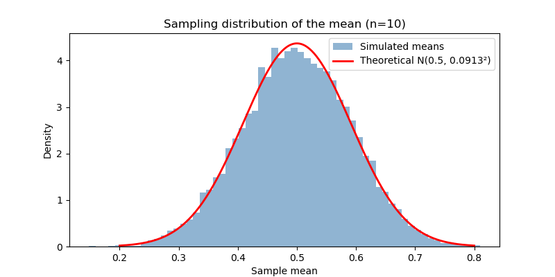
We compute the normal PDF manually using the formula \(f(x) = \frac{1}{\sigma\sqrt{2\pi}} e^{-\frac{(x-\mu)^2}{2\sigma^2}}\). Overlaying it on the histogram checks whether the Normal approximation is good for the chosen sample_size.
Distribution of the OLS slope
To simulate the distribution of an OLS slope, we need to generate \(n\) draws of (x, y) pairs, fit a regression to this sample, record the slope, and repeat this \(N\) times.
Generate data with broadcasting
N_simulations = 1000
n_sample_size = 20
true_slope = 0.5
true_intercept = 1.0
noise = 0.5
x = np.random.normal(0, 1, (N_simulations, n_sample_size))
eps = np.random.normal(0, noise, (N_simulations, n_sample_size))
y = true_intercept + true_slope * x + eps
Here true_slope * x multiplies every element of the matrix x by the scalar true_slope. This is called broadcasting: numpy automatically extends scalar operations to match the shape of the array. In a later lecture we come back to broadcasting in numpy because it is very powerful feature.
Compute OLS slops
The OLS slope formula for a simple regression is \(\hat\beta_1 = \frac{\sum(x_i - \bar x)(y_i - \bar y)}{\sum(x_i - \bar x)^2}\). We can compute this for all simulations at once:
x_c = x - x.mean(axis=1, keepdims=True)
y_c = y - y.mean(axis=1, keepdims=True)
slopes_hat = (x_c * y_c).sum(axis=1) / (x_c ** 2).sum(axis=1)
The argument keepdims=True ensures the mean has shape (N_simulations, 1) instead of (N_simulations,), so that subtracting it from the (N_simulations, sample_size) matrix x broadcasts correctly.
We plot the distribution of estimated slopes (histogram) and the theoretical distribution. If you do not know the theoretical distribution of OLS slopes; do not worry: we use simulations in these lectures, not theoretical results. If you do know the distribution of OLS slopes: why do we plot a normal distribution and not a Student \(t\) distribution?
# Histogram of estimated slopes
plt.hist(slopes_hat, bins=50, density=True, alpha=0.65, color="coral",
label="Estimated slopes $\hat \\beta_1$")
plt.axvline(true_slope, color="k", lw=2, linestyle="--",
label=f"True slope = {true_slope:.1f}")
x_hist_range = np.linspace(slopes_hat.min() - 0.2, slopes_hat.max() + 0.2, 300)
slope_se = noise / np.sqrt(n_sample_size)
normal_slope_pdf = (
(1.0 / (slope_se * np.sqrt(2 * np.pi)))
* np.exp(-0.5 * ((x_hist_range - true_slope) / slope_se) ** 2)
)
plt.plot(x_hist_range, normal_slope_pdf, "b-", lw=2,
label=f"Theoretical N({true_slope:.1f}, {slope_se:.3f}²)")
plt.xlabel("Estimated slope $\hat \\beta_1$")
plt.ylabel("Density")
plt.title("Distribution of OLS slope estimator")
plt.legend(fontsize=8)
plt.tight_layout()
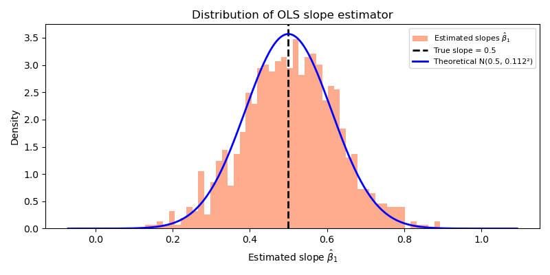
Bootstrapping
Generate two groups
We generate the \(A\) sample from a normal distribution. The \(B\) sample is \(\delta \in \langle 0,1]\) from the \(A\) sample. Hence we know that \(\mu_B \leq \mu_A\) (with probability 1.0). Note that we generate these \(A\) and \(B\) samples once. Above we generated these samples \(N\) times; but here we generate the repetitions in a different way.
sample_size = 50
delta = 0.95 # B = A * delta; delta < 1 means B is lower than A
A = np.random.normal(10, 1, sample_size)
B = A * delta
observed_difference = A.mean() - B.mean()
print(f"The observed difference equals {observed_difference:.2f}")
The observed difference equals 0.51
Combine the samples
Under the null hypothesis (\(H_0\): both groups come from the same distribution); in other words, the group labels are arbitrary. We combine the two samples:
AB = np.concatenate([A, B])
Run the permutation test
We randomly relabel the combined sample N_boot times and record the difference in means each time. Using np.random.choice we generate a matrix with labels for the permutation. To see what this function does, check out np.random.choice(5,size=(15,10),replace=True). Also try replace=False and see what happens.
For each of the \(N\) repetitions (which are in rows, axis = 0), we calculate the difference in means between the labelled \(A\) and labelled \(B\) samples.
N_boot = 10000
rng = np.random.default_rng()
perm_indices = np.random.choice(sample_size,size=(N_boot,2*sample_size),replace=True)
boot_diff = (AB[perm_indices[:, :sample_size]].mean(axis=1)
- AB[perm_indices[:, sample_size:]].mean(axis=1))
AB[perm_indices[:, :sample_size]] uses fancy indexing: for each of the N_boot rows we select sample_size elements of AB according to the permuted indices. In a later lecture we come back to fancy indexing.
Compute the p-value
p_value = np.mean((boot_diff) >= (observed_difference))
print(f"p-value: {p_value:.4f}")
p-value: 0.0063
(boot_diff) >= (observed_difference) produces a boolean array; taking its mean gives the fraction of bootstrap differences that are at least as extreme as the observed one. That fraction is the (one-sided) p-value.
OLS from scratch: the optimization approach
The final topic of this lecture (with statistical concepts you have probably seen before) is OLS. Above we use the analytical expression for the slope of a simple regression (i.e. only one independent variable): \(\hat\beta_1 = \frac{\sum(x_i - \bar x)(y_i - \bar y)}{\sum(x_i - \bar x)^2}\). The same result can be obtained by minimizing the mean squared error loss function directly. This is useful because the loss function can later be extended with penalty terms to give ridge or lasso.
Generate data
from scipy import optimize
sample_size = 500
slope1 = -3.0
slope2 = 2.0
constant = 1.0
noise = 1.5
x1 = np.random.normal(0, 1, sample_size)
x2 = np.random.normal(0, 1, sample_size)
y = constant + slope1 * x1 + slope2 * x2 + noise * np.random.normal(0, 1, sample_size)
Define the OLS loss
The OLS estimator minimizes the mean squared error:
\[ L(w) = \frac{1}{n} \sum_{i=1}^n \bigl(w_0 + w_1 x_{1i} + w_2 x_{2i} - y_i\bigr)^2 \]
def loss_ols(w):
predictions = w[0] + w[1] * x1 + w[2] * x2
return np.mean((predictions - y) ** 2)
Minimize the loss
result = optimize.minimize(loss_ols, x0=[0.0, 0.0, 0.0])
print("Estimated coefficients:", result.x)
Estimated coefficients: [ 1.00394757 -2.96011743 2.05995201]
optimize.minimize starts from the initial guess x0 and finds the values of w that minimize loss_ols. You should recover values close to constant=1, slope1=-3, and slope2=2.
Ridge and lasso penalties
Ridge and lasso add a penalty on the coefficients to the loss function. This discourages the model from assigning large coefficients to variables that have little predictive power; a problem that becomes serious when you have many variables.
Ridge uses a squared penalty:
lam = 1.0
def loss_ridge(w):
predictions = w[0] + w[1] * x1 + w[2] * x2
mse = np.mean((predictions - y) ** 2)
penalty = lam * np.sum(w[1:] ** 2) # do not penalise the intercept
return mse + penalty
Lasso uses an absolute-value penalty:
def loss_lasso(w):
predictions = w[0] + w[1] * x1 + w[2] * x2
mse = np.mean((predictions - y) ** 2)
penalty = lam * np.sum(np.abs(w[1:]))
return mse + penalty
The key difference: lasso can shrink coefficients exactly to zero (performing variable selection), while ridge only shrinks them toward zero. Experiment with different values of lam to see the effect. We will come back to ridge and lasso regression in the next lecture.
Summary
In this lecture we introduced statistical simulation as a practical complement to analytical theory. We illustrated the Central Limit Theorem by plotting sampling distributions of the mean, and showed that OLS slope estimates also have a distribution that widens with noise and narrows with sample size.
We then implemented bootstrap hypothesis testing: by repeatedly reshuffling a combined sample under the null hypothesis, we obtained a p-value without any distributional assumption. Finally, we implemented OLS as a numerical optimization problem and extended it to ridge and lasso by adding penalty terms to the loss function.
When theory gives no closed-form answer -- which is the norm in machine learning -- simulation fills the gap. Generating your own data and running an experiment thousands of times is a reliable way to build intuition about uncertainty, bias, and the effects of model choices.
Vectorised
numpy operations replace explicit Python loops and are orders of magnitude faster. The idioms introduced here -- 2D random arrays, axis reductions, broadcasting, and fancy indexing -- reappear throughout the rest of the course.
Looking ahead: In the next lecture we consider the issue of variable selection and causal interpretation of coefficients.
Review Questions
Test your understanding. For each question, write the code in your own marimo notebook.
TODO review questions:
- plot std of mean(x) against \(\sigma/\sqrt(n)\)
- test signif. of slope with bootstrapping; how can we bootstrap under null hypoth. that slope equals 0
- plot the separate ols lines from the first app
Question 1: Distribution of the sample standard deviation
Above we looked at the distribution of the sample mean. The sample standard deviation \(s\) also has a distribution.
a. Using the same setup as in section Simulating sampling distributions, simulate the distribution of \(s\) across N_simulations samples. Plot its histogram.
b. What is the probability that \(s < 0.28\)? Compute this from the simulated distribution.
c. How does the shape of the distribution of \(s\) change as you increase sample_size? Is it symmetric?
Hint
click here
- Replace
means = samples.mean(axis=1)withstds = samples.std(axis=1, ddof=1). The argumentddof=1gives the unbiased estimator. np.mean(stds < 0.28)gives the fraction of simulated standard deviations below 0.28.
Question 2: OLS with correlated predictors
In the data-generating process above, x1 and x2 are independent. Now generate correlated predictors:
x1 = np.random.normal(0, 1, sample_size)
x2 = 0.8 * x1 + np.sqrt(1 - 0.8**2) * np.random.normal(0, 1, sample_size)
y = constant + slope1 * x1 + 3 * np.random.normal(0, 1, sample_size)
a. Minimise the OLS loss with this correlated x2. How do the estimated coefficients change?
b. Simulate the distribution of the estimated slope on x1 for 1000 repetitions. How does correlation between x1 and x2 affect the spread of this distribution?
Question 3: Ridge regression and variable selection
Use the setup from but now generate five predictors, of which only two have a non-zero true coefficient:
n = 200
X = np.random.normal(0, 1, (n, 5)) # five predictors
true_w = np.array([1.0, -3.0, 0.0, 0.0, 0.0])
y = X @ true_w + np.random.normal(0, 1, n)
a. Minimise the OLS loss. Do the estimated coefficients for the irrelevant predictors come out exactly zero? b. Minimise the ridge loss with \(\lambda = 1\). How does the result differ? c. Minimise the lasso loss with \(\lambda = 0.1\). Are any coefficients exactly zero?
Hint
click here
- The loss function now takes a vector
wof length 5 and computesX @ wfor the predictions. - For lasso the gradient of
|w|is undefined at zero, soscipy.optimize.minimizemay not converge cleanly. Try the method'L-BFGS-B'which handles bounds and subgradients better.
Question 4: One-sided vs two-sided bootstrap test
The bootstrap test we implemented is two-sided: we ask whether \(|D_\text{boot}| \geq |D_\text{obs}|\). In some situations we have a directional hypothesis — for instance, we expect \(A > B\).
a. Adapt the p-value computation to compute a one-sided p-value that tests whether the mean of \(A\) is specifically larger than the mean of \(B\). b. For a fixed \(\delta = 0.95\) and \(n = 50\), run the test 200 times and record the one-sided p-value each time. What fraction of tests reject at the 5% level? Is this what you expect?
Question 5: Bootstrap confidence interval
Instead of a hypothesis test, you can also use the bootstrap to construct a confidence interval for the difference in means.
a. From the 10,000 bootstrap differences you computed, extract the 2.5th and 97.5th percentiles. This gives a 95% bootstrap confidence interval for the difference. b. Does this interval contain zero when \(\delta = 1\)? What about when \(\delta = 0.90\)?
Hint
click here
np.percentile(boot_diff, [2.5, 97.5])gives the two endpoints of the interval.- This is the percentile bootstrap CI. It is conceptually simple but there are more accurate variants (BCa, studentised) that you can explore if interested.
Lecture 2: Variable selection and causality
Skills you learn in this lecture: recognizing that significance is not a variable selection criterion, reading and reasoning with directed acyclic graphs (DAGs), simulating fork, pipe, and collider structures in Python to see how controlling for variables changes OLS estimates.
Learning Objectives
After completing this lecture you should be able to:
- explain why significance is not a valid criterion for selecting variables
- define a directed acyclic graph (DAG) and use it to describe a causal structure
- distinguish fork, pipe, and collider structures and state which variables should (not) be controlled for in each case
- simulate fork, pipe, and collider data in Python using
numpy - compute OLS coefficients for simple and multiple regressions from scratch and interpret how they change when a control variable is added or removed
Introduction
In your statistics and econometrics courses you have learned that OLS measures correlations. A regression coefficient tells you how \(Y\) changes with changing values for \(X\), but it does not say whether there is a causal relationship. In economics, causal questions matter enormously: if you advise the government to adopt policy \(X\) because it will raise \(Y\), you need to be sure that \(X\) actually causes \(Y\), not just that the two are correlated.
Two common but mistaken shortcuts that researchers use when they move from correlations to causal claims are the following.
First, some people select control variables based on statistical significance: add a variable, check whether it is significant, keep it if yes. The xkcd cartoon in Figure 1 illustrates the absurdity of this approach. If you test 20 unrelated variables at the 5% level, you expect one to appear significant purely by chance. The first app in this lecture lets you explore this multiple testing problem directly.

Figure 1: Significance cannot be used for variable selection (in case you need an explanation).
Second, and more subtly, even if you have the right variable in mind as a control, adding it to a regression can either fix a problem or make it dramatically worse; depending on the causal structure. A third variable \(Z\) can play three fundamentally different roles:
- the fork — \(Z\) causes both \(X\) and \(Y\); failing to control for \(Z\) creates a spurious correlation between \(X\) and \(Y\)
- a simple example is the correlation between the consumption of ice cream and the number of people drowned on a given day; can you guess what \(Z\) is here?
- the pipe — \(Z\) mediates the causal effect of \(X\) on \(Y\); controlling for \(Z\) blocks the causal path you are trying to measure
- an economic example: you want to know the effect of education on income; should you control for (un)employment?
- the collider — both \(X\) and \(Y\) cause \(Z\); controlling for \(Z\) induces a spurious correlation between \(X\) and \(Y\) where none existed
- suppose running \(X\) and cycling \(Y\) skills are uncorrelated in the student population; let \(Z\) denote membership of the university’s elite duathlon team. What is the correlation between \(X\) and \(Y\) conditional on \(Z\)? Hint: consider a team member with low \(X\).
- as the collider is the least intuitive of the three, below we analyze two more examples; one with simulated and one with real data.
Each of these three structures is represented by a directed acyclic graph (DAG): a diagram with variable names as nodes and arrows showing the direction of causation. The second app lets you switch between the three DAG types and see how the OLS coefficient of \(X\) changes when you add \(Z\) to the regression.
Apps
This lecture has two interactive apps. The first demonstrates the multiple testing problem. The second shows the fork, pipe, and collider structures and lets you observe how adding a control variable \(Z\) to the regression changes the estimated effect of \(X\) on \(Y\).
Significance and variable selection
All \(k\) variables in this app are generated independently of \(Y\) — none has a true effect. Nevertheless, some will appear significant at the chosen \(\alpha\) level just by chance. The histogram shows the distribution of t-statistics across all \(k\) regressions; the red lines mark the critical values. The bar chart on the right compares the expected number of false discoveries (\(\alpha \times k\)) with the number actually observed. Increase \(k\) to 100 or 200 to see how many spurious findings accumulate.
Fork, pipe, and collider
Select a DAG type from the dropdown and watch the bar chart on the right. The two bars show the OLS coefficient of \(X\) from a bivariate regression (\(Y \sim X\)) and from a multiple regression that also includes \(Z\) (\(Y \sim X + Z\)). The t-statistics are shown in the chart title. The callout below the chart gives the interpretation: for the fork, controlling for \(Z\) is the right thing to do; for the pipe and the collider, it is not.
Increase the effect strength \(\gamma\) to make the bias more visible, or reduce the sample size to see how estimation uncertainty interacts with the bias.
Python Code Explanation
In this section we explain the key ideas behind the two apps. Open a marimo notebook alongside this document and type the code yourself.
We focus on the statistical logic — how to simulate each causal structure and how to compute OLS coefficients from scratch. The interactive elements (sliders etc.) in the apps are added on top of this code.
Multiple testing
Simulate many “null variables”
We generate \(k\) variables that have no effect on \(Y\) and run a multiple regression of \(Y\) on all \(k\) variables. The matrix \(\mathbf{X}\) has shape \((n,\, k+1)\): \(n\) observations in our (simulated) sample, a column of ones for the intercept and one column per variable.
import numpy as np
n, k = 100, 50
Y = np.random.normal(0, 1, n)
X = np.random.normal(0, 1, (n, k))
Compute t-statistics for the multiple regression
OLS gives \(\hat\beta = (\mathbf{X}^\top \mathbf{X})^{-1} \mathbf{X}^\top Y\) and the covariance matrix of \(\hat\beta\) is \(\hat\sigma^2 (\mathbf{X}^\top \mathbf{X})^{-1}\) where \(\hat\sigma^2 = \text{RSS}/(n - k - 1)\) and \(RSS\) denotes Residual Sum of Squares.
For ease of reference we provide the shape of the vector/matrix in a comment on the same line. In a later lecture we come back to matrix operations like multiplication @, transform T, solve and inv.
Xmat = np.column_stack([np.ones(n), X]) # (n, k+1)
beta = np.linalg.solve(Xmat.T @ Xmat, Xmat.T @ Y) # (k+1,)
resid = Y - Xmat @ beta # (n,)
sigma2 = np.sum(resid ** 2) / (n - k - 1) # df = n - k - 1
cov_beta = sigma2 * np.linalg.inv(Xmat.T @ Xmat) # (k+1, k+1)
se = np.sqrt(np.diag(cov_beta)) # (k+1,) standard errors
t_stats = beta[1:] / se[1:] # (k,); slopes only
The vector t_stats holds one t-statistic per variable, each testing \(H_0: \beta_j = 0\). Under the null, each \(t_j \sim t_{n-k-1}\); for \(n = 100\) and \(k = 50\) the critical value at 5% is approximated by 1.96.
n_significant = np.sum(np.abs(t_stats) > 1.96)
print(f"{n_significant} out of {k} variables are 'significant' at 5%")
print(f"Expected: {0.05 * k:.1f}")
4 out of 50 variables are 'significant' at 5% Expected: 2.5
Every significant result here is a false discovery — by construction.
Distribution of false discoveries across repetitions
One run gives one draw from the distribution of false discoveries. To see the full distribution we repeat the simulation \(N = 10{,}000\) times and record the number of significant variables for each draw.
N = 10_000
counts = np.empty(N, dtype=int)
for i in range(N):
Yi = np.random.normal(0, 1, n)
Xi = np.random.normal(0, 1, (n, k))
Xmat_i = np.column_stack([np.ones(n), Xi])
beta_i = np.linalg.solve(Xmat_i.T @ Xmat_i, Xmat_i.T @ Yi)
resid_i = Yi - Xmat_i @ beta_i
s2_i = np.sum(resid_i ** 2) / (n - k - 1)
se_i = np.sqrt(np.diag(s2_i * np.linalg.inv(Xmat_i.T @ Xmat_i)))[1:]
counts[i] = int(np.sum(np.abs(beta_i[1:] / se_i) > 1.96))
None
Because each t-test is approximately independent and rejects with probability \(\alpha = 5\%\) under the null, the count of significant variables follows a \(\text{Binomial}(k,\, \alpha)\) distribution with mean \(k\alpha\) and variance \(k\alpha(1-\alpha)\).
from scipy.stats import binom
import matplotlib.pyplot as plt
alpha = 0.05
xs = np.arange(counts.max() + 2)
sim_probs = np.array([(counts == x).mean() for x in xs])
binom_probs = np.array([binom.pmf(x,k,alpha) for x in xs])
fig, ax = plt.subplots(figsize=(8, 4))
ax.bar(xs - 0.2, sim_probs, width=0.35, alpha=0.75,
color="steelblue", label=f"Simulated ({N:,} runs)")
ax.bar(xs + 0.2, binom_probs, width=0.35, alpha=0.75,
color="coral", label=f"Binomial({k}, {alpha})")
ax.set_xlabel(f"Number of 'significant' variables out of k = {k}")
ax.set_ylabel("Probability")
ax.set_title("Distribution of false discoveries — simulation vs. Binomial")
ax.legend()
plt.tight_layout()
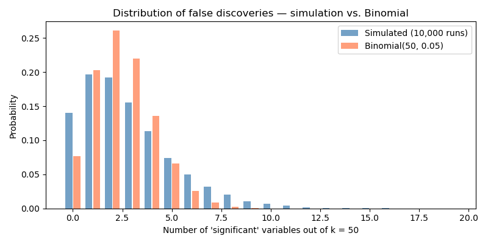
Simulating fork, pipe, and collider
For all three structures it is convenient to define a helper function that computes OLS coefficients for a simple or multiple regression using numpy linear algebra. As above, the matrix \(\mathbf{X}\) starts with a column of ones (the intercept) and the predictor columns. The estimated coefficients are given by \(\hat\beta = (\mathbf{X}^\top \mathbf{X})^{-1} \mathbf{X}^\top Y\).
def ols(Y, *Xs):
"""Return OLS coefficient vector [intercept, beta_1, ...]."""
Xmat = np.column_stack([np.ones(len(Y))] + list(Xs))
return np.linalg.solve(Xmat.T @ Xmat, Xmat.T @ Y)
The fork
\(Z\) causes both \(X\) and \(Y\); there is no direct effect from \(X\) to \(Y\).
As mentioned in the app: if there is an effect between two variables, we assume the effect equals \(\gamma\). Here we set \(\gamma = 1\).
n = 1000
gamma = 1.0
Z = np.random.normal(0, 1, n)
X = gamma * Z + np.random.normal(0, 1, n) # Z causes X
Y = gamma * Z + np.random.normal(0, 1, n) # Z causes Y
coef_without_z = ols(Y, X) # Y ~ X: biased
coef_with_z = ols(Y, X, Z) # Y ~ X + Z: correct
print(f"Y ~ X: coef of X = {coef_without_z[1]:.3f}")
print(f"Y ~ X + Z: coef of X = {coef_with_z[1]:.3f}")
Y ~ X: coef of X = 0.454 Y ~ X + Z: coef of X = -0.020
The bivariate regression picks up the spurious correlation created by \(Z\). Adding \(Z\) removes it.
The pipe
\(X\) causes \(Z\) which causes \(Y\); the causal effect of \(X\) on \(Y\) is fully mediated by \(Z\).
X = np.random.normal(0, 1, n)
Z = gamma * X + np.random.normal(0, 1, n) # X causes Z
Y = gamma * Z + np.random.normal(0, 1, n) # Z causes Y
coef_without_z = ols(Y, X) # correct
coef_with_z = ols(Y, X, Z) # incorrect
print(f"Y ~ X: coef of X = {coef_without_z[1]:.3f} (true total effect ~ {gamma**2:.2f})")
print(f"Y ~ X + Z: coef of X = {coef_with_z[1]:.3f} (mechanism is blocked)")
Y ~ X: coef of X = 1.091 (true total effect ~ 1.00) Y ~ X + Z: coef of X = 0.069 (mechanism is blocked)
An economic example: the effect of schooling on income is partly mediated through employment: schooling helps you to find employment. Controlling for employment makes schooling look less relevant, but the real effect exists; it works through employment.
The collider
\(X\) and \(Y\) are independent. Both cause \(Z\). Conditioning on \(Z\) induces a spurious negative correlation between \(X\) and \(Y\).
X = np.random.normal(0, 1, n)
Y = np.random.normal(0, 1, n)
Z = gamma * X + gamma * Y + np.random.normal(0, 1, n)
coef_without_z = ols(Y, X) # correct
coef_with_z = ols(Y, X, Z) # wrong
print(f"Y ~ X: coef of X = {coef_without_z[1]:.3f} (correct, near zero)")
print(f"Y ~ X + Z: coef of X = {coef_with_z[1]:.3f} (spurious negative!)")
Y ~ X: coef of X = 0.018 (correct, near zero) Y ~ X + Z: coef of X = -0.484 (spurious negative!)
The intuition: if we hold \(Z = \gamma X + \gamma Y\) fixed, then a higher \(X\) must be offset by a lower \(Y\) to keep \(Z\) constant. So within any slice of \(Z\), \(X\) and \(Y\) are negatively correlated which is a pure artifact of conditioning.
Finally, we consider the collider in two situations where there is correlation between \(X\) and \(Y\): first with simulated and then with real data.
collider bias with simulated data
Many people have the intuition that adding a control variable to a regression (especially when it turns out to be significant) is a good idea. However, this intuition is wrong if it is applied without thinking. The pipe and collider above are examples where this reasoning is incorrect. Here we consider a collider in a more elaborate example.
We use here the education example by McElreath (2020) to illustrate this point (see Richard McElreath ’s lecture 6). Consider the educational achievements of three generations in one family: the grandparent, the parent and the (grand)child. We are interested in the effect of the grandparent’s education on the educational achievement of the grandchild.
Let’s denote the child’s educational achievement by \(Y\) (the variable we are interested in) and the grandparent’s education \(X\). We want to understand the effect of \(X\) on \(Y\). Clearly there is the following path: more educated grandparent leads to more educated parent (\(Z\)) which, in turn, leads to more educated grandchild. The thing we are interested in is whether there is a direct effect from the grandparent on the child, controlling for the parent’s education.
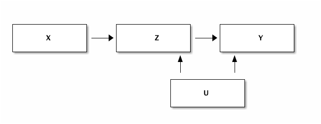
Figure 2: A collider in a more complicated context.
We know that the parent’s education has a positive effect on the child’s achievement. A more educated parent will tend to stimulate their children more, can help with homework etc. In the data that we generate below, we assume that \(Z = X + ...\) and \(Y = Z + ...\). That is, we assume that the parent’s education feeds one-to-one into the child’s education.
Is it the case that on top of this effect there is a separate grandparent effect? E.g. because the grandparent is babysitting and a more educated grandparent reads Hamlet with the 5 year old grandchild. That is fun and can boost the child’s educational achievement.
Another important component of education is the neighbourhood where the
child grows up. We denote this variable \(U\). In the code we assume
that the parent and child grow up in the same neighbourhood (have the
same \(U\) effect). \(U\) is drawn from a standard normal distribution
and the effect on education is given through a multiplication by the
factor alpha.
In addition to this, we assume that there is a random component as well which differs between parent and child.
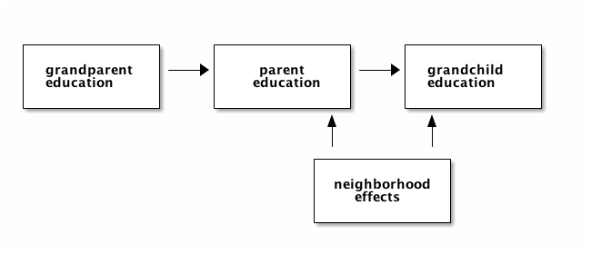
Figure 3: The education example from McElreath (2020).
The code below, generates this data and a dataframe df_collider that
stores this data.
Look carefully at the code: is there a direct effect from the grandparent to the grandchild’s educational achievement?
We create the dataframe df_collider which contains the observable variables \(X,Y,Z\) and the unobserved neighbourhood effect \(U\).
import pandas as pd
import statsmodels.formula.api as smf
sample_size = 5000
alpha = 0.5
X = np.random.normal(size=sample_size)
U = np.random.normal(size=sample_size)
Z = X + alpha*U+0.4*np.random.normal(size=sample_size)
Y = Z + alpha*U+0.4*np.random.normal(size=sample_size)
df_collider = pd.DataFrame({'X':X, 'Y':Y, 'Z':Z, 'U':U})
print(df_collider.head())
X Y Z U
0 0.004069 -2.603567 -1.244448 -2.173826
1 0.383663 -0.350389 0.125116 -0.755560
2 -1.539065 -0.910385 -1.668699 0.770156
3 0.129300 0.430064 0.863400 -0.128971
4 1.076587 2.027661 1.898336 1.184124
Now we run the regression of \(Y\) on \(X\) controlling for \(Z\).
results = smf.ols('Y ~ X + Z', data=df_collider).fit()
print(results.summary())
OLS Regression Results
==============================================================================
Dep. Variable: Y R-squared: 0.889
Model: OLS Adj. R-squared: 0.889
Method: Least Squares F-statistic: 2.011e+04
Date: Tue, 29 Sep 2026 Prob (F-statistic): 0.00
Time: 13:20:24 Log-Likelihood: -3727.7
No. Observations: 5000 AIC: 7461.
Df Residuals: 4997 BIC: 7481.
Df Model: 2
Covariance Type: nonrobust
==============================================================================
coef std err t P>|t| [0.025 0.975]
------------------------------------------------------------------------------
Intercept 0.0107 0.007 1.487 0.137 -0.003 0.025
X -0.6131 0.013 -45.863 0.000 -0.639 -0.587
Z 1.6152 0.011 142.881 0.000 1.593 1.637
==============================================================================
Omnibus: 0.695 Durbin-Watson: 1.936
Prob(Omnibus): 0.706 Jarque-Bera (JB): 0.737
Skew: -0.010 Prob(JB): 0.692
Kurtosis: 2.944 Cond. No. 3.52
==============================================================================
Notes:
[1] Standard Errors assume that the covariance matrix of the errors is correctly specified.
It turns out that grandparent education \(X\) has a negative effect on the grandchild’s educational achievement \(Y\). How is that possible?
To illustrate what is happening, we use an interactive plot made with altair.
To condition on Z (as we do in a multiple regression), we can drag vertically an interval for \(Z\) in the bottom histogram. This selection of \(Z\) turns blue in the scatter plot above and you can drag the selection up and down (conditioning on different values of \(Z\)).
Move this selection up and down and see what happens. In particular:
- for a selection of
Zin the bottom histogram, what is the relation betweenXandYin the scatter plot? - for this selection, how does
Uvary in the figure? That is, for a given selection of \(Z\) what is the size of the circles? What is the interpretation? For given \(Z\), as grandparent education \(X\) is low, what is the size of the \(U\) circles?
import altair as alt
interval = alt.selection_interval(encodings=['y'])
fig = (
alt.Chart(df_collider)
.mark_point()
.encode(
x='X',
y='Y',
color=alt.condition(
interval,
alt.value('steelblue'),
alt.value('lightgreen')
),
size='U'
)
.add_params(interval)
)
hist = (
alt.Chart(df_collider)
.mark_bar()
.encode(
x='count()',
y=alt.Y('Z', bin=True),
color=alt.condition(
interval,
alt.value('steelblue'),
alt.value('lightgrey')
)
)
.add_params(interval)
)
chart_collider = fig & hist
chart_collider.save('./figures/ChartCollider.html')
collider bias with real data
Downey (2023, chap. 7) discusses a great example of collider bias suggesting (incorrectly) that mothers who smoke during pregnancy have a “protective effect” on their babies if these happen to have low birth weight.
- you can watch his presentation: probably overthinking low birthweight paradox
- or look at the notebook: https://allendowney.github.io/ProbablyOverthinkingIt/birthweight.html
- the website of the book: https://greenteapress.com/wp/probably-overthinking-it/
If you want to run this code on the Tilburg university server, you can access the data with:
from zipfile import ZipFile
zip_file = ZipFile('./data/lbw_data.csv.zip')
df = pd.read_csv(zip_file.open('lbw_data.csv'))
df.head()
Unnamed: 0 tobacco birthweight mort lbw bin 0 0 2.0 3505.0 False False (3500, 3750] 1 1 2.0 2940.0 False False (2750, 3000] 2 2 2.0 2693.0 False False (2500, 2750] 3 3 1.0 2778.0 False False (2750, 3000] 4 4 2.0 3175.0 False False (3000, 3250]
Then follow Allen Downey’s presentation/notebook/book chapter.
Summary
This lecture introduced two practical pitfalls in variable selection and causal interpretation.
The multiple testing problem shows that significance is not a reliable guide to variable selection: if you test many variables, some will appear significant by chance, with an expected false-discovery rate of exactly significance level \(\alpha\).
The fork, pipe, and collider show that whether to control for a third variable \(Z\) depends entirely on the causal structure. Controlling for a fork variable is correct. Controlling for a pipe mediator or a collider is incorrect; it either blocks a causal path or introduces a spurious correlation that was not there before.
Significance of a coefficient does not mean the variable belongs in your model. Variable selection should be guided by your causal model (the DAG), not by p-values.
np.linalg.solve(X.T @ X, X.T @ y) computes the OLS coefficient vector in one line for any number of predictors. The same matrix operations that worked for simple regression scale directly to multiple regression.
Looking ahead: In the next lecture we cover a number of “technical” Python topics that we need for later lectures on datascience methods.
Review Questions
Test your understanding. For each question, write the code in your own marimo notebook.
Question 1: False discovery rate
Repeat the multiple testing simulation but now generate \(k\) variables where exactly half have a true slope of 0.5 (and half are null).
a. What fraction of the true-effect variables do you correctly detect (power)? b. Among the “significant” results, what fraction are false discoveries? c. How does the false-discovery fraction change as you increase \(k\) while keeping the number of true signals fixed?
Question 2: Fork with partial effect
In the fork simulation above, \(X\) has no direct effect on \(Y\). Now add a direct effect:
Y = 0.5 * X + gamma * Z + np.random.normal(0, 1, n)
a. What coefficient do you expect for \(X\) in the regression \(Y \sim X\) (without controlling for \(Z\))? b. What coefficient do you expect for \(X\) in the regression \(Y \sim X + Z\)? c. Run both regressions and check whether the simulated coefficients match your expectations.
TODO Question 3: Costly data acquisition
Suppose you work at a ministry and you and your team need to figure out what the effect is of a policy \(x\) on an outcome \(y\). You can gather data on this relation between \(x\) and \(y\) but the problem is that the data acquisition is rather expensive. Hence, your colleagues suggest that you gather data sequentially (over time) until you find that the coefficient of \(x\) (on \(y\)) is significant.
Hopefully, in your statistics/econometrics classes you learned that this is a very bad idea. If not, I tell you: this is a bad idea.
Use data simulation to convince your colleagues that collecting data in this way is a bad idea.
TODO Question 4: Treatment effects
One of the complications when using IV to find causal effects is that treatment effects can differ between subgroups and that these subgroups react differently to the treatment/instrument. Our discussion here is based on Chapter 4 of Angrist and Pischke (2009).
We will consider this in the context of unemployed who are offered a training program. To understand the effects, we will again generate our own data such that we know exactly what all the relevant effects are. The question is then, how do we get these effects from the data.
As before, the learning goals of this section are two fold: (i) learn how to program your own data generating process in python and (ii) understand the statistical issue under considerarion: heterogenous treatment effects.
The government introduces a training program for unemployed. The treatment variable \(D_i\) denotes whether (1) or not (0) individual \(i\) received training. The instrument \(Z_i\) that we use is whether (1) or not (0) \(i\) is invited to join the training.
We have three groups of unemployed:
- compliers join the training if and only if they are invited to do so: \(D_i = 1 (0)\) iff \(Z_i = 1 (0)\);
- always-takers join the training whether or not they are invited to do so: \(D_i =1\) irrespective of \(Z_i\);
- never-takers never join the training: \(D_i = 0\) irrespective of \(Z_i\).
Note that in this training context, the always-takers are a bit “odd”: how can you join a training program where you are not supposed to be. The never-takers make more sense in this context: some people may not attend the training even though they were invited to do so. We will not worry about this; the point is that we can conceptually distinguish these groups.
We are interested in the effect of the training program on earnings. We denote by \(\beta\) the expected earnings without training. The expected earnings with training is denoted by \(\beta+\tau\). Hence, \(\tau\) denotes the treatment effects.
Let \(j \in \{c,a,n \}\) denote whether an individual is a complier, always-taker or never-taker. We assume that \(\beta_j\) and \(\tau_j\) vary with \(j\).
In particular we assume that the earnings effect for someone in group \(j\) is drawn from a normal distribution with mean \(\mu = \beta_j\) and standard deviation \(\sigma =1\) in case of no training and the effect of training is drawn from a normal distribution with mean \(\mu = \tau_j\) and standard deviation \(\sigma =1\).
Below we will consider different configurations for \(\beta_j, \tau_j\) and see how they affect the estimated effects.
Exercise Read the code below and explain what it does. E.g. can you explain how earnings depend on whether someone was invited for the training program?
```python def accept_complier(invited): return invited
def accept_always(invited): return np.ones_like(invited)
def accept_never(invited): return np.zeros_like(invited)
N_simulations = 10000 fraction_training = 0.2 # 20% of agents are invited to the training types = [’complier’,’always_taker’, ’never_taker’] β = {’complier’: 1, ’always_taker’: 2, ’never_taker’: 1} τ = {’complier’: 3, ’always_taker’: 4, ’never_taker’: 1} n = {’complier’: 0.5, ’always_taker’: 0.25, ’never_taker’: 0.25} accept = {’complier’: accept_complier, ’always_taker’: accept_always, ’never_taker’: accept_never} earnings_without = {} training_effect = {} earnings = {} invited = {} trained = {} df = pd.DataFrame() def data_simulation(β = β, τ=τ, n = n): for j in types: earnings_without[j] = np.random.normal(loc = β[j], scale = 1.0, size = int(n[j]*N_simulations)) training_effect[j] = np.random.normal(loc = τ[j], scale = 1.0, size = int(n[j]*N_simulations)) invited[j] = np.random.binomial(1,fraction_training,size = int(n[j]*N_simulations)) trained[j] = accept[j](invited[j]) earnings[j] = earnings_without[j]+ trained[j]*training_effect[j] column_invited = np.concatenate([invited[j] for j in types],axis=0) column_trained = np.concatenate([trained[j] for j in types],axis=0) column_earnings = np.concatenate([earnings[j] for j in types],axis=0) df = pd.DataFrame({’invited’:column_invited, ’trained’:column_trained,’earnings’:column_earnings}) return df
df = data_simulation() df.head() ```
We have a dataset now with indicators for who was invited to a training and who attended a training.
We would like to learn the effect of training on earnings.
Question Which of the parameters above could we hope to recover? \(\tau_c,\tau_a,\tau_n\)?
Question Hence, if we do some calculations with the data, which number do we want to see?
Question Compare the average earnings of people with training with the average earnings of people without training. Is this the number that you expected? Why (not)?
Exercise Where does this number come from?
Question Perhaps we should use the instrument whether someone is invited or not: compare average earnings of people with and without an invitation to the training.
Question Does it help if we compare:
- people with training and an invitation to training with
- people without training and no invitation to training
We have seen now that we have no hope of recovering the relevant training effect in the set-up above. So the question is: when can we recover the relevant parameters? That is, what assumptions are needed?
To see how you can analyze this with the set-up above, let’s program two obvious cases where this works.
Question Explain for each case why it works.
```python n = {’complier’: 1.0, ’always_taker’: 0.0, ’never_taker’: 0.0} df_compliers_only = data_simulation(n=n) np.mean(df_compliers_only[df_compliers_only.trained==1].earnings)-np.mean(df_compliers_only[df_compliers_only.trained==0].earnings) ```
```python β = {’complier’: 1, ’always_taker’: 1, ’never_taker’: 1} τ = {’complier’: 3, ’always_taker’: 3, ’never_taker’: 3} df_homog = data_simulation(β=β,τ=τ) np.mean(df_homog[df_homog.trained==1].earnings)-np.mean(df_homog[df_homog.trained==0].earnings) ```
For a less obvious case where we can retrieve relevant parameters, we will use Angrist and Pischke (2009: chapter 4). In particular, we will verify Theorem 4.4.2.
We work with one sided noncompliance. That is, we allow for never-takers but not for always-takers.
According to Theorem 4.4.2 the effect of treatment on the treated can be found as:
\[ \frac{E(Y_i|Z_i=1)-E(Y_i|Z_i=0)}{Prob(D_i=1|Z_i=1)} \]
We first create the dataframe.
```python n = {’complier’: 0.5, ’always_taker’: 0.0, ’never_taker’: 0.5} df_one_sided = data_simulation(n=n)
```
Question Calculate \(Prob(D_i = 1|Z_i =1)\) and denote this `correction_term`.
Question Calculate \(\frac{E(Y_i|Z_i=1)-E(Y_i|Z_i=0)}{Prob(D_i=1|Z_i=1)}\).
Question Which parameter have we recovered?
## Probability of treatment
Consider a situation which is simpler than the one above in the sense that there are no always-takers, nor never-takers.
However, now the instrument (“invited”) \(Z\) causes the probability of training to increase from 0.2 to 0.6. 30% of people get invited.
Exercise Copy/paste python code from the analysis above to generate a dataframe using that \(Z_i=1\) implies that the probability of treatment increases from 0.2 to 0.6
Exercise Suppose we can observe whether someone received training or not. Use this to calculate the effect of training on earnings.
Suppose we cannot observe whether someone actually did the training or not (e.g. whether or not someone invested effort in the training). We only know (“from a previous study”) that explicitly inviting someone for the training (“nudge”) increases the probability that they invest training effort from 0.2 to 0.6.
Exercise Use the dataframe above to verify what the effect of the nudge is. Call this the `correction_term`. What value should the correction term have?
Angrist and Pischke (2009: chapter 4) Theorem 4.4.1 (LATE Theorem; local average treatment effect) claims that (under some assumptions), we can calculate the effect of training on earnings as:
\[ \frac{E(Y_i|Z_i=1)-E(Y_i|Z_i=0)}{E(D_i|Z_i=1)-E(D_i|Z_i=0)} \]
Exercise Use this expression to calculate the effect of training on earnings.
Now we are going to use an IV estimation to find the same result. Run the following two regressions.
```python results_first_stage = smf.ols(’trained ~ invited’, data=df_prob).fit() results_second_stage = smf.ols(’earnings ~ invited’, data=df_prob).fit() ```
Exercise Use these regressions to calculate the effect of training on earning.
Hint
click here
np.cov(W, Y)[0, 1]gives the sample covariance between \(W\) and \(Y\).- For the first stage in 2SLS: use the
olsfunction from the Python Code Explanation section. The fitted values areX_hat = b[0] + b[1] * W. - The 2SLS estimator equals the IV estimator when there is exactly one instrument; they differ with multiple instruments.
Lecture 3: Tensors, broadcasting, indexing, matrix operations
Skills you learn in this lecture: working with multi-dimensional arrays (tensors), selecting data with slicing and fancy indexing, combining arrays with broadcasting, performing matrix algebra, and understanding gradient descent — the algorithm behind neural network training.
Learning Objectives
After completing this lecture you should be able to:
- use
.shape,.ndim, and.reshapeto inspect and transformnumpyarrays of any dimension - select subsets of arrays using slicing notation and boolean (fancy) indexing
- apply broadcasting rules to combine arrays of different shapes without explicit loops
- perform matrix operations with
numpy: product@, transpose.T, inverse and rank vianumpy.linalg - implement gradient descent from scratch and explain how the learning rate controls convergence to the OLS solution
Introduction
In Lectures 1 and 2 we worked with one- and two-dimensional arrays: vectors of observations and matrices with rows as observations and columns as variables. Real-world data often has a more complicated structure than that. An image is a 2D grid of pixel intensities; a dataset of images adds a third dimension for the image index. A panel of incomes across countries, ages and time periods can be viewed as a 3D array. Machine learning frameworks handle this kind of data through tensors; numpy arrays generalized to any number of dimensions.
Three technical tools make tensor computations easy to handle; once you master them. Slicing and indexing let you extract subsets of a tensor in a single expression without loops. Broadcasting lets you combine arrays of different shapes by automatically stretching the smaller array to match the larger one; this replaces many nested loops with a single vectorized expression. Matrix operations are the language of linear algebra: the matrix product @, the transpose .T, and the inverse via numpy.linalg underpin OLS, regularized regression, and covariance matrices.
The second half of the lecture introduces gradient descent, the optimization algorithm inside TensorFlow, PyTorch, and every modern neural network library. We implement it from scratch for a simple linear regression: rather than solving the normal equations analytically, we minimize the mean squared error by iteratively nudging the slope and intercept in the direction that reduces the loss. The interactive app lets you watch this process in real time and experiment with the learning rate.
Apps
This lecture has two interactive apps. The first lets you enter two \(3 \times 3\) matrices and observe matrix operations: addition, subtraction, multiplication, transposition, and inverse. The second app runs gradient descent for a small linear regression and shows both the loss surface and the convergence path.
Interactive matrix operations
Enter values for two \(3 \times 3\) matrices \(A\) and \(B\). The app instantly displays their sum, difference, matrix products \(AB\) and \(BA\) (where these two matrix products are usually not the same), the transpose \(A^\top\), the determinant and rank of \(A\), and the inverse \(A^{-1}\) – provided \(A\) has full rank. Try setting one row of \(A\) to a linear combination of another row to see the inverse become undefined.
Gradient descent for linear regression
The app generates 60 observations from a known linear relationship and asks gradient descent (starting at slope \(= 0\), intercept \(= 0\)) to recover the best-fit line. The left panel shows the mean squared error \(L(m, b)\) as a contour plot (representing a bowl in 3D) with the gradient-descent path overlaid. The OLS estimate sits at the bottom of the bowl (lowest point). The right panel tracks the loss at each iteration.
Use the sliders to vary the learning rate \(\eta\) and the number of steps. With small \(\eta\) the algorithm converges slowly; push \(\eta\) too high and the updates overshoot and the algorithm diverges.
Python Code Explanation
Open a marimo notebook alongside this document and type the code yourself. We build up from basic tensor manipulation to gradient descent.
Tensors and shape
A tensor is a numpy array with one or more dimensions. Every array has a .shape attribute –a tuple giving its size along each axis– and .ndim for the number of dimensions.
import numpy as np
x = np.random.normal(0, 1, 100) # 1-D tensor: 100 numbers
print(x.shape, x.ndim)
M = np.random.normal(0, 1, (4, 5)) # 2-D tensor (a matrix)
print(M.shape, M.ndim)
T = np.random.normal(0, 1, (3, 28, 28)) # 3-D: 3 images of 28×28 pixels
print(T.shape, T.ndim)
(100,) 1 (4, 5) 2 (3, 28, 28) 3
Use .reshape to reorganize the elements without changing their values, as long as the total count stays the same.
x2 = x.reshape(10, 10)
x3 = x.reshape(4, 5, 5)
print(x2.shape)
print(x3.shape)
(10, 10) (4, 5, 5)
np.newaxis inserts a dimension of size 1; useful for broadcasting. The slicing notation x[:5] means: take the 5 first elements of x along axis zero.
col = x[:5, np.newaxis]
row = x[:5][np.newaxis, :]
print(col.shape, row.shape)
(5, 1) (1, 5)
Instead of np.newaxis you can also use None like x[:5, None].
Slicing and indexing
Slicing uses the notation start:stop:step for each dimension, separated by commas. : means “all elements”. The notation ::2 then means “every other element”.
x = np.arange(1, 101).reshape(10, 10) # 10×10 matrix, values 1 to 100
x[0, :] # first row, all columns
x[:, 4] # fifth column (index starts at 0)
x[:2, :2] # top-left 2×2 block
x[0, 5:] # second half of the first row
x[0, 5::2] # every other element from that half
x[1::2, 1::2] # every other row and column, starting from index 1
The last command yields:
array([[ 12, 14, 16, 18, 20],
[ 32, 34, 36, 38, 40],
[ 52, 54, 56, 58, 60],
[ 72, 74, 76, 78, 80],
[ 92, 94, 96, 98, 100]])
Fancy indexing selects elements using a boolean array.
x[x > 50] # values exceeding 50, as a 1-D array
x[(x >= 30) & (x <= 40)] # & for "and", | for "or"
The last command gives:
array([30, 31, 32, 33, 34, 35, 36, 37, 38, 39, 40])
Boolean masks from one array can select from another of the same shape. The classic use: colour scatter-plot points by sign.
t = np.linspace(0, 2 * np.pi, 300)
y = np.sin(t)
import matplotlib.pyplot as plt
plt.plot(t[y >= 0], y[y >= 0], "b") # positive part: blue
plt.plot(t[y < 0], y[y < 0], "r") # negative part: red
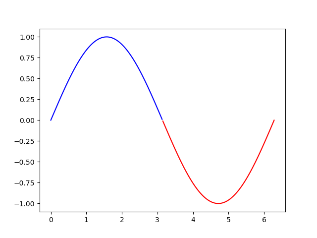
Broadcasting
Broadcasting lets numpy combine arrays of different shapes by stretching dimensions of size 1 to match the other array. The broadcasting rule: check from the rightmost dimension leftward whether:
- Dimensions of equal size: fine.
- One dimension equals 1: fine
- Neither of the above: error.
A practical example from panel econometrics: individual fixed effects \(I_i\) and time effects \(T_t\), giving predictions \(y_{it} = I_i + T_t\).
I = np.arange(0, 100, 10) # 10 individual effects, shape (10,)
T = np.arange(3) # 3 time effects, shape (3,)
y = I[:, np.newaxis] + T[np.newaxis, :] # (10,1) + (1,3) → (10,3)
print(y.shape) # (10, 3)
print(y[9, 1]) # 91 = 90 + 1 ✓
(10, 3) 91
No nested loop over \(i\) and \(t\) — a single expression covers all 30 combinations.
Practice broadcasting yourself by defining two tensors:
x = np.random.normal(0,1,size=100)
y = np.random.normal(0,1,size=100)
and then asking which of the following can be added? First, think about it. Then check by running the code in a cell (see whether or not you get an error).
x+yx.reshape(10,10)+yx.reshape(10,10)+y.reshape(4,5,5)x.reshape(10,10)+y.reshape(10,10,1)x.reshape(10,10)+y.reshape(1,10,10)x.reshape(10,10)+y.reshape(5,10,2)x.reshape(10,10)+y.reshape(100,1,1)
For more information on broadcasting check this numpy documentation.
Matrix operations
The key matrix operations in numpy with \(k\) by \(l\) matrix \(A\) and \(m\) by \(n\) matrix \(B\):
| Expression | Meaning |
|---|---|
A @ B |
matrix product (must be the case that \(l=m\)) |
A * B |
element-wise product (shapes must broadcast) |
A.T |
transpose |
np.linalg.solve(A, b) |
solve \(Ax = b\) (\(A\) must be a square matrix: \(k=l\)) |
np.linalg.inv(A) |
matrix inverse \(A^{-1}\), must be square |
np.linalg.det(A) |
determinant |
np.linalg.matrix_rank(A) |
rank |
np.diag(v) |
diagonal matrix from vector, or extract diagonal |
Matrix product @ differs from element-wise multiplication *. By doing the calculations by hand, check the following:
A = np.array([[1, 2], [3, 4]])
B = np.array([[0, 1], [1, 0]])
print(A * B)
print("---------")
print(A @ B)
[[0 2] [3 0]] --------- [[2 1] [4 3]]
Before we try to calculate \(A^{-1}\), let’s check whether \(A\) has full rank:
print(np.linalg.det(A))
print(np.linalg.matrix_rank(A))
print(np.linalg.inv(A))
-2.0000000000000004 2 [[-2. 1. ] [ 1.5 -0.5]]
As \(\det(A) \neq 0\), \(A\) has full rank; and, indeed, the rank of \(A\) equals 2 (which is max. rank for a 2 by 2 matrix). Hence, we can calculate the inverse of \(A\).
We can check whether the inverse is correct:
np.linalg.inv(A) @ A
array([[1.00000000e+00, 0.00000000e+00],
[1.11022302e-16, 1.00000000e+00]])
As we saw in the previous lecture, we can write OLS in matrix form as \(\hat\beta = (X^\top X)^{-1} X^\top y\) and covariance matrix \(\hat\sigma^2(X^\top X)^{-1}\).
We first simulate our own data: \(n\) observations and 4 \(x\) variables. We then define \(y\); what are the slope variable and what is the intercept?
n, k = 200, 4
X = np.random.normal(0, 1, (n, k))
y = X @ np.array([1, 0.5, -0.5, 0.3]) + np.random.normal(0, 1, n)
We define the matrix \(X\) with observations, derive our estimated coefficients \(\hat \beta\), calculate the residuals which we need for the standard errors:
Xmat = np.column_stack([np.ones(n), X])
beta_hat = np.linalg.solve(Xmat.T @ Xmat, Xmat.T @ y)
resid = y - Xmat @ beta_hat
sigma2 = np.sum(resid ** 2) / (n - k - 1)
se = np.sqrt(np.diag(sigma2 * np.linalg.inv(Xmat.T @ Xmat)))
print("estimates: ", beta_hat.round(3))
print("std errors: ", se.round(3))
estimates: [-0.059 1.043 0.487 -0.388 0.353] std errors: [0.073 0.067 0.073 0.07 0.08 ]
A square \(n \times n\) matrix \(A= X^\top X\) is invertible if and only if det\((A) \neq 0\) or equivalently rank\((A) = n\). In statistics, a near-zero determinant indicates multicollinearity: one predictor is a linear combination of the others.
Gradient descent from scratch
The OLS formula \(\hat\beta = (X^\top X)^{-1} X^\top y\) minimizes the MSE analytically. For models with no closed-form solution (like a neural network) we use gradient descent: start somewhere and step downhill.
For simple linear regression \(\hat y = mx + b\) the MSE loss is
\[L(m, b) = \frac{1}{n}\sum_i (y_i - m x_i - b)^2\]
The gradients are
\[\frac{\partial L}{\partial m} = \frac{2}{n}\sum_i (m x_i + b - y_i)\,x_i, \qquad \frac{\partial L}{\partial b} = \frac{2}{n}\sum_i (m x_i + b - y_i)\]
Update rule with learning rate \(\eta\): \(m \leftarrow m - \eta\,\partial L/\partial m\) and similarly for \(b\). Here we set a seed (42) to make sure that your results will be the same as the ones below. We start our gradient descent at \((m,b) = (0,0)\) and use learning rate \(\eta = 0.3\). Note that we use the derivatives of \(L\) derived above in our updating of \(m\) and \(b\).
import numpy as np
import tensorflow as tf
rng = np.random.default_rng(42)
n = 60
x = np.sort(rng.uniform(0, 2, n))
y = 0.5 * x + 0.3 + rng.normal(0, 0.2, n)
# OLS:
Xmat = np.column_stack([np.ones(n), x])
b_hat = np.linalg.solve(Xmat.T @ Xmat, Xmat.T @ y)
print(f"OLS: intercept = {b_hat[0]:.4f}, slope = {b_hat[1]:.4f}")
# Gradient descent starting from (m, b) = (0, 0):
lr, m, b = 0.3, 0.0, 0.0
for step in range(200):
resid = (m * x + b) - y
m -= lr * 2 * np.mean(resid * x)
b -= lr * 2 * np.mean(resid)
print(f"GD: intercept = {b:.4f}, slope = {m:.4f}")
OLS: intercept = 0.2868, slope = 0.4728 GD: intercept = 0.2868, slope = 0.4728
In TensorFlow the same loop is written with tf.Variable, tf.GradientTape (which computes gradients automatically), and assign_sub (which does the subtraction update in-place). We will see this syntax when we build neural networks. For now, consider the following example which is copied from this SciPy 2019 Tutorial.
We define the tensorflow variables m,b and give them a starting value. Tensorflow now knows that m,b are variables that will be varied (trained) later on.
m = tf.Variable(0.)
b = tf.Variable(0.)
We can look at the variables, but they are not “easy to look at” as they contain more information than just the value. If we are only interested in the value, we can use the numpy() method on the variable.
print(m)
print(m.numpy())
<tf.Variable 'Variable:0' shape=() dtype=float32, numpy=0.0> 0.0
We define a function that predicts y for given x. Note that tf “knows” that m,b are variables because of the way we defined these variables above. Hence, they are not explicitly mentioned in the function definition as variables.
def predict(x):
y = m * x + b
return y
We define our loss function: sum of squared differences between y_pred and y_true.
def squared_error(y_pred, y_true):
return tf.reduce_mean(tf.square(y_pred - y_true))
To see what reduce_mean does, consider the following example. If the tensor vector has more than 1 dimension, you can specify the axis along which the reduction needs to take place.
vector = tf.constant([[1., 2., 3., 4.]])
print(tf.reduce_mean(vector).numpy())
2.5
As above, we use gradient descent to gradually improve our guess for m and b.
learning_rate = 0.3
steps = 200
for i in range(steps):
with tf.GradientTape() as tape:
predictions = predict(x)
loss = squared_error(predictions, y)
gradients = tape.gradient(loss, [m, b])
m.assign_sub(gradients[0] * learning_rate)
b.assign_sub(gradients[1] * learning_rate)
if i % 20 == 0:
print("Step %d, Loss %f" % (i, loss.numpy()))
Step 0, Loss 0.698773 Step 20, Loss 0.022170 Step 40, Loss 0.022144 Step 60, Loss 0.022143 Step 80, Loss 0.022143 Step 100, Loss 0.022143 Step 120, Loss 0.022143 Step 140, Loss 0.022143 Step 160, Loss 0.022143 Step 180, Loss 0.022143
Two things in the code above are new: GradientTape and assign_sub. We will discuss these briefly. More information on GradientTape can be found here. The idea is that tensorflow calculates the gradient for us; we do not take the derivative of \(L\) w.r.t. \(m,b\) ourselves (as we did in the numpy code above).
As a simple example to get an idea of what it does, we work with the function \(z^2\). gradient calculates the derivative (it does so analytically) and fills in the value, in this case 3.0. Hence, the derivative equals \(2*z = 6.0\) at \(z=3.0\).
z = tf.Variable(3.0)
def my_function():
return z**2
with tf.GradientTape() as tape:
value = my_function()
tape.gradient(value, [z])
| <tf.Tensor: | shape= | nil | dtype=float32 | numpy=6.0> |
Finally, assign_sub subtracts the value from the variable. It is the equivalent of \(z -= 1.0\):
z = tf.Variable(3.0)
z.assign_sub(1.0)
<tf.Variable 'UnreadVariable' shape=() dtype=float32, numpy=2.0>
Summary
This lecture introduced the technical Python toolkit needed for machine learning.
Tensors are numpy arrays with any number of dimensions; .shape reveals their structure, and .reshape reorganizes elements without copying data. Slicing and fancy indexing extract any subset in a single expression. Broadcasting eliminates loops when combining arrays of different shapes.
Matrix algebra underpins OLS and much of statistics: @ for matrix products, .T for transposition, np.linalg.solve and np.linalg.inv for solving systems. A matrix is invertible if and only if it has full rank (det \(\neq\) 0); near-zero determinants signal multicollinearity.
Gradient descent minimizes a loss function iteratively. The learning rate \(\eta\) controls the trade-off between speed and stability: too small means slow convergence; too large means divergence. This is the same algorithm used by TensorFlow and PyTorch to train neural networks.
OLS is the analytical solution to the same minimization problem that gradient descent solves numerically. Understanding gradient descent makes generalization easier: add (hidden) layers, change the loss function, and you have a neural network trained the same way.
A @ B, A.T, np.linalg.solve, broadcasting with np.newaxis, and boolean fancy indexing are the building blocks of efficient array code. If you find yourself writing a nested loop over array elements, ask first whether broadcasting can replace it.
Looking ahead: In the next lecture we study overfitting and underfitting and see why splitting data into train and test sets is essential whenever the model is flexible enough to memorize the training data.
Review Questions
Test your understanding. For each question, write the code in your own marimo notebook.
Question 1: Slicing and fancy indexing on panel data
Suppose you have simulated a small panel dataset: 500 observations on 8 variables. Variable 0 is a binary indicator (0/1), variable 3 is income, and variable 7 is an outcome of interest.
import numpy as np
rng = np.random.default_rng(0)
data = rng.normal(0, 1, (500, 8))
data[:, 0] = (rng.uniform(0, 1, 500) > 0.5).astype(float) # binary
Using only slicing and fancy indexing (no loops):
a. Extract variables 3 and 7 for the first 100 observations.
b. Select all rows where variable 0 equals 1 (the “treated” group).
c. Among the treated group, compute the mean of variable 7 and compare it to the mean of variable 7 in the untreated group.
d. Select all rows where variable 3 (income) is above its 75th percentile. Hint: np.percentile.
Question 2: Sampling distributions without loops
In Lecture 1 we plotted the sampling distribution of the mean by drawing many samples. Use broadcasting to simulate R = 10_000 draws of the sample mean for each of the sample sizes \(n \in \{10, 50, 100, 500\}\) simultaneously — with no Python loop over either R or n.
a. Generate a matrix of shape (R, n_max) of i.i.d. draws from \(\mathcal{N}(0,1)\) where n_max = 500. Then use slicing to obtain the sample mean for each \(n\) and each repetition.
Hint: for sample size \(n\), the sample mean of repetition \(r\) is data[r, :n].mean(). Can you compute all of these without a loop?
b. For each \(n\), plot the histogram of the R sample means and verify that the spread decreases as \(n\) grows.
c. Verify numerically that the standard deviation of the sample mean is approximately \(1/\sqrt{n}\).
Question 3: Multicollinearity and the matrix inverse
Start with the OLS example from the Python Code Explanation section (n=200, k=4 predictors). Then add a fifth predictor that is exactly the sum of predictors 1 and 2.
X_extra = np.column_stack([X, X[:, 0] + X[:, 1]]) # 5th column is linear combo
Xmat_extra = np.column_stack([np.ones(n), X_extra])
a. Compute np.linalg.det(Xmat_extra.T @ Xmat_extra) and np.linalg.matrix_rank(Xmat_extra). What do you observe?
b. Try to call np.linalg.solve(Xmat_extra.T @ Xmat_extra, Xmat_extra.T @ y). What happens?
c. Add a tiny amount of noise to the fifth column: X_extra[:, 4] + 1e-6 * rng.normal(size=n)=. Recompute the determinant and solve. Does OLS now run? What do the estimated coefficients look like?
This illustrates why near-multicollinearity is dangerous even when solve does not error: the estimates become unstable.
Question 4: Batched OLS with np.matmul
In this question you run \(N\) OLS regressions simultaneously — one per dataset — using numpy tensor operations on the last two dimensions, with no Python loop.
Generate \(N = 500\) datasets, each with \(n = 100\) observations and \(k = 3\) predictors (plus intercept). The true slope vector for all datasets is \(\beta = (1,\; 0.5,\; -0.5,\; 0.3)^\top\) (intercept first).
N, n, k = 500, 100, 3
rng = np.random.default_rng(7)
X_all = rng.normal(0, 1, (N, n, k)) # shape (N, n, k)
y_all = X_all @ np.array([0.5, -0.5, 0.3]) + 1.0 + rng.normal(0, 1, (N, n))
a. Add an intercept column to X_all so that it has shape (N, n, k+1). Hint: np.ones((N, n, 1)) and np.concatenate.
b. Compute XTX of shape (N, k+1, k+1) using np.matmul (or @) on the last two dimensions. Remember that “X transpose times X” requires transposing the last two dimensions of X_all. Use np.swapaxes(X_all, -1, -2) to do this without rearranging the batch dimension.
c. Similarly compute XTy of shape (N, k+1) or (N, k+1, 1).
d. Solve all \(N\) systems \((\mathbf{X}^\top \mathbf{X})\hat\beta = \mathbf{X}^\top y\) in one call using np.linalg.solve. The result beta_hat should have shape (N, k+1). Verify that beta_hat.mean(axis=0) is close to the true coefficients.
Hint: how to prompt an LLM
If you get stuck on parts (b)–(d), use the following prompt (adapted to what you have already tried):
I have a numpy tensor
X_allof shape(N, n, p)(N datasets, n observations each, p predictors) and a tensory_allof shape(N, n). I want to compute the OLS coefficient vector \(\hat\beta = (X^\top X)^{-1} X^\top y\) for all N datasets simultaneously usingnp.matmulor@, without any Python loop. The result should have shape(N, p). How do I transpose only the last two dimensions ofX_all, formX'XandX'y, and then solve the N linear systems at once?
After you get a working solution, check that it gives the same answer as a loop:
beta_loop = np.array([
np.linalg.solve(X_all[i].T @ X_all[i], X_all[i].T @ y_all[i])
for i in range(N)
])
print(np.allclose(beta_hat, beta_loop)) # should print True
Lecture 4: Overfitting and underfitting
Skills you learn in this lecture: splitting data into train and test sets, diagnosing over-fitting and under-fitting by comparing train and test errors, regularizing with ridge and lasso regression, and tuning the regularization strength with cross-validation.
Learning Objectives
After completing this lecture you should be able to:
- explain why adding more parameters always improves the training fit but may worsen out-of-sample predictions
- create a polynomial design matrix with
np.vanderand fit it by OLS withnp.linalg.solve - implement a train/test split with
numpyslicing and compute the mean squared error on each set - implement ridge regression using the closed-form solution \(\hat\beta_{\text{ridge}} = (X^\top X/n + \lambda \Lambda)^{-1} X^\top y/n\)
- implement lasso regression and explain why it produces exact zeros for coefficients
- tune the hyper-parameter \(\lambda\) with \(k\) fold cross-validation
Introduction
In machine learning and econometrics we face a fundamental tension: a more complex model (more parameters) always fits the training data better, but a model that is too complex will fit the noise in the training sample rather than the underlying signal. That is, the model picks up structure that is specific for the sample and does not generalize to the population.
Adding more explanatory variables to a regression cannot make the training fit worse. The OLS minimization problem,
\[ \min_{\beta} \frac{1}{n}\sum_{i=1}^{n}\left(y_i - \hat{y}_i(\beta)\right)^2 \]
can only improve (or stay the same) when \(\beta\) is extended. If adding the new variable hurt, we would simply set its coefficient to zero and recover the previous fit.
The problem is that a model optimized on the training sample can pick up idiosyncratic patterns — noise — that do not repeat in new data. We say the model does not generalize. Two failure modes matter:
- Under-fitting: the model is too simple to capture the true relationship. Both training and test errors are high.
- Over-fitting: the model is too complex and fits the training noise. Training error is low but test error is high.
The standard diagnostic is a train/test split: hold out a random subset of the data, train the model on the remainder, and evaluate predictions on the held-out test set. The test error is an unbiased estimate of generalization performance. Crucially, the test set should be used once, after we have settled on a final model. Repeatedly comparing models on the test set risks over-fitting to it.
A practical remedy for over-fitting is regularization: add a penalty for large coefficients to the objective function. Two popular penalties are the ridge (\(L_2\)) penalty \(\lambda \sum_j \beta_j^2\) and the lasso (\(L_1\)) penalty \(\lambda \sum_j |\beta_j|\). As \(\lambda\) increases, coefficients shrink toward zero; with a very large \(\lambda\) even complex models under-fit. The penalty strength \(\lambda\) is a hyper-parameter chosen by cross-validation, not by fitting/estimating on the training set.
Apps
This lecture has two interactive apps. The first shows how train and test errors diverge as polynomial degree increases. The second applies ridge and lasso regularization to an over-parameterized polynomial and illustrates how the optimal penalty balances the bias–variance trade-off.
Two remarks; first, we are not particularly interested in polynomial regression. But it is an intuitive way in which to make the model more complex and the over-fitting pattern is obvious in a simple figure. Second, in the app the train/test split of the data is done on sorted data which is not advisable in practice but helps to illustrate the effect in the figures.
Polynomial regression: over-fitting and under-fitting
Data come from the true model \(y = 1 + 2x^2 + \varepsilon\). We split 30 observations into 20 training and 10 test points and fit a polynomial of degree \(d\) only to the training data.
Use the slider to vary \(d\) from 1 to 9. The top figure shows all data together with the fitted curve; the two panels below compare the fit on the training set (left) and on the test set (right). The train MSE falls monotonically with \(d\); the test MSE is minimized near the true degree 2 and grows thereafter.
Ridge and lasso regularisation
We fix a degree-9 polynomial (10 coefficients, only 20 training observations) and add ridge and lasso regularization. Use the slider to vary \(\lambda\).
- Train MSE rises as \(\lambda\) increases (more shrinkage = more bias).
- Test MSE first falls (over-fitting reduced) and then rises (under-fitting).
- Lasso sets some coefficients exactly to zero; ridge keeps all non-zero but small.
Python Code Explanation
Open a marimo notebook alongside this document and type the code yourself. We build up from polynomial features and the train/test split to regularized regression and cross-validation.
Polynomial features and train/test split
We generate data from the true quadratic model and split into train and test sets using numpy slicing. We split the data on sorted data for “dramatic effect” in our figures.
import numpy as np
import matplotlib.pyplot as plt
rng = np.random.default_rng(42)
N, n_train = 30, 20
x = np.sort(rng.uniform(-2.0, 2.0, N))
y = 1.0 + 2.0 * x ** 2 + rng.normal(0, 1.5, N)
x_train, x_test = x[:n_train], x[n_train:]
y_train, y_test = y[:n_train], y[n_train:]
A polynomial design matrix of degree \(d\) has columns \([1,\, x,\, x^2,\, \ldots,\, x^d]\). np.vander builds this efficiently with the increasing=True argument.
def poly_features(xv, degree):
return np.vander(xv, N=degree + 1, increasing=True)
d = 4
Xtr = poly_features(x_train, d) # shape (20, 5)
Xte = poly_features(x_test, d) # shape (10, 5)
Xtr.shape # (20, 5)
| 20 | 5 |
We fit OLS on the training data and compute the mean squared error (MSE) on both sets.
def ols(X, y):
return np.linalg.solve(X.T @ X, X.T @ y)
beta = ols(Xtr, y_train)
mse_train = np.mean((y_train - Xtr @ beta) ** 2)
mse_test = np.mean((y_test - Xte @ beta) ** 2)
print(f"Train MSE: {mse_train:.2f}, Test MSE: {mse_test:.2f}")
Train MSE: 1.08, Test MSE: 3.17
To see how MSE changes with polynomial degree we loop over degrees 1 to 9.
degrees = range(1, 10)
train_errors, test_errors = [], []
for d in degrees:
Xtr_d = poly_features(x_train, d)
Xte_d = poly_features(x_test, d)
b = ols(Xtr_d, y_train)
train_errors.append(np.mean((y_train - Xtr_d @ b) ** 2))
test_errors.append( np.mean((y_test - Xte_d @ b) ** 2))
plt.plot(degrees, train_errors, label="Train MSE")
plt.plot(degrees, test_errors, label="Test MSE")
plt.axvline(2, color="gray", linestyle="--", label="True degree (d=2)")
plt.xlabel("Polynomial degree"); plt.ylabel("MSE")
plt.yscale("log"); plt.legend()
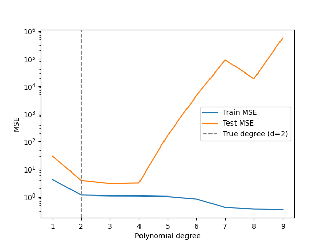
The train MSE curve is monotonically decreasing; the test MSE curve has a U-shape with its minimum near the true degree 2.
Ridge regression: shrinking coefficients
Ridge regression adds a squared-coefficient penalty to the OLS objective:
\[ \hat\beta_{\text{ridge}} = \arg\min_\beta \frac{1}{n}\|y - X\beta\|^2 + \lambda \sum_{j=1}^{p} \beta_j^2 \]
The first-order condition gives the closed-form solution
\[ \hat\beta_{\text{ridge}} = \left(\frac{X^\top X}{n} + \lambda \Lambda\right)^{-1} \frac{X^\top y}{n} \]
where \(\Lambda = \operatorname{diag}(0, 1, 1, \ldots, 1)\) so the intercept is not penalized. With \(\lambda = 0\) this coincides with the OLS estimate.
Before fitting, we standardize the polynomial features (not the intercept column) so that \(\lambda\) treats all predictors equally regardless of their natural scale.
# Standardise columns 1..d using training mean/std
def standardize(Xraw, mean=None, std=None):
if mean is None:
mean = Xraw[:, 1:].mean(axis=0)
std = Xraw[:, 1:].std(axis=0) + 1e-8
Xs = Xraw.copy()
Xs[:, 1:] = (Xs[:, 1:] - mean) / std
return Xs, mean, std
d = 9
Xtr_raw = poly_features(x_train, d)
Xte_raw = poly_features(x_test, d)
Xtr, fmean, fstd = standardize(Xtr_raw)
Xte, _, _ = standardize(Xte_raw, fmean, fstd)
def ridge(X, y, lam):
n, p = X.shape
Lambda = np.diag([0.0] + [1.0] * (p - 1))
A = X.T @ X / n + lam * Lambda
return np.linalg.solve(A, X.T @ y / n)
for lam in [0.0, 0.5, 1.0, 2.0]:
b = ridge(Xtr, y_train, lam)
mse_tr = np.mean((y_train - Xtr @ b) ** 2)
mse_te = np.mean((y_test - Xte @ b) ** 2)
print(f"lambda={lam:.1f} train MSE={mse_tr:.2f} test MSE={mse_te:.2f}")
lambda=0.0 train MSE=0.35 test MSE=555215.25 lambda=0.5 train MSE=1.36 test MSE=6.73 lambda=1.0 train MSE=1.51 test MSE=9.81 lambda=2.0 train MSE=1.72 test MSE=11.86
Ridge shrinks all coefficients continuously but never sets any exactly to zero.
Lasso regression: coordinate descent and sparsity
The lasso uses an \(L_1\) penalty:
\[ \hat\beta_{\text{lasso}} = \arg\min_\beta \frac{1}{2n}\|y - X\beta\|^2 + \lambda \sum_{j=1}^{p} |\beta_j| \]
There is no closed-form solution. The single-coordinate minimizer involves the soft-thresholding operator
\[ S(z, \lambda) = \operatorname{sign}(z) \cdot \max(|z| - \lambda,\, 0) \]
which sets the coefficient to zero whenever \(|z| < \lambda\).
Starting from the coordinate-wise objective:
\[\min_{\beta_j} \frac{1}{2n}\|r_j - X_j \beta_j\|^2 + \lambda|\beta_j|\]
with \(r_j = y - \sum_{k \neq j} X_k \beta_k\)
Expanding the quadratic term:
\[\frac{1}{2n}\left(r_j^T r_j - 2\beta_j X_j^T r_j + \beta_j^2 X_j^T X_j\right) + \lambda|\beta_j|\]
Taking the derivative of the smooth part:
\[\frac{\partial}{\partial \beta_j} = \frac{1}{n}\left(-X_j^T r_j + \beta_j X_j^T X_j\right)\]
The first order condition for the full objective is:
\[\frac{1}{n}\left(-X_j^T r_j + \beta_j X_j^T X_j\right) + \lambda \partial|\beta_j| = 0\]
where the notation \(\partial|\beta_j|\) is short-hand for the following “derivative”:
\[\partial|\beta_j| = \begin{cases} \{1\} & \beta_j > 0 \\ \{-1\} & \beta_j < 0 \\ [-1, 1] & \beta_j = 0 \end{cases}\]
Letting \(z_j = X_j^T r_j / n\) and \(c_j = X_j^T X_j / n\), the three cases resolve to:
\[\hat{\beta}_j = \begin{cases} \frac{z_j - \lambda}{c_j} & z_j > \lambda \\ \frac{z_j + \lambda}{c_j} & z_j < -\lambda \\ 0 & |z_j| \leq \lambda \end{cases}\]
Which is exactly the soft-threshold formula:
\[\hat{\beta}_j = \frac{S(z_j, \lambda)}{c_j}\]
def soft_threshold(z, threshold):
return np.sign(z) * np.maximum(np.abs(z) - threshold, 0.0)
def lasso_cd(X, y, lam, max_iter=3000, tol=1e-8):
n, p = X.shape
beta = np.zeros(p)
col_norms = np.sum(X ** 2, axis=0) / n # yields the c_j
for _ in range(max_iter):
beta_old = beta.copy()
for j in range(p):
# Partial residual holding all other coefficients fixed
r_j = y - X @ beta + X[:, j] * beta[j]
z_j = X[:, j] @ r_j / n
if j == 0: # intercept: no penalty
beta[j] = z_j / col_norms[j]
else:
beta[j] = soft_threshold(z_j, lam) / col_norms[j]
if np.max(np.abs(beta - beta_old)) < tol:
break
return beta
for lam in [0.0, 0.5, 1.0, 2.0]:
b = lasso_cd(Xtr, y_train, lam)
n_zeros = np.sum(np.abs(b[1:]) < 1e-6)
mse_te = np.mean((y_test - Xte @ b) ** 2)
print(f"lambda={lam:.1f} zeros={n_zeros}/9 test MSE={mse_te:.2f}")
lambda=0.0 zeros=0/9 test MSE=367.49 lambda=0.5 zeros=7/9 test MSE=5.01 lambda=1.0 zeros=7/9 test MSE=3.73 lambda=2.0 zeros=8/9 test MSE=7.67
Lasso sets coefficients exactly to zero (sparse solution) because the \(L_1\) penalty has a kink at zero: any coefficient smaller than \(\lambda\) in magnitude is thresholded all the way to zero. This makes lasso a natural tool for variable selection. Ridge, which uses a smooth \(L_2\) penalty, shrinks coefficients (in absolute value) but does not set them equal to zero.
Tuning \(\lambda\) with cross-validation
The hyper-parameter \(\lambda\) controls the bias-variance trade-off. We choose it by \(k\) fold cross-validation: split the training data into \(k\) equal folds; in each iteration use \(k-1\) folds to fit the model and the remaining fold to evaluate the loss. The average validation loss across folds estimates out-of-sample performance without ever touching the test set.
When you will use \(k\) fold cross validation in your own analyses, you will probably use scikit-learn KFold. Here we program the \(k\) folds ourselves with numpy. Read the code for the function kfold_cv and try to understand how this works (you can ask an LLM for help, if necessary).
def kfold_cv(X, y, lam_values, k=5, method="ridge"):
n = len(y)
fold_size = n // k # integer division
val_mse = np.zeros(len(lam_values))
for fold in range(k):
idx_val = np.arange(fold * fold_size, (fold + 1) * fold_size)
idx_train = np.concatenate([np.arange(0, fold * fold_size),
np.arange((fold + 1) * fold_size, n)])
Xf_tr, yf_tr = X[idx_train], y[idx_train]
Xf_val, yf_val = X[idx_val], y[idx_val]
for i, lam in enumerate(lam_values):
if method == "ridge":
b = ridge(Xf_tr, yf_tr, lam)
else:
b = lasso_cd(Xf_tr, yf_tr, lam)
val_mse[i] += np.mean((yf_val - Xf_val @ b) ** 2)
return val_mse / k
lam_values = np.linspace(0.05, 3.0, 61)
cv_ridge = kfold_cv(Xtr, y_train, lam_values, k=5, method="ridge")
cv_lasso = kfold_cv(Xtr, y_train, lam_values, k=5, method="lasso")
opt_ridge = lam_values[np.argmin(cv_ridge)]
opt_lasso = lam_values[np.argmin(cv_lasso)]
plt.plot(lam_values, cv_ridge, label="Ridge CV MSE")
plt.plot(lam_values, cv_lasso, label="Lasso CV MSE")
plt.axvline(opt_ridge, linestyle="--", color="steelblue", alpha=0.6, label="optimal $\\lambda$ ridge")
plt.axvline(opt_lasso, linestyle="--", color="forestgreen", alpha=0.6, label="optimal $\\lambda$ lasso")
plt.xlabel("lambda"); plt.ylabel("Validation MSE")
plt.legend()
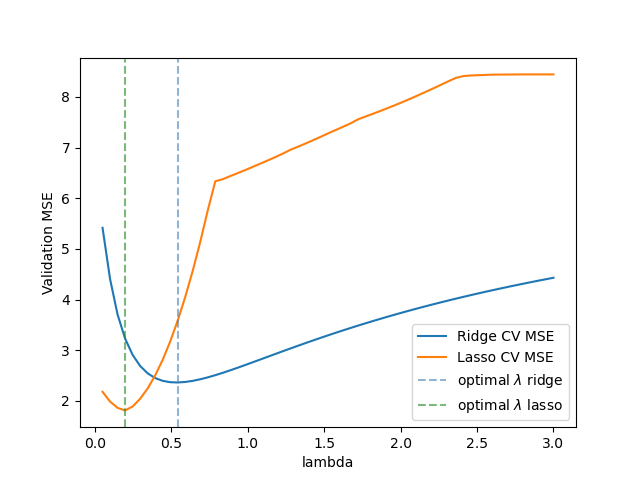
Both curves have a U-shape: too small \(\lambda\) leads to over-fitting; too large leads to under-fitting. The optimal \(\lambda\) sits at the bottom of the U. Because we only have \(k=5\) folds on 20 training points (4 per fold), the validation estimates are noisy; with more data the U becomes smoother and the optimum sharper.
Bias–variance decomposition
Assume the true relationship is \(y = f(x) + \varepsilon\), where \(\varepsilon \sim (0, \sigma^2)\) is independent noise. Let \(\hat{y}\) be our estimator. We want to compute the expected squared error at a fixed point \(x\):
\begin{align*} \mathbb{E}\!\left[(y - \hat{y})^2\right] &= \mathbb{E}\!\left[(f(x) + \varepsilon - \hat{y})^2\right] \\ &= \mathbb{E}\!\left[((f(x) - \hat{y}) + \varepsilon)^2\right] \\ &= \mathbb{E}\!\left[(f(x) - \hat{y})^2\right] + 2\,\mathbb{E}\!\left[(f(x) - \hat{y})\,\varepsilon\right] + \mathbb{E}\!\left[\varepsilon^2\right]. \end{align*}Since \(\varepsilon\) is independent of \(\hat{y}\) and \(\mathbb{E}[\varepsilon] = 0\), the cross term vanishes: \[ \mathbb{E}\!\left[(f(x) - \hat{y})\,\varepsilon\right] = \mathbb{E}\!\left[f(x) - \hat{y}\right]\mathbb{E}[\varepsilon] = 0, \] and \(\mathbb{E}[\varepsilon^2] = \sigma^2\). So: \[ \mathbb{E}\!\left[(y - \hat{y})^2\right] = \mathbb{E}\!\left[(f(x) - \hat{y})^2\right] + \sigma^2. \]
Now we decompose the first term. Let \(\mu = \mathbb{E}[\hat{y}]\). Add and subtract \(\mu\):
\begin{align*} \mathbb{E}\!\left[(f(x) - \hat{y})^2\right] &= \mathbb{E}\!\left[(f(x) - \mu + \mu - \hat{y})^2\right] \\ &= \mathbb{E}\!\left[(f(x) - \mu)^2 + 2(f(x)-\mu)(\mu - \hat{y}) + (\mu - \hat{y})^2\right] \\ &= (f(x) - \mu)^2 + 2(f(x)-\mu)\,\mathbb{E}\!\left[\mu - \hat{y}\right] + \mathbb{E}\!\left[(\hat{y} - \mu)^2\right]. \end{align*}Since \(\mathbb{E}[\mu - \hat{y}] = \mu - \mu = 0\), the cross term vanishes, leaving:
\[\mathbb{E}\!\left[(f(x) - \hat{y})^2\right] = \underbrace{(f(x) - \mu)^2}_{\text{Bias}^2} + \underbrace{\mathbb{E}\!\left[(\hat{y}-\mu)^2\right]}_{\operatorname{Var}(\hat{y})}.\]
Combining everything the expected test error decomposes into three terms:
\[ \mathbb{E}\!\left[(y - \hat{y})^2\right] = \underbrace{\left(\mathbb{E}[\hat{y}] - f(x)\right)^2}_{\text{Bias}^2} + \underbrace{\operatorname{Var}(\hat{y})}_{\text{Variance}} + \underbrace{\sigma^2}_{\text{Irreducible noise}} \]
- Bias: how far the average prediction is from the truth. A too-simple model (underfitting) has high bias.
- Variance: how much the prediction changes across different training samples. A too-complex model (overfitting) has high variance.
- Irreducible noise: \(\sigma^2\), the noise in \(y\) itself. No model can remove it.
Regularisation trades bias for variance: as \(\lambda\) increases, bias rises (the model is forced toward zero) but variance falls (the model is less sensitive to the particular training sample). The optimal \(\lambda\) balances the two.
We can verify this decomposition empirically by repeating the experiment many times with different training samples and observing the average squared bias and variance of the predictions.
fig, axes = plt.subplots(1, 3, figsize=(15, 5))
N_sim = 500
x_grid = np.linspace(-1.0, 1.0, 80)
degrees = [1, 5, 9]
for ax, d in zip(axes, degrees):
all_preds = np.zeros((N_sim, len(x_grid)))
for i in range(N_sim):
xi = np.sort(rng.uniform(-2.0, 2.0, n_train))
yi = 1.0 + 2.0 * xi ** 2 + rng.normal(0, 1.5, n_train)
coeffs_i = np.polyfit(xi, yi, d)
all_preds[i] = np.polyval(coeffs_i, x_grid)
f_true = 1.0 + 2.0 * x_grid ** 2
mean_pred = all_preds.mean(axis=0)
bias_sq = (mean_pred - f_true) ** 2
variance = all_preds.var(axis=0)
ax.plot(x_grid, bias_sq, label="Bias²")
ax.plot(x_grid, variance, label="Variance")
ax.plot(x_grid, bias_sq + variance, label="Bias² + Variance", lw=2)
ax.set_xlabel("x")
ax.set_ylabel("MSE component")
ax.set_title(f"Degree-{d} polynomial")
ax.legend()
fig.suptitle("Bias–Variance Decomposition", fontsize=14)
plt.tight_layout()
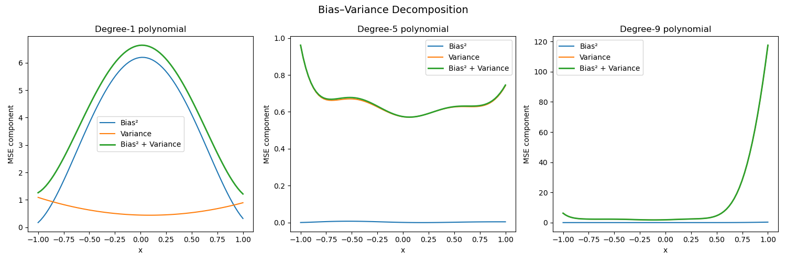
Compare the total \(\text{Bias}^{2}\) + Variance across degrees 1, 5 and 9 to trace the full bias–variance trade-off curve. At degree 1 bias is large; at degree 9 variance dominates.
Why lasso gives sparsity but ridge does not
Both penalties shrink coefficients toward zero, but only lasso can set them exactly to zero. The reason is geometric.
Consider minimising the OLS loss subject to a budget constraint on the coefficients:
- Ridge constrains \(\|\beta\|_2^2 = \beta_1^2 + \beta_2^2 \leq c\). The constraint region is a smooth circle (sphere in higher dimensions). The loss contours (ellipses) typically touch the constraint region on its curved surface, away from the axes, so both coefficients are non-zero.
- Lasso constrains \(\|\beta\|_1 = |\beta_1| + |\beta_2| \leq c\). The constraint region is a diamond with corners on the axes. The loss contours are much more likely to first touch the diamond at a corner, where one coefficient is exactly zero.
We can visualise this in 2D.
theta = np.linspace(0, 2 * np.pi, 300)
fig, axes = plt.subplots(1, 2, figsize=(10, 4.5))
# OLS contours (loss ellipses centred away from origin)
beta_ols_2d = np.array([1.2, 0.8]) # hypothetical OLS solution
A2 = np.array([[2.0, 0.5], [0.5, 1.0]]) # positive definite quadratic form
b1, b2 = np.meshgrid(np.linspace(-1.5, 2.0, 200), np.linspace(-1.5, 1.5, 200))
beta_grid = np.stack([b1, b2], axis=-1)
diff = beta_grid - beta_ols_2d
loss_2d = np.einsum("...i,ij,...j->...", diff, A2, diff)
for ax, title, constraint in zip(axes, ["Ridge (L2)", "Lasso (L1)"], ["L2", "L1"]):
ax.contour(b1, b2, loss_2d, levels=10, cmap="Blues_r", alpha=0.7)
if constraint == "L2":
ax.fill(np.cos(theta), np.sin(theta), alpha=0.3, color="steelblue")
ax.plot(np.cos(theta), np.sin(theta), color="steelblue", lw=2)
else:
diamond = np.array([[1,0],[0,1],[-1,0],[0,-1],[1,0]])
ax.fill(diamond[:,0], diamond[:,1], alpha=0.3, color="forestgreen")
ax.plot(diamond[:,0], diamond[:,1], color="forestgreen", lw=2)
ax.axhline(0, color="gray", lw=0.8); ax.axvline(0, color="gray", lw=0.8)
ax.set_xlabel(r"$\beta_1$"); ax.set_ylabel(r"$\beta_2$")
ax.set_title(title); ax.set_xlim(-1.6, 2.1); ax.set_ylim(-1.6, 1.6)
plt.tight_layout()
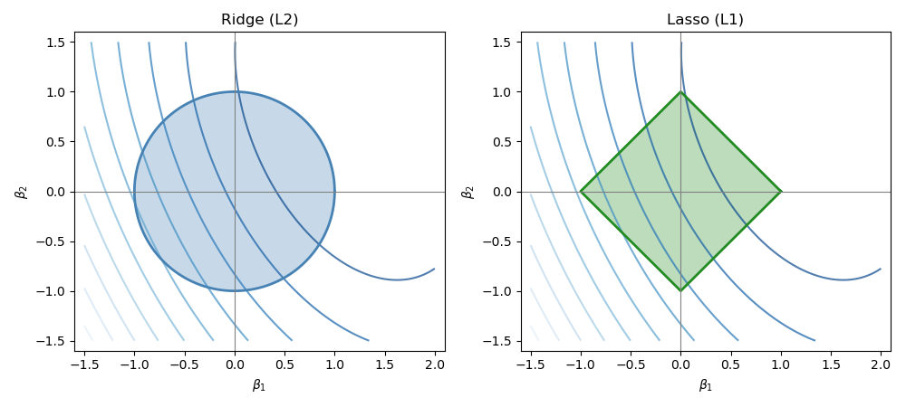
The corner of the lasso diamond lies on the \(\beta_2 = 0\) axis: wherever the OLS solution points from that corner, the unconstrained minimizer must cross the horizontal axis, making it likely that the constrained solution lands exactly there with \(\beta_2 = 0\).
Regularisation path
The regularisation path shows how each coefficient changes as \(\lambda\) varies from zero (OLS) to a large value (strong shrinkage). It helps identify which variables are most important: lasso paths hit zero at different \(\lambda\) values, effectively ordering variables by their relevance.
lam_path = np.logspace(-2, 1, 60) # from 0.01 to 10 on a log scale
ridge_coefs = np.array([ridge(Xtr, y_train, l)[1:] for l in lam_path])
lasso_coefs = np.array([lasso_cd(Xtr, y_train, l)[1:] for l in lam_path])
fig, (ax1, ax2) = plt.subplots(1, 2, figsize=(12, 4))
for j in range(ridge_coefs.shape[1]):
ax1.plot(lam_path, ridge_coefs[:, j])
ax1.set_xscale("log"); ax1.axhline(0, color="k", lw=0.8, ls="--")
ax1.set_xlabel("lambda (log scale)"); ax1.set_ylabel("Coefficient value")
ax1.set_title("Ridge regularisation path (all coefficients shrink smoothly)")
for j in range(lasso_coefs.shape[1]):
ax2.plot(lam_path, lasso_coefs[:, j])
ax2.set_xscale("log"); ax2.axhline(0, color="k", lw=0.8, ls="--")
ax2.set_xlabel("lambda (log scale)"); ax2.set_ylabel("Coefficient value")
ax2.set_title("Lasso regularisation path (coefficients hit zero at different lambda)")
plt.tight_layout()
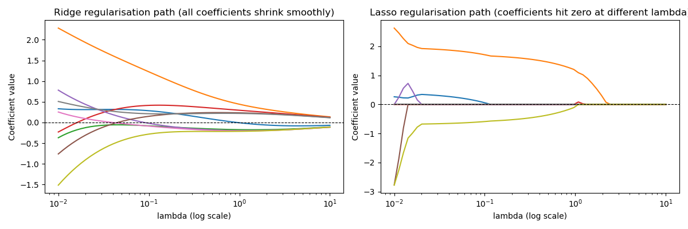
In the ridge path all curves approach zero asymptotically but never reach it. In the lasso path curves bend sharply and hit zero at specific \(\lambda\) values. The last variable to reach zero is the most important predictor according to lasso.
Information criteria
An alternative to cross-validation that you may find in the literature is an information criterion: penalize the log-likelihood (or equivalently the in-sample fit) for model complexity directly, without holding out data. Two common choices are:
- AIC: \(\text{AIC} = n \log(\text{RSS}/n) + 2k\)
- BIC: \(\text{BIC} = n \log(\text{RSS}/n) + k \log n\)
where \(k\) is the number of parameters and RSS is the residual sum of squares. BIC penalizes model size more heavily (by \(\log n\) instead of 2) and tends to select simpler models.
Information criteria are fast to compute (no refitting needed) but assume the model is correctly specified. Cross-validation makes fewer assumptions and is preferred when data are plentiful.
def aic(y_train, y_pred_train, k):
n = len(y_train)
rss = np.sum((y_train - y_pred_train) ** 2)
return n * np.log(rss / n) + 2 * k
def bic(y_train, y_pred_train, k):
n = len(y_train)
rss = np.sum((y_train - y_pred_train) ** 2)
return n * np.log(rss / n) + k * np.log(n)
degrees = range(1, 10)
aic_vals, bic_vals = [], []
for d in degrees:
Xtr_d = poly_features(x_train, d)
b = ols(Xtr_d, y_train)
k = d + 1 # number of free parameters
aic_vals.append(aic(y_train, Xtr_d @ b, k))
bic_vals.append(bic(y_train, Xtr_d @ b, k))
opt_aic = list(degrees)[np.argmin(aic_vals)]
opt_bic = list(degrees)[np.argmin(bic_vals)]
print(f"AIC selects degree {opt_aic}, BIC selects degree {opt_bic}")
AIC selects degree 8, BIC selects degree 7
plt.plot(degrees, aic_vals, "o-", label=f"AIC (min at d={opt_aic})")
plt.plot(degrees, bic_vals, "s-", label=f"BIC (min at d={opt_bic})")
plt.axvline(2, color="gray", ls="--", label="True degree")
plt.xlabel("Polynomial degree"); plt.ylabel("Information criterion")
plt.legend()
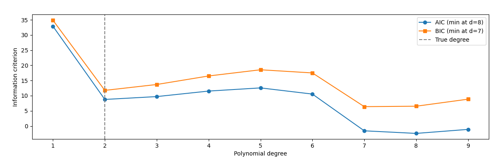
Both criteria should select a degree close to the true value of 2. BIC will generally prefer an equal or lower degree than AIC because its penalty grows with \(n\).
Summary
- Over-fitting occurs when a model is so complex that it fits training-sample noise rather than the true data-generating process. Adding polynomial terms always reduces training MSE but eventually increases test MSE.
- A train/test split reveals over-fitting: if test MSE is much larger than train MSE the model has over-fit. The test set should be used only once to evaluate the final model.
- Ridge regression adds a squared-coefficient penalty \(\lambda \|\beta\|_2^2\) to the OLS objective. Its closed-form solution \(\hat\beta = (X^\top X/n + \lambda\Lambda)^{-1}X^\top y/n\) shrinks all coefficients toward zero without setting any exactly to zero.
- Lasso regression adds an absolute-value penalty \(\lambda \|\beta\|_1\) which can be solved by coordinate descent. The soft-thresholding operator sets small coefficients exactly to zero, performing automatic variable selection. A useful rule of thumb: lasso selects at most as many variables as there are observations.
- The hyper-parameter \(\lambda\) is chosen by \(k\) fold cross-validation, which estimates out-of-sample performance by rotating which fold is held out for validation.
Review Questions
Lecture 5: Neural network
Skills you learn in this lecture: program a neural network and the effects of hyper-parameter choices like the number of hidden layers, nodes per layer, activation function, epochs, learning rate; identify over-fitting and under-fitting.
Learning Objectives
After this lecture you will be able to:
- Describe the architecture of a feedforward neural network with input, hidden, and output layers.
- Implement forward propagation from scratch using matrix multiplication.
- Derive and implement the backpropagation algorithm using the chain rule.
- Explain the role of activation functions (ReLU, sigmoid, tanh, softmax) and choose between them.
- Identify over-fitting and under-fitting from train and test accuracy.
- Translate a numpy neural network into TensorFlow code using
tf.GradientTape. - Build the same model concisely using the Keras Sequential API.
Introduction
In lectures 3 and 4 we saw that OLS, ridge, and lasso all fit a linear model. Increasing the polynomial degree adds flexibility but risks over-fitting; regularization trades off bias against variance to control the over-fitting risk.
Neural networks take this logic further. Instead of manually specifying a feature transformation (\(x, x^2, x^3, \ldots\)), the network learns the transformation from data. Each hidden layer applies a learnable linear map followed by a nonlinear activation function, stacking simple computations to represent surprisingly complex relationships.
For this lecture we move from regression to classification using the Iris dataset: 150 measurements of four flower features (sepal length, sepal width, petal length, petal width) for three species – setosa, versicolor, and virginica. The goal is to predict species from measurements.
A neural network with one or two hidden layers solves this problem well. We vary hyper-parameters like the number of hidden layers, epochs, learning rate, and activation function in the interactive app to see what the effects are on the model’s prediction.
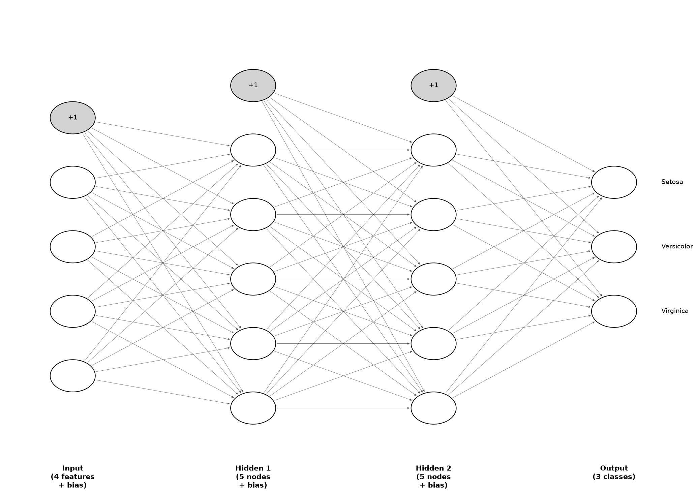
Figure 4: Neural network for the Iris dataset
Figure 4 illustrates the neural network that the app works with. The input layer (left of the figure) has 4 nodes (the four flower features mentioned above) and a bias term (comparable to a constant in an OLS regression) denoted by the \(+1\) grey node at the top. Hidden layer 1 has 5 nodes and a bias node. Each line represents a coefficient. That is, a node in the hidden layer receives input from each of the 4 input features plus the bias. This input is of the form \(w^T x + b\) where \(x\) denotes a vector with the 4 measurements of flower features and \(b\) the bias (constant) term. This input is transformed using an activation function to which we return below. The coefficients \(w\) and \(b\) are referred to as weights. The goal is to estimate the weights of the neural network.
With this vector multiplication, bias and activation function each of the nodes in the hidden layer has a value. Then we do the same again (vector multiplication, bias, activation) as inputs for the second hidden layer. Note that the bias term in the first hidden layer has no line going into it (the constant does not depend on the values from the input layer) but does affect the values of the second hidden layer.
Finally, we do the same from the second layer to the output layer. We use a Softmax function to determine the 3 probabilities that the measurements \(x_1 ... x_4\) belong to a Setosa, Versicolor or Virginica iris.
In the app you can choose between three activation functions which are illustrated in Figure 5. We come back to these functions below. In the app, the Softmax function takes in a vector with three values and turn these into three probabilities: that is, each value is between 0 and 1 and adding the three values gives 1.
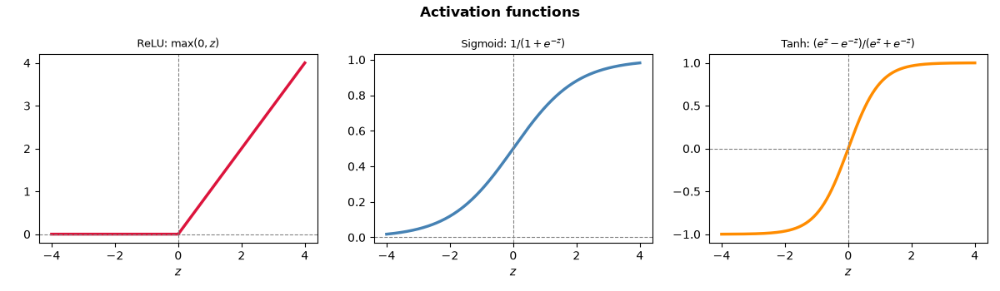
Figure 5: Three activation functions
The app also allows you to choose two hyper-parameters: the number of epochs and the learning rate. Recall that hyper-parameters are parameters that affect the estimation algorithm but are not estimated themselves; they are “tuned”. The number of epochs refers to the number of times an observation is used in estimation. Training typically requires multiple epochs because a single pass is rarely sufficient for the model to learn complex patterns. Each subsequent epoch allows the model to refine its accuracy and generalize better to unseen data. Tuning the number of epochs is finding the right balance: too few can lead to under-fitting (the model hasn’t learned enough), while too many can cause over-fitting (the model memorizes the training data and fails to generalize).
The learning rate specifies to which extent parameters change given that a change improves the fit (reduces the loss) of the estimation. If the learning rate is too low, it takes a lot of time before the algorithm converges to the parameter values that minimize the loss. If the learning rate is too high, parameters may over-shoot their optimal value and sometimes the algorithm does not converge at all.
App
Train a feedforward neural network on the Iris dataset and explore how architecture and hyper-parameters affect train versus test accuracy. Choose two features for the scatter plot axes: filled circles are correctly classified flowers; open circles are misclassified ones. The confusion matrices show, for each true species, how many observations were predicted as each class.
Python Code Explanation
The iris dataset
The Iris dataset is one of the most studied datasets in machine learning. It contains 150 observations: 50 each of Iris setosa, Iris versicolor, and Iris virginica. Each observation records four continuous measurements in centimetres:
| Feature | Description |
|---|---|
| Sepal length | Length of the sepal |
| Sepal width | Width of the sepal |
| Petal length | Length of the petal |
| Petal width | Width of the petal |
The three species appear in order in the raw data (rows 1–50 setosa, 51–100 versicolor, 101–150 virginica), so we shuffle before splitting into train and test sets. We normalize features by z-scoring: subtracting the training mean and dividing by the training standard deviation. This ensures that all four features enter the network on a comparable scale, which stabilizes gradient descent. We also use the training mean and standard deviation to normalize the test data.
Using the dictionary species_map and the map function we turn the names (strings) into integers 0, 1, 2.
import numpy as np
import pandas as pd
from sklearn.model_selection import train_test_split
cols = ["sepal_length", "sepal_width", "petal_length", "petal_width", "species"]
iris = pd.read_csv('./data/iris_data.csv', names=cols)
species_map = {"Iris-setosa": 0, "Iris-versicolor": 1, "Iris-virginica": 2}
iris["label"] = iris["species"].map(species_map)
X = iris[["sepal_length", "sepal_width", "petal_length", "petal_width"]].values
y = iris["label"].values
# 80/20 split, shuffled
X_tr_raw, X_te_raw, y_train, y_test = train_test_split(
X, y, test_size=0.2, random_state=0, shuffle=True
)
# Z-score normalisation: fit on training set, apply to both sets
mu = X_tr_raw.mean(axis=0)
sig = X_tr_raw.std(axis=0)
X_train = (X_tr_raw - mu) / sig
X_test = (X_te_raw - mu) / sig
print(f"Training: {len(X_train)} samples, Test: {len(X_test)} samples")
print(f"Feature means (train): {np.round(mu, 2)}")
print(f"Feature stds (train): {np.round(sig, 2)}")
print(f"Class counts (train): {np.bincount(y_train)}")
Training: 120 samples, Test: 30 samples Feature means (train): [5.88 3.05 3.82 1.23] Feature stds (train): [0.85 0.43 1.78 0.77] Class counts (train): [39 37 44]
Activation functions
Each hidden layer applies a linear transformation followed by a nonlinear activation function \(\sigma(\cdot)\). Without nonlinearity, stacking layers would still produce a linear model. The output layer uses softmax, which converts raw scores into class probabilities.
Hidden-layer activations
| Function | Formula | Range | Property |
|---|---|---|---|
| ReLU | \(\max(0, z)\) | \([0, \infty)\) | Fast; sparse; most popular in practice |
| Sigmoid | \(\frac{1}{1+e^{-z}}\) | \((0, 1)\) | Saturates for large \(z\) |
| Tanh | \(\frac{e^z - e^{-z}}{e^z + e^{-z}}\) | \((-1, 1)\) | Zero-centred; also saturates |
Output-layer activation: softmax
For a $K$-class problem the softmax converts a vector of \(K\) raw scores \((z_1, \ldots, z_K)\) into probabilities:
\[\hat{y}_k = \frac{e^{z_k}}{\sum_{j=1}^K e^{z_j}}, \qquad k = 1, \ldots, K.\]
All \(\hat{y}_k \geq 0\) and they sum to one, so they can be interpreted as class probabilities.
Cross-entropy loss
We minimise the average negative log-probability of the true class:
\[L = -\frac{1}{n} \sum_{i=1}^n \log \hat{y}_{y_i},\]
where \(\hat{y}_{y_i}\) is the predicted probability for observation \(i\)’s true class \(y_i\). When \(\hat{y}_{y_i} \to 1\) (correct and confident) the loss \(\to 0\); when \(\hat{y}_{y_i} \to 0\) the loss \(\to \infty\).
import numpy as np
import matplotlib.pyplot as plt
z = np.linspace(-4, 4, 300)
def relu(z): return np.maximum(0, z)
def sigmoid(z): return 1 / (1 + np.exp(-z))
def tanh_fn(z): return np.tanh(z)
# Softmax for 3 classes: vary z_1, fix z_2=0, z_3=-z_1
Z3 = np.column_stack([z, np.zeros_like(z), -z])
E = np.exp(Z3 - Z3.max(axis=1, keepdims=True))
fig, axes = plt.subplots(1, 3, figsize=(12, 3.5))
fns = [relu, sigmoid, tanh_fn]
labels = [r"ReLU: $\max(0,z)$",
r"Sigmoid: $1/(1+e^{-z})$",
r"Tanh: $(e^z-e^{-z})/(e^z+e^{-z})$"]
colors = ["crimson", "steelblue", "darkorange"]
for ax, fn, label, color in zip(axes, fns, labels, colors):
ax.plot(z, fn(z), lw=2.5, color=color)
ax.axhline(0, color="grey", lw=0.8, ls="--")
ax.axvline(0, color="grey", lw=0.8, ls="--")
ax.set_title(label, fontsize=9)
ax.set_xlabel(r"$z$")
plt.suptitle("Activation functions", fontsize=12, fontweight="bold")
plt.tight_layout()
The key difference between ReLU and sigmoid/tanh is that ReLU does not saturate for large positive values: its gradient is always 1 when \(z > 0\). Sigmoid and tanh both have near-zero slopes when \(|z|\) is large, which causes the vanishing gradient problem; layers receive very small gradient signals and learn slowly or not at all.
Neural network in numpy
We now implement the full neural network in numpy using matrix notation. The network has:
- Input layer: 4 features (one per iris measurement).
- \(H\) hidden layers, each with 5 nodes.
- Output layer: 3 nodes (one per species), softmax activation.
Parameters are stored as a list of \([\mathbf{W}_k, \mathbf{b}_k]\) pairs. For layer \(k\) with \(n_{\text{in}}\) inputs and \(n_{\text{out}}\) outputs: weight matrix \(\mathbf{W}_k \in \mathbb{R}^{n_{\text{in}} \times n_{\text{out}}}\) and bias \(\mathbf{b}_k \in \mathbb{R}^{n_{\text{out}}}\).
Initialisation. We use He initialization for ReLU (\(\sigma_W = \sqrt{2/n_{\text{in}}}\)) and Xavier initialization for sigmoid/tanh (\(\sigma_W = \sqrt{1/n_{\text{in}}}\)). Weights that are too large cause exploding activations; too small causes vanishing gradients from the outset.
Forward pass. For each layer \(k\):
\[\mathbf{Z}_k = \mathbf{A}_{k-1} \mathbf{W}_k + \mathbf{b}_k, \qquad \mathbf{A}_k = \sigma(\mathbf{Z}_k),\]
where \(\mathbf{A}_0 = \mathbf{X}\) (the input matrix, rows = observations) and $σ = $ softmax for the last layer.
Backward pass. The combined gradient of the cross-entropy loss and the softmax at the output layer is:
\[\frac{\partial L}{\partial \mathbf{Z}_{\text{last}}} = \frac{\hat{\mathbf{Y}} - \mathbf{Y}}{n},\]
where \(\mathbf{Y}\) is the one-hot encoded label matrix. For each earlier layer \(k\) we propagate backwards via the chain rule:
\[\frac{\partial L}{\partial \mathbf{W}_k} = \mathbf{A}_{k-1}^\top \frac{\partial L}{\partial \mathbf{Z}_k}, \qquad \frac{\partial L}{\partial \mathbf{Z}_{k-1}} = \left(\frac{\partial L}{\partial \mathbf{Z}_k} \mathbf{W}_k^\top\right) \odot \sigma'(\mathbf{Z}_{k-1}),\]
where \(\odot\) denotes element-wise multiplication. Parameters are updated by gradient descent: \(\mathbf{W}_k \leftarrow \mathbf{W}_k - \eta \frac{\partial L}{\partial \mathbf{W}_k}\) where \(\eta > 0\) is called the learning rate.
# ── Activation functions ─────────────────────────────────────────────────────
def activate(Z, fn):
if fn == "relu": return np.maximum(0, Z)
if fn == "sigmoid": return 1 / (1 + np.exp(-np.clip(Z, -40, 40)))
return np.tanh(Z)
def activate_grad(Z, A, fn):
if fn == "relu": return (Z > 0).astype(float)
if fn == "sigmoid": return A * (1 - A)
return 1 - A ** 2
def softmax(Z):
E = np.exp(Z - Z.max(axis=1, keepdims=True))
return E / E.sum(axis=1, keepdims=True)
# ── Initialisation ────────────────────────────────────────────────────────────
def init_params(layer_sizes, fn, seed=42):
rng = np.random.default_rng(seed)
params = []
for i in range(len(layer_sizes) - 1):
scale = (np.sqrt(2 / layer_sizes[i]) if fn == "relu"
else np.sqrt(1 / layer_sizes[i]))
W = rng.normal(0, scale, (layer_sizes[i], layer_sizes[i + 1]))
b = np.zeros(layer_sizes[i + 1])
params.append([W, b])
return params
# ── Forward pass ──────────────────────────────────────────────────────────────
def forward(X, params, fn):
As, Zs = [X], []
for k, (W, b) in enumerate(params):
Z = As[-1] @ W + b
Zs.append(Z)
A = activate(Z, fn) if k < len(params) - 1 else softmax(Z)
As.append(A)
return As, Zs
# ── Backward pass ─────────────────────────────────────────────────────────────
def backward(As, Zs, params, Y_oh, fn):
n = len(Y_oh)
grads = []
dZ = (As[-1] - Y_oh) / n # softmax + cross-entropy gradient
for i in range(len(params) - 1, -1, -1):
dW = As[i].T @ dZ
db = dZ.sum(axis=0)
grads.insert(0, (dW, db))
if i > 0:
dA = dZ @ params[i][0].T
dZ = dA * activate_grad(Zs[i - 1], As[i], fn)
return grads
# ── Training loop ─────────────────────────────────────────────────────────────
layer_sizes = [4, 5, 5, 3] # two hidden layers of 5 nodes each
fn, lr = "relu", 0.1
Y_oh = np.eye(3)[y_train]
params = init_params(layer_sizes, fn)
loss_hist = []
for epoch in range(300):
As, Zs = forward(X_train, params, fn)
loss = -np.mean(np.sum(Y_oh * np.log(As[-1] + 1e-12), axis=1))
loss_hist.append(loss)
grads = backward(As, Zs, params, Y_oh, fn)
for j, (dW, db) in enumerate(grads):
params[j][0] -= lr * dW
params[j][1] -= lr * db
# ── Evaluate ──────────────────────────────────────────────────────────────────
def predict(X):
As, _ = forward(X, params, fn)
return np.argmax(As[-1], axis=1)
train_acc = np.mean(predict(X_train) == y_train)
test_acc = np.mean(predict(X_test) == y_test)
print(f"Final cross-entropy loss: {loss_hist[-1]:.4f}")
print(f"Train accuracy: {train_acc:.1%}")
print(f"Test accuracy: {test_acc:.1%}")
f1f9773a-ba5d-461c-89f7-60090f8c0baa
Final cross-entropy loss: 0.0725 Train accuracy: 96.7% Test accuracy: 96.7%
Neural network in TensorFlow with GradientTape
TensorFlow provides automatic differentiation: you specify only the forward pass inside a tf.GradientTape() context, and TensorFlow computes all gradients automatically. This is more convenient than hand-coding backpropagation and scales to any architecture without modification.
The code below replicates the numpy network exactly – same architecture, same He initialisation, same gradient-descent update – but using TensorFlow variables and operations.
import tensorflow as tf
# ── Define weight variables ───────────────────────────────────────────────────
rng = np.random.default_rng(42)
layer_sizes = [4, 5, 5, 3]
weights, biases = [], []
for i in range(len(layer_sizes) - 1):
scale = np.sqrt(2 / layer_sizes[i]) # He initialisation
W = tf.Variable(rng.normal(0, scale, (layer_sizes[i], layer_sizes[i+1])),
dtype=tf.float32)
b = tf.Variable(tf.zeros(layer_sizes[i + 1]), dtype=tf.float32)
weights.append(W)
biases.append(b)
trainable_vars = weights + biases
# ── Forward pass using TensorFlow ops ────────────────────────────────────────
def forward_tf(X):
A = tf.cast(X, tf.float32)
for k in range(len(weights)):
Z = A @ weights[k] + biases[k]
A = tf.nn.relu(Z) if k < len(weights) - 1 else tf.nn.softmax(Z)
return A
# ── Training with GradientTape ────────────────────────────────────────────────
optimizer = tf.optimizers.SGD(learning_rate=0.1)
Y_oh_train = tf.one_hot(y_train, depth=3, dtype=tf.float32)
X_tr_tf = tf.constant(X_train, dtype=tf.float32)
loss_hist_tf = []
for epoch in range(300):
with tf.GradientTape() as tape:
preds = forward_tf(X_tr_tf)
loss = -tf.reduce_mean(
tf.reduce_sum(Y_oh_train * tf.math.log(preds + 1e-12), axis=1)
)
grads = tape.gradient(loss, trainable_vars)
optimizer.apply_gradients(zip(grads, trainable_vars))
loss_hist_tf.append(float(loss))
# ── Evaluate ──────────────────────────────────────────────────────────────────
preds_tr = np.argmax(forward_tf(tf.constant(X_train, dtype=tf.float32)), axis=1)
preds_te = np.argmax(forward_tf(tf.constant(X_test, dtype=tf.float32)), axis=1)
print(f"Train accuracy: {np.mean(preds_tr == y_train):.1%}")
print(f"Test accuracy: {np.mean(preds_te == y_test):.1%}")
Train accuracy: 96.7% Test accuracy: 96.7%
The tf.GradientTape() context records all computations involving tf.Variable objects. After the forward pass, tape.gradient(loss, trainable_vars) computes the gradient of the loss with respect to every variable in one call – no manual chain-rule derivations needed. This is the mechanism that powers all modern deep-learning frameworks.
Neural network in Keras
Keras is the high-level API built on top of TensorFlow. Instead of managing weight variables and writing the training loop manually, Keras lets you specify the architecture in a few lines and calls model.fit() to handle training.
The architecture below matches the numpy and TensorFlow versions: two hidden layers of 5 nodes each, followed by a 3-class softmax output. Parameter counts: \(4 \times 5 + 5 = 25\) (first hidden), \(5 \times 5 + 5 = 30\) (second hidden), \(5 \times 3 + 3 = 18\) (output).
| Layer | Output shape | Parameters |
|---|---|---|
| dense (Dense) | (None, 5) | 25 |
| dense_1 (Dense) | (None, 5) | 30 |
| dense_2 (Dense) | (None, 3) | 18 |
| Total | 73 | |
| Trainable | 73 | |
| Non-trainable | 0 |
from tensorflow import keras
# ── Build model with the Sequential API ──────────────────────────────────────
model = keras.Sequential([
keras.Input(shape=(4,)),
keras.layers.Dense(5, activation="relu"),
keras.layers.Dense(5, activation="relu"),
keras.layers.Dense(3, activation="softmax"),
])
# ── Compile ───────────────────────────────────────────────────────────────────
model.compile(
optimizer=keras.optimizers.SGD(learning_rate=0.1),
loss="sparse_categorical_crossentropy",
metrics=["accuracy"],
)
# ── Train ─────────────────────────────────────────────────────────────────────
history = model.fit(
X_train, y_train,
epochs=300,
validation_data=(X_test, y_test),
verbose=0,
)
# ── Evaluate ──────────────────────────────────────────────────────────────────
_, train_acc = model.evaluate(X_train, y_train, verbose=0)
_, test_acc = model.evaluate(X_test, y_test, verbose=0)
print(f"Train accuracy: {train_acc:.1%} Test accuracy: {test_acc:.1%}")
Train accuracy: 97.5% Test accuracy: 100.0%
The progression numpy \(\to\) TensorFlow GradientTape \(\to\) Keras reflects the usual trade-off between transparency and convenience. The numpy version makes every operation explicit; Keras abstracts the details away but sacrifices that transparency. Understanding the numpy version lets you debug and extend any Keras model when things go wrong.
Summary
- A feedforward neural network is a sequence of linear maps and nonlinear activations. The output layer uses softmax to convert scores into class probabilities; hidden layers use activations such as ReLU, sigmoid, or tanh.
- Forward propagation computes predictions layer by layer: \(\mathbf{Z}_k = \mathbf{A}_{k-1} \mathbf{W}_k + \mathbf{b}_k\), \(\mathbf{A}_k = \sigma(\mathbf{Z}_k)\).
- Backpropagation applies the chain rule layer by layer (backwards) to compute the gradient of the loss with respect to every weight. For cross-entropy + softmax the output-layer gradient is simply \((\hat{\mathbf{Y}} - \mathbf{Y})/n\).
- Hyperparameters – depth, learning rate, epochs – control the bias–variance trade-off exactly as in lecture 4: too few layers or epochs underfits; too many overfits.
- TensorFlow GradientTape automates backpropagation for any forward pass. Keras further abstracts the training loop, allowing the same network to be specified and trained in a handful of lines.
Review Questions
- What is the role of the softmax function in the output layer? Why is it used in a multi-class setting instead of applying sigmoid to each output node independently?
- Explain why ReLU is less susceptible to the vanishing gradient problem than sigmoid or tanh.
- In the backpropagation derivation, why is the gradient at the output layer \((\hat{\mathbf{Y}} - \mathbf{Y})/n\) rather than something more complex? What property of cross-entropy + softmax gives this simplification?
- If a neural network achieves 99% training accuracy but only 65% test accuracy on the Iris dataset, what is likely happening? Which hyperparameters would you adjust, and in which direction?
- What is the conceptual difference between
tf.GradientTapeand the Kerasmodel.fit()API? When would you prefer one over the other?
Lecture 6: Demand estimation
Skills you learn in this lecture:
Learning Objectives
After this lecture you will be able to:
- Explain why ReLU activation functions can approximate any continuous function.
- Simulate a discrete-choice demand dataset from a structural utility model with consumer heterogeneity.
- Compare logistic regression and a neural network as demand estimators and explain when the neural network outperforms the linear benchmark.
- Identify over-fitting and under-fitting from train/validation loss curves and use them to tune network depth and training duration.
- Use a demand model (true, estimated logistic, or neural network) to compute the profit-maximizing price and quality combination.
Introduction
Lecture 5 used neural networks for prediction: how well does the network classify a held-out observation? This lecture adds an economic objective: what should a firm do with the estimated demand model?
We study a firm that has observed 10 000 consumers each facing a random price-quality offer. Each consumer has ten characteristics –age, gender, income, health consciousness, tech savviness, outdoor hobby, children, education, brand loyalty, and time scarcity– that determine how much they value quality and how sensitive they are to price. We know the true structural model (because we simulated the data ourselves), so we can evaluate how well logistic regression and a neural network recover the demand function and how the estimation error propagates into the firm’s pricing decision.
The key result: a neural network that is 3 percentage points more accurate than logistic regression translates into a profit that is roughly 43% higher at the firm’s optimal price. Small improvements in predictive accuracy can have large economic consequences when the demand function is non-linear.
Interactive Apps
App 1: Approximating functions with ReLU
Use the slider to choose how many ReLU basis functions approximate the target \(f(x) = x^3 + x^2 - x - 1\). The bottom panel decomposes the approximation into its individual scaled ReLU contributions, making it visible how each term adds a slope change at its knot position.
App 2: Demand neural network
Train a neural network on 1 500 simulated consumers. Choose the number of hidden layers and nodes per layer, then click Train models. The loss curve plots train and validation cross-entropy epoch by epoch alongside the logistic regression benchmark. Use it to diagnose over- and under-fitting and to find the best architecture.
Python Code Explanation
Simulating consumer data
import pandas as pd
import numpy as np
import matplotlib.pyplot as plt
from sklearn.model_selection import train_test_split
from sklearn.preprocessing import StandardScaler
from sklearn.linear_model import LogisticRegression
from sklearn.metrics import accuracy_score
import tensorflow as tf
from tensorflow import keras
from tensorflow.keras import layers, regularizers
We simulate market data based on the following utility set-up. Consider a product where consumers buy one unit or none at all. Consumer \(i\) buys one unit of quality \(q\) at price \(p\) if
\[U(q, p \mid x_i) = \alpha(x_i)\,q + \phi(x_i)\,q^2 - \beta(x_i)\,p + \delta(x_i)\,q\,p + \varepsilon_i > 0,\]
where \(\varepsilon_i \sim \text{Logistic}(0, 1)\) is idiosyncratic taste noise (McFadden 1974). The parameter \(\alpha\) is the linear term in the utility value of quality. We also allow for a non-linear effect with \(\phi\). If \(\phi < 0\) there is decreasing marginal utility of quality. The marginal value of income is given by \(\beta\). Finally, with \(\delta > 0\) we allow that a consumer derives utility from a high price, especially when the quality of the product is high; a status effect.
The coefficients \(\alpha, \phi, \beta, \delta\) are nonlinear functions of ten consumer characteristics:
| Parameter | Interpretation | Key interactions |
|---|---|---|
| \(\alpha\) | Quality valuation | Elderly \(\times\) health-conscious; outdoor parents |
| \(\phi\) | Curvature in quality | Tech-savvy: increasing returns; elderly: diminishing |
| \(\beta\) | Price sensitivity | High income \(\times\) tech: low sensitivity |
| \(\delta\) | Quality–price cross | Rich loyal: fine with high \(p\) for high \(q\) |
These interactions are deliberately non-linear so that a simple linear logistic regression cannot fit the data as well as a neural network.
The following code draws random values for each of the characteristics for \(N = 10,000\) consumers. Use an LLM or google to figure out what isinstance(X, pd.DataFrame) does.
N_CONSUMERS = 10000
def generate_consumers(n=N_CONSUMERS, seed=42):
rng = np.random.default_rng(seed)
X = np.zeros((n, 10))
X[:, 0] = rng.uniform(0, 1, n) # age
X[:, 1] = rng.binomial(1, 0.5, n) # gender
X[:, 2] = rng.beta(2, 5, n) # income (right-skewed)
X[:, 3] = rng.uniform(0, 1, n) # health_consciousness
X[:, 4] = rng.uniform(0, 1, n) # tech_savviness
X[:, 5] = rng.binomial(1, 0.4, n) # outdoor_hobby
X[:, 6] = rng.binomial(1, 0.35, n) # has_children
X[:, 7] = rng.beta(3, 2, n) # education
X[:, 8] = rng.uniform(0, 1, n) # brand_loyalty
X[:, 9] = rng.uniform(0, 1, n) # time_scarcity
cols = ['age','gender','income','health','tech','outdoor',
'children','education','brand_loyalty','time_scarcity']
return pd.DataFrame(X, columns=cols)
def compute_utility_params(X):
age = X[:, 0]; gender = X[:, 1]; income = X[:, 2]
health= X[:, 3]; tech = X[:, 4]; outdoor= X[:, 5]
children=X[:, 6]; educ = X[:, 7]; loyal = X[:, 8]; time_s = X[:, 9]
alpha = (1.5 + 2.0 * health * (age > 0.6)
+ 1.5 * outdoor * children + 0.8 * tech * educ
+ 0.5 * gender * loyal + 1.0 * time_s * income + 0.3 * educ)
phi = (0.5 * tech - 0.4 * health * (age > 0.6)
+ 0.3 * outdoor * children - 0.2 * (1 - income))
beta = (2.0 - 1.2 * income * tech - 0.8 * income * educ
+ 0.6 * (1-income)*(1-educ) + 0.3 * children*(1-income) - 0.2 * loyal)
delta = (-0.3 + 0.4 * income * loyal
- 0.5 * (1-income)*(1-tech) + 0.2 * educ * tech)
return alpha, phi, beta, delta
def utility(q, p, X):
if isinstance(X, pd.DataFrame):
X = X.values
alpha, phi, beta, delta = compute_utility_params(X)
return alpha * q + phi * q**2 - beta * p + delta * q * p
def simulate_market_data(consumers, seed=123):
rng = np.random.default_rng(seed)
n = len(consumers)
X = consumers.values
q_offers = rng.uniform(1, 5, n)
p_offers = rng.uniform(1, 10, n)
det_u = utility(q_offers, p_offers, X)
buy = ((det_u + rng.logistic(0, 1, n)) > 0).astype(int)
df = consumers.copy()
df['quality'] = q_offers
df['price'] = p_offers
df['bought'] = buy
return df
consumers = generate_consumers()
market_data = simulate_market_data(consumers)
print(f"Observations: {len(market_data)}")
print(f"Purchase rate: {market_data['bought'].mean():.3f}")
print(f"Quality range: [{market_data['quality'].min():.2f}, {market_data['quality'].max():.2f}]")
print(f"Price range: [{market_data['price'].min():.2f}, {market_data['price'].max():.2f}]")
Observations: 10000 Purchase rate: 0.265 Quality range: [1.00, 5.00] Price range: [1.00, 10.00]
We can save the market_data dataframe:
market_data.to_csv('./data/market_data.csv')
Logistic regression
With a logistic regression model we can write the purchase probability as
\[\Pr(\text{buy} \mid x, q, p) = \sigma(\mathbf{w}^\top [x, q, p] + b), \qquad \sigma(z) = \frac{1}{1+e^{-z}}\]
where \(w\) denotes the vector of coefficients on the features \(x\), quality \(q\), and price \(p\). The intercept is given by \(b\). Because it is a linear model in the features, it cannot capture the interactions we included in the (true) utility function above.
We read in the data we generated above and select the feature columns we want to include in our \(X\) matrix. We want to predict whether or not an agent bought the product. We split the data into train and test data, 80% and 20% resp. of all the data. To facilitate the algorithm, we scale the \(X\) data by subtracting the mean of each column (variable) and divide by the standard deviation. For this we use the mean and standard deviation of the train data and also apply these to the test data. Below scaler is fit on X_train and also applied to X_test. We denote the scaled version of our variables by X_train_sc, X_test_sc resp. We use sklearn’s LogisticRegression to fit a logistic regression to the train data and calculate our accuracy score on both the train and test data. That is, with logit.predict we predict whether someone bought the product or not (depending on whether probability of buying exceeds 0.5 or not) and then calculate how often this prediction is correct. Usually the accuracy is higher on the train than on the test set. Indeed we choose parameters \(w,b\) to maximize the fit on the train data.
market_data = pd.read_csv('./data/market_data.csv')
feature_cols = ['age','gender','income','health','tech','outdoor',
'children','education','brand_loyalty','time_scarcity',
'quality','price']
X_all = market_data[feature_cols].values
y_all = market_data['bought'].values
X_train, X_test, y_train, y_test = train_test_split(
X_all, y_all, test_size=0.2, random_state=42)
scaler = StandardScaler()
X_train_sc = scaler.fit_transform(X_train)
X_test_sc = scaler.transform(X_test)
logit = LogisticRegression(max_iter=1000)
logit.fit(X_train_sc, y_train)
train_acc = accuracy_score(y_train, logit.predict(X_train_sc))
test_acc = accuracy_score(y_test, logit.predict(X_test_sc))
print(f"Logistic regression — Train: {train_acc:.4f} Test: {test_acc:.4f}")
coef_df = pd.DataFrame({
'feature': feature_cols,
'coefficient': logit.coef_[0]
}).sort_values('coefficient', ascending=False)
print("\nCoefficients (sorted):")
print(coef_df.to_string(index=False))
Logistic regression — Train: 0.9103 Test: 0.9035
Coefficients (sorted):
feature coefficient
tech 2.036093
quality 1.565593
income 1.247384
education 0.724049
outdoor 0.669949
children 0.546568
brand_loyalty 0.504556
age 0.229785
gender 0.225445
health 0.166751
time_scarcity 0.104857
price -3.524566
The coefficients show that tech, quality and income increase purchase probability while price strongly reduces it. But these are average effects: the model cannot represent, for example, that high-income tech-savvy consumers are especially insensitive to price.
Neural network in TensorFlow/Keras
The following neural network has architecture \(12 \to 64 \to 32 \to 16 \to 1\) (size of input, three hidden and output layers) with ReLU activations in the hidden layers, batch normalization, and dropout for regularization. A sigmoid output gives the purchase probability directly.
The function build_demand_net has three arguments:
input_dim=12: the model expects 12 features (\(x,p,q\) in the notation from above)hidden_dims=(64, 32, 16): three hidden layers with 64, 32, and 16 neurons respectivelydropout=0.2: a regularization parameter (explained below)
keras.Input declares the entry point of the network: a vector of 12 numbers representing one observation. Think of x below as the data flowing through the network, being transformed at each step.
The for loop builds each hidden layer in sequence. Four operations happen at every layer:
| Line | What it does | Economic analogy |
|---|---|---|
Dense(h, ...) |
Matrix multiplication: computes Wx + b with h neurons |
A linear projection into a new space |
BatchNormalization() |
Rescales activations to have mean 0, variance 1 | Standardizing variables to make estimation stable |
ReLU() |
Applies the ReLu activation function | Introduces the “kinks” needed to fit non-linear demand curves |
Dropout(0.2) |
Randomly switches off 20% of neurons during training | A form of regularization, analogous to ridge/lasso; prevents over-fitting |
The l2(1e-4) in Dense adds an L2 penalty on the weights to the loss function; exactly the same idea as ridge regression.
The final layer outputs produces a single number between 0 and 1 via the sigmoid function:
\[\sigma(z) = \frac{1}{1+e^{-z}}\]
This is the predicted purchase probability. keras.Model then packages the whole computation graph into one reusable object. As we defined default values for all parameters, we can call the function as build_demand_net().
Experiment with the network by changing values for hyper-parameters like the dropout, kernel_regularizers, hidden_dims and see how it changes the outcome.
# ── Architecture ──────────────────────────────────────────────────────────────
def build_demand_net(input_dim=12, hidden_dims=(64, 32, 16), dropout=0.2):
inputs = keras.Input(shape=(input_dim,))
x = inputs
for h in hidden_dims:
x = layers.Dense(h, kernel_regularizer=regularizers.l2(1e-4))(x)
x = layers.BatchNormalization()(x)
x = layers.ReLU()(x)
x = layers.Dropout(dropout)(x)
outputs = layers.Dense(1, activation='sigmoid')(x)
return keras.Model(inputs, outputs, name='DemandNet')
model = build_demand_net()
Before training, you must specify three things:
loss = 'binary_crossentropy': the objective function being minimized. This is identical to the log-likelihood used in logistic regression:
\[\mathcal{L} = -\frac{1}{N}\sum_{i}\left[y_i \log\hat{p}_i + (1-y_i)\log(1-\hat{p}_i)\right]\]
optimizer = Adam(...): the algorithm that updates the weights. Adam is a sophisticated gradient descent method that adapts the learning rate for each parameter automatically. Think of it as a smarter version of gradient descent.metrics = ['accuracy']: what to monitor during training (not what is optimized which is given byloss).
# ── Training ──────────────────────────────────────────────────────────────────
model.compile(
optimizer=keras.optimizers.Adam(learning_rate=1e-3),
loss='binary_crossentropy',
metrics=['accuracy'],
)
history = model.fit(
X_train_sc, y_train,
validation_data=(X_test_sc, y_test),
epochs=100,
batch_size=256,
verbose=0,
)
The variable history stores metrics per epoch (e.g., loss, accuracy) for both training and validation sets, useful for plotting learning curves later on:
history.history['loss']gives the training loss per epoch;history.history['val_loss']the validation loss per epoch andhistory.history['accuracy']the training accuracy per epoch.
| Argument | Meaning |
|---|---|
X_train_sc, y_train |
Training features (scaled) and labels |
validation_data…= |
Held-out test set; monitored at each epoch but never used to update weights |
epochs=100 |
The algorithm passes through the entire dataset 100 times |
batch_size=256 |
Weights are updated after every 256 observations (called a mini-batch), not after seeing the whole dataset |
plt.plot(history.history['loss'], label='Train Loss')
plt.plot(history.history['val_loss'], label='Validation Loss')
plt.xlabel('Epochs')
plt.ylabel('Loss')
plt.title('Train vs Validation Loss')
plt.legend()
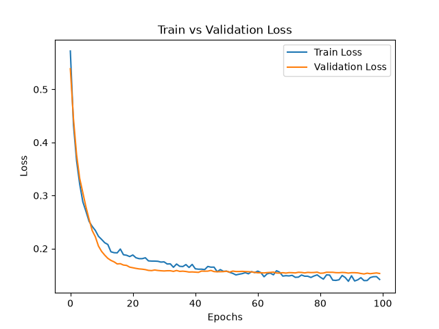
After 20 epochs the validation loss does not really decrease any further. Hence we estimate the neural network with 20 epochs.
The neural network –like the logistic regression– is compared on unseen test data:
model.predict()returns probabilities; comparing the probabilities to \(0.5\) converts them to binary predictions.squeeze()removes an unnecessary extra dimension from the output array; try yourself by typingnp.random.normal(size=(3,1)).squeeze().
model.fit(X_train_sc, y_train, epochs=20, batch_size=256, verbose=0,)
# ── Evaluate ──────────────────────────────────────────────────────────────────
nn_test_acc = accuracy_score(y_test, (model.predict(X_test_sc, verbose=0).squeeze() > 0.5))
logit_test_acc = test_acc
print(f"Logistic regression — Test accuracy: {logit_test_acc:.4f}")
print(f"Neural network — Test accuracy: {nn_test_acc:.4f}")
print(f"Improvement: {nn_test_acc - logit_test_acc:+.4f}")
Logistic regression Test accuracy: 0.9035
Neural network Test accuracy: 0.9290
Improvement: +0.0255
The neural network captures non-linearities and interactions between features that logistic regression cannot. The network learns these automatically, although at the cost of interpretability (neural networks are often seen as a black box). The network achieves roughly 93% test accuracy versus 90% for logistic regression.
Profit maximization
Once we have an estimated demand model \(\hat{P}(\text{buy} \mid q, p, X)\), we can compute the firm’s expected profit at any \((q, p)\):
\[\pi(q, p) = \hat{P}(\text{buy} \mid q, p, X) \cdot (p - c(q))\]
and we assume that the unit cost of producing quality \(q\) equals \(c(q) = 0.5 q^2\).
We find the profit-maximizing \((q^*, p^*)\) by numerical optimization (here using differential evolution, a global method that tends to avoid local maxima). We evaluate the predicted profit maximizing \(p,q\) using the true profit function so we see whether better estimation leads to better decisions.
We make the following comparisons:
- we calculate the optimal \((q^*,p^*)\) for the true model; if the firm knows the underlying utility functions, this is the profit it would get;
- we derive the optimal \((q_{lr},p_{lr})\) for a firm maximizing profits using the demand function estimated with the logistic regression; then we calculate what the true profits will be if the firm brings \((q_{lr},p_{lr})\) to the market and
- we derive the optimal \((q_{nn},p_{nn})\) for a firm maximizing profits using the demand function estimated with the neural network; then we calculate what the true profits will be if the firm brings \((q_{nn},p_{nn})\) to the market.
Try np.full(10,3) to see what np.full(n,q) does.
import numpy as np
from scipy.optimize import differential_evolution
def cost(q):
return 0.5 * q**2
def profit_given_model(q, p, X, model_type='true'):
n = len(X)
X_arr = X.values if hasattr(X, 'values') else X
if model_type == 'true':
det_u = utility(q, p, X_arr)
prob_buy = 1.0 / (1.0 + np.exp(-det_u))
elif model_type == 'nn':
X_qp = np.column_stack([X_arr, np.full(n, q), np.full(n, p)])
prob_buy = model.predict(scaler.transform(X_qp), verbose=0).squeeze()
elif model_type == 'logit':
X_qp = np.column_stack([X_arr, np.full(n, q), np.full(n, p)])
prob_buy = logit.predict_proba(scaler.transform(X_qp))[:, 1]
return float(np.mean(prob_buy * (p - cost(q))))
bounds = [(1.0, 5.0), (1.0, 10.0)]
results = {}
for m in ['true', 'nn', 'logit']:
def neg_profit(params, m=m):
return -profit_given_model(params[0], params[1], consumers, m)
res = differential_evolution(neg_profit, bounds, seed=42, maxiter=200, tol=1e-6)
q_opt, p_opt = res.x
results[m] = {
'q*': q_opt,
'p*': p_opt,
'true_profit': profit_given_model(q_opt, p_opt, consumers, 'true'),
}
print(f"{'Model':<12} {'q*':>7} {'p*':>7} {'True profit':>13}")
print("-" * 43)
for m, r in results.items():
print(f"{m:<12} {r['q*']:>7.3f} {r['p*']:>7.3f} {r['true_profit']:>13.4f}")
nn_gain = (results['nn']['true_profit'] - results['logit']['true_profit'])
nn_gain_pct = nn_gain / results['logit']['true_profit'] * 100
print(f"\nNN profit gain over logit: {nn_gain:.4f} ({nn_gain_pct:.1f}%)")
print(f"Upper bound (true model): {results['true']['true_profit']:.4f}")
NN profit gain over logit: 0.1258 (47.2%) Upper bound (true model): 0.4189
The results show that better demand estimation pays off directly in terms of profits:
| Model | \(q^*\) | \(p^*\) | True profit |
|---|---|---|---|
| True model | 1.137 | 1.705 | 0.4189 |
| Neural network | 1.047 | 1.907 | 0.3924 |
| Logistic regression | 1.012 | 2.527 | 0.2666 |
The neural network recovers 91% of the true model’s profit, while logistic regression recovers only 64%. The profit gain of the neural network over logistic regression is roughly 47%.
The economic intuition: logistic regression appears to under-estimate both the price sensitivity and quality valuation of consumers (because it cannot represent the relevant interactions). Therefore it recommends too high a price at too low a quality level. The neural network captures this heterogeneity and recommends a price closer to the true optimum.
Above we consider the case where the firm offers one option \((q,p)\) for all consumers. But the firm could develop a menu of options targeted at different consumer groups. It goes too far to present this analysis and the Python code here, but this also illustrates the lack of interaction terms in the logistic regression.
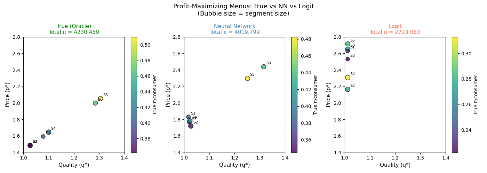
Figure 6: Price discrimination based on the estimated demand and the true underlying model
Figure 6 illustrates the situation where the firm clusters its customers into six segments. We assume that through targeted marketing the firm can offer each segment its own bundle \((q,p)\) without worrying about incentive compatibility constraints (i.e. first-degree price discrimination). In the true model (where the firm has an oracle to learn the underlying utility functions), the profit maximizing menu of choices differentiates in both quality and prices. With a neural network the firm differentiates between low and high valuation consumers but does not pick up the differentiation among the low types. Perhaps with more observations the neural network would improve the low valuation offerings in its menu. The firm basing its marketing on a logistic regression fails to identify the interactions completely and does not differentiate its quality offerings.
Summary
- ReLU basis functions span the space of piecewise-linear functions. Adding more ReLUs reduces approximation error; in a trained neural network the knot positions are learned jointly with the amplitudes.
- Discrete-choice demand can be estimated as a binary classification problem: a sigmoid output gives a purchase probability, and binary cross-entropy is the natural loss function.
- Logistic regression fitting a linear relationship misses non-linear interactions between consumer characteristics, quality, and price. A neural network with two or three hidden layers captures these interactions and achieves higher out-of-sample accuracy.
- Train/validation loss curves reveal over-fitting and under-fitting. Use them to choose depth and training duration.
- Profit impact: in our example a 3 percentage-point accuracy improvement translates into a 43% profit gain at the optimal price.
Review Questions
- The universal approximation theorem states that a neural network with a single hidden layer and enough units can approximate any continuous function. Why does this not mean that one hidden layer is always sufficient in practice?
- In the demand model, the price coefficient \(\beta(x)\) varies across consumers. Explain why logistic regression cannot capture this heterogeneity and what the estimation consequence is.
- A student trains a demand network and finds that train accuracy is 95% but validation accuracy is 72%. What is wrong and how would you fix it?
- Why is profit a better evaluation criterion than accuracy when comparing demand models for a pricing application?
- In the profit-maximisation results, the neural network recommends a lower price than logistic regression (\(p^* = 1.94\) vs \(p^* = 2.53\)). Using the structure of the utility model, explain why logistic regression overestimates the optimal price.
Lecture 7: An empirical and theoretical application of neural networks
Skills you learn in this lecture:
Learning Objectives
After this lecture you will be able to:
- Explain why time-series data require a strict temporal train/validation split and describe the data-leakage risk when lagged variables are used.
- Implement a small MLP (Multi-Layer Perceptron) in TensorFlow/Keras with
tanhactivations and interpret its learning curves. - Describe the Phillips curve and what a neural network adds over a linear specification.
- Explain how a neural network can solve for Nash equilibria without any labelled data, using only the economic model’s first-order conditions as the loss function.
- Use TensorFlow’s
GradientTapeto differentiate profit expressions and train an equilibrium-solving network.
Introduction
This lecture covers two complementary applications of neural networks in economics.
The first is empirical: estimating the Phillips curve (the relationship between unemployment and inflation) for European countries. The data are monthly Eurostat observations for many countries over more than two decades. A linear specification imposes a fixed slope, but the true relationship is probably state-dependent: the effect of unemployment on inflation is stronger when the economy is near full employment. A small multi-layer network with tanh activations can pick up this curvature automatically. The key challenge is not the network itself but the data preparation: with monthly observations and lagged features, a naive random split would leak future information into the training set.
The second is theoretical: using a network to solve the Cournot duopoly equilibrium. Here there is no data at all: the network maps cost parameters \((c_1, c_2)\) to quantities \((x_1, x_2)\) and is trained to make both firms’ first-order conditions hold simultaneously. The loss function is derived from the economic model, not from labelled observations. This is a simple example of the broader idea that neural networks can solve equations where a solution is known to exist but deriving this solution is expensive or impossible to compute in closed form.
Interactive App
The app trains a small neural network to approximate the Cournot equilibrium. Use the slider to fix \(c_2\) and choose the number of training iterations, then click Train neural network. The plots compare the network’s predicted equilibrium output \(x_1\) and price \(p\) to the closed-form solution as \(c_1\) varies from 0.1 to 3.
Python Code Explanation
Nonlinear Phillips curve
import pandas as pd
import numpy as np
import matplotlib.pyplot as plt
import tensorflow as tf
from tensorflow import keras
from tensorflow.keras import layers
Data and train/validation split
We load monthly (variable date) Eurostat data for many EU countries (geo), covering HICP (Harmonised Index of Consumer Prices) year-on-year inflation (hicp_yoy) and the unemployment rate (urate) with three lags of each variable:
df = pd.read_csv('./data/data_phillips_curve.csv')
print(df.head())
Unnamed: 0 geo date ... urate_lag1 urate_lag2 urate_lag3 0 3 AT 1997-05-01 ... 5.266667 5.300000 5.266667 1 4 AT 1997-06-01 ... 5.266667 5.266667 5.300000 2 5 AT 1997-07-01 ... 5.266667 5.266667 5.266667 3 6 AT 1997-08-01 ... 5.300000 5.266667 5.266667 4 7 AT 1997-09-01 ... 5.266667 5.300000 5.266667
The columns urate, urate_lag1, urate_lag2, urate_lag3 give the unemployment rate at time \(t, t-1, t-2, t-3\), and similarly for hicp_yoy.
Why the temporal split matters
With time-series data and lagged features, a random train/validation split would cause data leakage: the training set might contain observation \(t+1\) while the validation set contains \(t\), and the lag features of \(t+1\) include the target value at \(t\). The network would effectively see the future during training.
The correct approach is a strict temporal cutoff: all observations before a fixed date go into training, everything from that date onward goes into validation.
X_cols = ["urate", "urate_lag1", "urate_lag2", "urate_lag3",
"hicp_yoy_lag1", "hicp_yoy_lag2", "hicp_yoy_lag3"]
y_col = "hicp_yoy"
df["date"] = [pd.Timestamp(d) for d in df["date"].values]
cutoff_date = pd.Timestamp("2019-01-01") # train < 2019, validate >= 2019
train = df[df["date"] < cutoff_date].copy()
valid = df[df["date"] >= cutoff_date].copy()
print(f"Train rows: {len(train)}, Validation rows: {len(valid)}")
Train rows: 8376, Validation rows: 2797
Because the split follows calendar time, no information from the validation period leaks backward. The general rule for panel data with lags: sort by date, choose a cutoff, put everything before the cutoff in training — never use train_test_split with shuffle=True for time series.
Next we standardize our variables:
mu = train[X_cols].mean(axis=0)
sd = train[X_cols].std(axis=0)
train_X = ((train[X_cols] - mu) / sd).values.astype("float32")
valid_X = ((valid[X_cols] - mu) / sd).values.astype("float32")
train_y = train[y_col].values.astype("float32")
valid_y = valid[y_col].values.astype("float32")
Notice that the validation features are standardized with the training mean and standard deviation, not the validation statistics. Applying the training statistics to both sets ensures the network sees the same scale at inference time as at training time.
Network architecture: tanh instead of ReLU
For the Phillips curve we use tanh activations rather than ReLU. The tanh function is smooth and symmetric around zero, which is useful when the target variable (inflation) can be both positive and negative and when the relationship is expected to be curved rather than piecewise-linear.
tf.random.set_seed(0)
model = keras.Sequential([
layers.Input(shape=(len(X_cols),)), # 7 features
layers.Dense(32, activation="tanh"),
layers.Dense(16, activation="tanh"),
layers.Dense(1), # linear output: predicted inflation
])
model.compile(
optimizer=keras.optimizers.Adam(1e-3),
loss="mse",
metrics=["mae"],
)
history = model.fit(
train_X, train_y,
validation_data=(valid_X, valid_y),
epochs=60,
batch_size=256,
verbose=0,
)
hist = pd.DataFrame(history.history)
print(hist.tail(3))
loss mae val_loss val_mae
57 23.305353 0.605331 19.817953 1.017315
58 23.141350 0.603114 19.502026 1.011587
59 22.979515 0.600987 19.191534 1.006326
Learning curves and validation MAE
plt.figure()
plt.plot(hist["loss"], label="train MSE")
plt.plot(hist["val_loss"], label="valid MSE")
plt.xlabel("epoch"); plt.ylabel("MSE")
plt.legend()
plt.title("Learning curves — Phillips curve MLP")
plt.tight_layout()
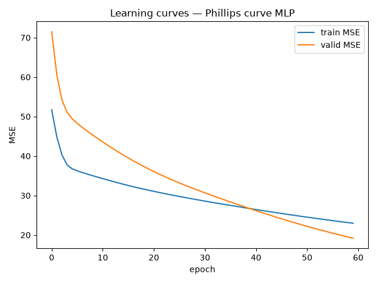
We can calculate the mean absolute error and the root means squared error.
pred_valid = model.predict(valid_X, verbose=0).squeeze()
mae = np.mean(np.abs(valid_y - pred_valid))
rmse = np.sqrt(np.mean((valid_y - pred_valid)**2))
print(f"Validation MAE: {mae:.3f} pp | RMSE: {rmse:.3f} pp")
Validation MAE: 1.006 pp | RMSE: 4.381 pp
An MAE of about 1 percentage point means the network’s inflation forecasts are, on average, 1 pp off from the realized value.
With the three lags in our specification, it is not obvious how to plot the resulting Phillips curve in unemployment-inflation space.
Neural network solution of the Cournot equilibrium
The second application turns the idea of neural networks upside down: instead of fitting a pattern in data, we train a network to satisfy a system of equations derived from economic theory.
The Cournot model
Two firms produce a homogeneous good with inverse demand \(p(x_1, x_2) = 1 - x_1 - x_2\) and quadratic costs \(C_i(x_i) = \tfrac{1}{2} c_i x_i^2\). Firm \(i\) maximizes
\[\pi_i = (1 - x_1 - x_2)\, x_i - \tfrac{1}{2} c_i x_i^2.\]
Taking the derivative with respect to \(x_i\) and setting it to zero gives the first-order condition (FOC):
\[\frac{\partial \pi_i}{\partial x_i} = 1 - (2 + c_i)\,x_i - x_j = 0.\]
The closed-form Nash equilibrium is
\[x_1^* = \frac{1 + c_2}{(2+c_1)(2+c_2)-1}, \qquad x_2^* = \frac{1 + c_1}{(2+c_1)(2+c_2)-1}.\]
Equilibrium-solving network
We build a small network that takes cost parameters \((c_1, c_2)\) as input and predicts quantities \((x_1, x_2)\). The loss function is the average squared FOC residual; this equals zero at the Nash equilibrium:
\[\mathcal{L} = \mathbb{E}_{(c_1,c_2)}\Bigl[\bigl(1-(2+c_1)x_1-x_2\bigr)^2 + \bigl(1-x_1-(2+c_2)x_2\bigr)^2\Bigr].\]
def price(x1, x2):
return 1.0 - x1 - x2
def closed_form_x(c1, c2):
denom = (2.0 + c1) * (2.0 + c2) - 1.0
x1_star = (1.0 + c2) / denom
x2_star = (1.0 + c1) / denom
return x1_star, x2_star
net = tf.keras.Sequential([
tf.keras.layers.Input(shape=(2,)),
tf.keras.layers.Dense(64, activation="tanh"),
tf.keras.layers.Dense(64, activation="tanh"),
tf.keras.layers.Dense(2), # raw outputs; softplus makes them non-negative
])
opt = tf.keras.optimizers.Adam(1e-3)
The training step with GradientTape
The standard Keras model.fit loop differentiates a loss with respect to network weights. Here we need the same outer gradient, but the loss itself is an economic expression. GradientTape gives us explicit control: we record which computations to differentiate and with respect to what.
The training step uses two nested tapes:
- The inner tape records how profit depends on outputs \((x_1, x_2)\), so we can compute \(\partial \pi_i / \partial x_i\).
- The outer tape records how the resulting FOC loss depends on the network weights, so
opt.apply_gradientscan update them. This we use for the gradient-descent algorithm to minimize the loss.
The loss equals the loss on the FOC’s plus a (small) penalty if price turns negative (this term differs from 0 if \(-p>0\) in the ReLu function).
def sample_costs(n, c_min=0.0, c_max=3.0):
c1 = tf.random.uniform((n, 1), c_min, c_max)
c2 = tf.random.uniform((n, 1), c_min, c_max)
return tf.concat([c1, c2], axis=1) # shape (n, 2)
def train_step(cc):
c1, c2 = cc[:, 0], cc[:, 1]
with tf.GradientTape() as outer:
with tf.GradientTape(persistent=True) as inner:
raw = net(cc, training=True)
x1 = tf.nn.softplus(raw[:, 0]) # softplus ensures xi >= 0
x2 = tf.nn.softplus(raw[:, 1])
inner.watch([x1, x2]) # track x1, x2 for profit derivatives
p = price(x1, x2)
pi1 = p * x1 - 0.5 * c1 * tf.square(x1)
pi2 = p * x2 - 0.5 * c2 * tf.square(x2)
r1 = inner.gradient(pi1, x1) # ∂π1/∂x1 (should be 0 at equilibrium)
r2 = inner.gradient(pi2, x2) # ∂π2/∂x2
del inner
# loss function has two components
loss = tf.reduce_mean(tf.square(r1)) + tf.reduce_mean(tf.square(r2))
loss += 1e-2 * tf.reduce_mean(tf.square(tf.nn.relu(-p)))
grads = outer.gradient(loss, net.trainable_variables)
opt.apply_gradients(zip(grads, net.trainable_variables))
return loss
The key line is inner.watch([x1, x2]). By default GradientTape only tracks tf.Variable objects. Because x1 and x2 are computed tensors (not variables), we must explicitly tell the inner tape to watch them; otherwise inner.gradient(pi1, x1) returns None.
The inner tape is created with persistent = True. By default a GradientTape frees all its recorded computation as soon as .gradient() is called once; it assumes you only need one gradient per tape. persistent = True disables that automatic release so the tape can be queried multiple times. Here we need it twice:
r1 = inner.gradient(pi1, x1)andr2 = inner.gradient(pi2, x2)
Without persistent = True the second call would return None because the tape’s resources would already be gone after the first.
The cost is that a persistent tape holds the entire recorded computation graph in memory indefinitely. Inside a loop of 1500 iterations that accumulates fast. del inner forces the release immediately after the two gradient calls, before the outer tape computes its own gradient.
Training loop
We train over 1500 iterations and every 300 iterations print the results on the test data.
for it in range(1, 1501):
cc = sample_costs(512)
loss = train_step(cc)
if it % 300 == 0:
cc_test = sample_costs(256)
raw_test = net(cc_test, training=False)
x1_test = tf.nn.softplus(raw_test[:, 0])
x2_test = tf.nn.softplus(raw_test[:, 1])
x1_star, x2_star = closed_form_x(cc_test[:, 0], cc_test[:, 1])
mae = (tf.reduce_mean(tf.abs(x1_test - x1_star)) +
tf.reduce_mean(tf.abs(x2_test - x2_star)))
print(f"iter {it:4d} | loss {loss.numpy():.3e} | test MAE {mae.numpy():.3e}")
iter 300 | loss 1.263e-02 | test MAE 2.516e-02 iter 600 | loss 3.670e-03 | test MAE 1.780e-02 iter 900 | loss 1.393e-03 | test MAE 1.125e-02 iter 1200 | loss 7.284e-04 | test MAE 7.962e-03 iter 1500 | loss 4.822e-04 | test MAE 6.793e-03
As training progresses the FOC loss falls and the mean absolute deviation from the closed-form solution shrinks. The network is learning the Nash equilibrium map \((c_1,c_2) \mapsto (x_1^*, x_2^*)\) without ever being given the closed-form formula. We only use the closed form solution above to illustrate that the network solution converges to the true equilibrium values.
Visualising the result
c1_range = np.arange(0, 3.1, 0.1)[:, None]
c2_fixed = 1.5 * np.ones_like(c1_range)
cc_vis = tf.concat([c1_range, c2_fixed], axis=1)
raw_vis = net(cc_vis, training=False)
x1_nn = tf.nn.softplus(raw_vis[:, 0]).numpy()
x2_nn = tf.nn.softplus(raw_vis[:, 1]).numpy()
p_nn = 1.0 - x1_nn - x2_nn
x1_cf, x2_cf = closed_form_x(c1_range, c2_fixed)
p_cf = 1.0 - x1_cf - x2_cf
plt.figure(figsize=(8, 4))
plt.plot(c1_range, p_nn, label="Neural network price", ls="--")
plt.plot(c1_range, p_cf, label="Closed-form price", lw=2, color="black")
plt.xlabel("$c_1$"); plt.ylabel("$p^*$")
plt.title("Equilibrium price as a function of $c_1$ ($c_2 = 1.5$)")
plt.legend(); plt.tight_layout()
plt.savefig("./figures/NN_solution_duopoly.png")
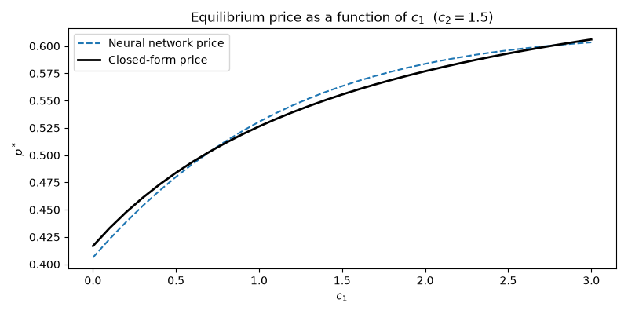
The neural network tracks the closed-form price closely. The remaining gap can be reduced by training for more iterations or using a wider network. Try it: change the number of iterations or the number of nodes in the Dense layers. Also plot \(x_1\) as a function of \(c_1\) and see how close the neural network prediction \(\hat x_1\) is to the closed form solution.
Summary
- Time-series panel data requires a strict temporal train/validation split. Using a random split with lagged features leaks the future into training and gives over-optimistic validation scores.
tanhactivations are a natural choice for regression targets that can be positive or negative and for relationships expected to be smooth and symmetric.- Standardization must always be done with training statistics; applying the same (training) transformation to the validation set is correct and does not constitute leakage.
- A neural network can solve for economic equilibria without any labelled data by minimizing the squared first-order conditions. The loss function encodes economic theory rather than prediction error.
- TensorFlow’s
GradientTapegives fine-grained control over differentiation and is essential when the loss depends on derivatives of the model’s outputs with respect to its inputs.
Review Questions
- You have monthly unemployment and inflation data from 2000 to 2023, and you want to use lags 1–3 of both variables as features. A colleague proposes using
train_test_splitwithshuffle=Trueandtest_size=0.2. Explain why this is wrong and describe the correct approach. - In the Phillips curve application, why are the validation features standardised with the training mean and standard deviation rather than the validation statistics?
- The validation MSE for the Phillips curve network is much larger than the training MSE. Does this necessarily indicate overfitting? What else could explain the gap?
- In the Cournot equilibrium network, what is the loss function and why does it not require any labelled training data?
- In the code,
inner.watch([x1, x2])is called before computing profits. What happens if you remove this line? Why is it necessary? - The network uses
softplusto convert raw outputs to quantities. Why not just use the raw outputs directly? What is the economic interpretation of the constraint this enforces?
Lecture 8: Getting data from the Eurostat API
Skills you learn in this lecture:
Learning Objectives
After this lecture you will be able to:
- Download data from Eurostat using the
eurostatPython package. - Reshape wide data (years as columns) to long data (years as rows) using
pd.melt. - Pivot a categorical variable into separate columns using
set_indexandunstack. - Merge multiple dataframes on different key combinations (country only; country + year; country + sex + year).
- Build an interactive Altair scatter plot with a year slider.
Introduction
Statistical agencies like Eurostat publish large amounts of data through APIs (Application Programming Interfaces): standardized interfaces that let programs request data directly, without any clicking. Using an API instead of downloading files by hand has three advantages: the code is reproducible (anyone can rerun it and get the same data), it scales to many variables, and it automatically picks up updates when Eurostat revises its numbers.
This lecture builds a dataset on health outcomes and their potential determinants for EU countries. We combine five sources: preventable and treatable mortality (2011–2020), GDP per capita (2011–2020), household income by quintile (2015), and three lifestyle variables — share of the population with high BMI, daily heavy smoking, and monthly binge drinking (2014 and 2019).
The data engineering is the main lesson. Each source arrives in a different shape and needs a different sequence of melt, unstack, and merge operations before the sources can be combined. Once the data is in the right shape, we build an interactive Altair chart that lets you explore how GDP per capita relates to treatable mortality across EU countries over time.
Interactive App
The app walks through the four pandas reshaping steps — wide format, melt, unstack, and rename — on a small slice of the Eurostat mortality dataset. Use the dropdown to move through each step and see how the dataframe changes shape.
Python Code Explanation
Setup
import numpy as np
import pandas as pd
import altair as alt
import eurostat
from country_codes import eurostat_dictionary
The eurostat package wraps the Eurostat REST API. Its main method is get_data_df(code), where code is the dataset identifier shown on the Eurostat data browser (e.g. hlth_cd_apr). The function returns a pandas DataFrame with one column per year and one row per combination of the remaining dimensions.
eurostat_dictionary is a simple Python dictionary mapping two-letter country codes (AT, BE, …) to full country names. We use it to replace abbreviations with readable labels.
We restrict the analysis to EU and closely associated countries:
EU_countries = [
'Belgium', 'Bulgaria', 'Czechia', 'Denmark', 'Germany', 'Estonia',
'Ireland', 'Greece', 'Spain', 'France', 'Croatia', 'Italy',
'Cyprus', 'Latvia', 'Lithuania', 'Luxembourg', 'Hungary', 'Malta',
'Netherlands', 'Austria', 'Poland', 'Portugal', 'Romania',
'Slovenia', 'Slovakia', 'Finland', 'Sweden',
'Iceland', 'Norway', 'Switzerland',
]
Mortality data
Downloading and inspecting
df = eurostat.get_data_df('hlth_cd_apr')
print(df.head(2))
freq mortalit sex icd10 unit geo\TIME_PERIOD 2011 ... 2017 2018 2019 2020 2021 2022 2023 0 A PRVT F A00-A09 NR AT 7.0 ... 10.0 8.0 6.0 13.0 15.0 9.0 15.0 1 A PRVT F A00-A09 NR BE 25.0 ... 45.0 26.0 44.0 39.0 27.0 41.0 37.0
The dataset arrives in wide format: each year is a separate column. The column geo\TIME_PERIOD holds country codes. We want to end up with one row per (country, year, sex) combination.
Rename and replace abbreviations
df.rename({'geo\\TIME_PERIOD': 'geo'}, inplace=True, axis=1)
df['country'] = df['geo'].replace(eurostat_dictionary)
.rename changes a column name; .replace changes values inside a column. The replacements are passed as a dictionary {'old':'new'}. We need to escape the backslash in the column name because Python interprets \T as an escape sequence otherwise.
Filter rows and drop redundant columns
df = df[
df.country.isin(EU_countries) &
df.sex.isin(['M', 'F']) &
df.mortalit.isin(['PRVT', 'TRT']) &
(df.unit == 'RT') &
(df.icd10 == 'TOTAL')
]
df.drop(['unit', 'icd10', 'geo', 'freq'], axis=1, inplace=True)
print(df.head(2))
mortalit sex 2011 2012 2013 2014 ... 2019 2020 2021 2022 2023 country
6650 PRVT F 95.29 96.16 93.22 93.95 ... 94.81 99.09 104.91 99.01 90.71 Austria
6651 PRVT F 101.35 99.97 100.34 95.40 ... 92.39 113.63 105.11 101.32 92.86 Belgium
We select unit = ’RT’= (rate per 100 000 population) and icd10 = ’TOTAL’= (all causes combined). The column mortalit contains two values: PRVT (preventable) and TRT (treatable).
Melt: wide to long
pd.melt turns columns into rows. We keep country, sex, and mortalit as identifier columns; the year columns (2011 to 2020) become values in a new year column.
df = pd.melt(
df,
id_vars=['country', 'sex', 'mortalit'],
value_vars=["{}".format(y) for y in range(2011, 2021)],
var_name='year',
value_name='rate',
)
df['year'] = df['year'].astype(int)
print(df.head(3))
country sex mortalit year rate 0 Austria F PRVT 2011 95.29 1 Belgium F PRVT 2011 101.35 2 Bulgaria F PRVT 2011 119.32
Unstack: split mortalit into two columns
We now have one row per (country, sex, mortalit, year) combination. We want two columns — Preventable mortality and Treatable mortality — instead of one mortalit column. unstack does this: it takes the last level of a MultiIndex and spreads it across columns.
df.set_index(['country', 'year', 'sex', 'mortalit'], inplace=True)
df = df.unstack() # pivots 'mortalit' (last index level) into columns
df.reset_index(inplace=True)
df.columns = [' '.join(col).strip() for col in df.columns.values]
df.rename({'rate PRVT': 'Preventable mortality',
'rate TRT': 'Treatable mortality'}, inplace=True, axis=1)
print(df.head(3))
country year sex Preventable mortality Treatable mortality 0 Austria 2011 F 95.29 67.41 1 Austria 2011 M 248.50 96.86 2 Austria 2012 F 96.16 69.72
After unstack, the columns are a MultiIndex of the form (rate, PRVT), (rate, TRT). The list comprehension ' '.join(col).strip() flattens each tuple into a single string (rate PRVT), which we then rename to something readable.
GDP per capita
The same pattern — download, rename, filter, melt — but simpler because there is only one variable (GDP), so no unstack is needed.
df_gdp = eurostat.get_data_df('nama_10_pc')
df_gdp.rename({'geo\\TIME_PERIOD': 'geo'}, inplace=True, axis=1)
df_gdp['country'] = df_gdp['geo'].replace(eurostat_dictionary)
df_gdp = df_gdp[
df_gdp.country.isin(EU_countries) &
(df_gdp.na_item == 'B1GQ') &
(df_gdp.unit == 'CP_EUR_HAB')
]
df_gdp.drop(['unit', 'na_item', 'geo', 'freq'], axis=1, inplace=True)
df_gdp = pd.melt(
df_gdp,
id_vars=['country'],
value_vars=["{}".format(y) for y in range(2011, 2021)],
var_name='year',
value_name='GDP per capita',
)
df_gdp['year'] = df_gdp['year'].astype(int)
print(df_gdp.head(3))
country year GDP per capita 0 Austria 2011 36970.0 1 Belgium 2011 34310.0 2 Bulgaria 2011 5640.0
We select na_item = ’B1GQ’= (gross domestic product) and unit = ’CP_EUR_HAB’= (current prices, euro per inhabitant).
df = df.merge(df_gdp, how='left', on=['country', 'year'])
Merging on both country and year ensures each row in the mortality frame gets the GDP for the matching country and year.
Run df.head() yourself. Why are there duplicate entries in the column GDP per capita?
Income quintiles
This dataset has a different structure: a quant_inc column with values QU1 to QU5 that we want to pivot into five separate columns. In case you want to check the different options, see https://ec.europa.eu/eurostat/databrowser/view/icw_res_02/default/table?lang=en
df_inc = eurostat.get_data_df('icw_res_02')
df_inc.rename({'geo\\TIME_PERIOD': 'geo'}, inplace=True, axis=1)
df_inc = df_inc[
(df_inc.indic_ewb == 'DI') &
(df_inc.statinfo == 'AVG') &
df_inc.quant_inc.isin(['QU1', 'QU2', 'QU3', 'QU4', 'QU5']) &
(df_inc.quant_expn == 'TOTAL') &
(df_inc.quant_wlth == 'TOTAL')
]
df_inc.drop(['unit', 'quant_expn', 'quant_wlth', 'indic_ewb', 'statinfo', 'freq'],
axis=1, inplace=True)
# Only year 2015 is available across countries
df_inc = pd.melt(df_inc, id_vars=['geo', 'quant_inc'],
value_vars=['2015'], var_name='year', value_name='y_')
df_inc['year'] = df_inc['year'].astype(int)
print(df_inc.head(3))
geo quant_inc year y_ 0 AT QU1 2015 16542.1 1 BE QU1 2015 15834.1 2 BG QU1 2015 1847.7
Now quant_inc needs to become five columns, one per quintile. We use the same set_index / unstack pattern as for mortality:
df_inc.drop_duplicates(subset=['geo', 'year', 'quant_inc'], inplace=True)
df_inc.set_index(['geo', 'year', 'quant_inc'], inplace=True)
df_inc = df_inc.unstack()
df_inc.reset_index(inplace=True)
df_inc.columns = [''.join(col).strip() for col in df_inc.columns.values]
df_inc['country'] = df_inc['geo'].replace(eurostat_dictionary)
df_inc.drop(['geo'], inplace=True, axis=1)
df_inc = df_inc[df_inc.country.isin(EU_countries)]
print(df_inc.head(3))
year y_QU1 y_QU2 y_QU3 y_QU4 y_QU5 country 0 2015 16542.1 27955.8 36687.8 48214.5 74519.8 Austria 1 2015 15834.1 23310.6 33248.2 44849.9 68233.2 Belgium 2 2015 1847.7 3270.1 5115.9 7451.6 14354.6 Bulgaria
Because income quintile data is only available for 2015, we merge on country alone. Every row for a given country will receive the same quintile values regardless of year; a simplification.
df = df.merge(df_inc.drop(columns='year'), how='left', on='country')
Lifestyle variables: BMI, smoking, alcohol
Three lifestyle surveys are available for two years: 2014 and 2019. Including both years lets us study whether lifestyle patterns changed over the five-year gap and allows the Altair plot to show a lifestyle dimension for both survey years.
Because we now have a year column in these dataframes, the merge with the main dataframe must be on country, sex, and year. Rows in the mortality frame for other years (2011–2013, 2015–2018, 2020) will receive NaN for the lifestyle variables.
BMI
df_bmi = eurostat.get_data_df('hlth_ehis_bm1i')
df_bmi.rename({'geo\\TIME_PERIOD': 'geo'}, inplace=True, axis=1)
df_bmi = df_bmi[
(df_bmi.bmi == 'BMI_GE30') &
(df_bmi['quant_inc'] == 'TOTAL') &
df_bmi.sex.isin(['F', 'M']) &
(df_bmi.age == 'Y15-64')
]
df_bmi.drop(['quant_inc', 'age', 'unit', 'bmi', 'freq'], axis=1, inplace=True)
# Include both 2014 and 2019
df_bmi = pd.melt(df_bmi, id_vars=['geo', 'sex'],
value_vars=['2014', '2019'],
var_name='year', value_name='high bmi')
df_bmi['year'] = df_bmi['year'].astype(int)
df_bmi['country'] = df_bmi['geo'].replace(eurostat_dictionary)
df_bmi.drop(['geo'], inplace=True, axis=1)
df_bmi = df_bmi[df_bmi.country.isin(EU_countries)]
df_bmi['high bmi'] = df_bmi['high bmi'].astype(float) / 100.0
print(df_bmi.head(3))
sex year high bmi country 0 F 2014 0.113 Austria 1 F 2014 0.129 Belgium 2 F 2014 0.116 Bulgaria
df = df.merge(df_bmi, how='left', on=['country', 'sex', 'year'])
Smoking
df_smk = eurostat.get_data_df('hlth_ehis_sk3i')
df_smk.rename({'geo\\TIME_PERIOD': 'geo'}, inplace=True, axis=1)
df_smk = df_smk[
(df_smk.age == 'Y15-64') &
(df_smk.smoking == 'SM_GE20D') &
(df_smk['quant_inc'] == 'TOTAL') &
df_smk.sex.isin(['F', 'M'])
]
df_smk.drop(['quant_inc', 'age', 'unit', 'smoking', 'freq'], axis=1, inplace=True)
df_smk = pd.melt(df_smk, id_vars=['geo', 'sex'],
value_vars=['2014', '2019'],
var_name='year', value_name='smoking')
df_smk['year'] = df_smk['year'].astype(int)
df_smk['country'] = df_smk['geo'].replace(eurostat_dictionary)
df_smk.drop(['geo'], inplace=True, axis=1)
df_smk = df_smk[df_smk.country.isin(EU_countries)]
df_smk['smoking'] = df_smk['smoking'].astype(float) / 100.0
df = df.merge(df_smk, how='left', on=['country', 'sex', 'year'])
Alcohol (binge drinking)
df_alc = eurostat.get_data_df('hlth_ehis_al3e')
df_alc.rename({'geo\\TIME_PERIOD': 'geo'}, inplace=True, axis=1)
df_alc = df_alc[
(df_alc.age == 'Y15-64') &
df_alc.sex.isin(['F', 'M']) &
(df_alc.isced11 == 'TOTAL') &
(df_alc.frequenc == 'MTH')
]
df_alc.drop(['isced11', 'age', 'unit', 'frequenc', 'freq'], axis=1, inplace=True)
df_alc = pd.melt(df_alc, id_vars=['geo', 'sex'],
value_vars=['2014', '2019'],
var_name='year', value_name='binge drinking')
df_alc['year'] = df_alc['year'].astype(int)
df_alc['country'] = df_alc['geo'].replace(eurostat_dictionary)
df_alc.drop(['geo'], inplace=True, axis=1)
df_alc = df_alc[df_alc.country.isin(EU_countries)]
df_alc['binge drinking'] = df_alc['binge drinking'].astype(float) / 100.0
df = df.merge(df_alc, how='left', on=['country', 'sex', 'year'])
Saving the combined dataset
df.to_csv('./data/health_data.csv', index=False)
print(df.shape)
print(df.columns.tolist())
(600, 14) ['country', 'year', 'sex', 'Preventable mortality', 'Treatable mortality', 'GDP per capita', 'y_QU1', 'y_QU2', 'y_QU3', 'y_QU4', 'y_QU5', 'high bmi', 'smoking', 'binge drinking']
Interactive Altair chart
Altair is a Python library for declarative statistical visualisation. You describe what you want to show (which columns map to which visual channels: x-axis, y-axis, colour, tooltip) and Altair generates the chart.
df = pd.read_csv('./data/health_data.csv')
df['log GDP'] = np.log(df['GDP per capita'])
df['log mortality'] = np.log(df['Treatable mortality'])
df['Gender'] = df['sex'].replace({'F': 'Female', 'M': 'Male'})
Binding a slider to a selection
year_slider = alt.binding_range(min=2011, max=2020, step=1, name='Year: ')
year_select = alt.selection_point(
fields=['year'], bind=year_slider, value=2014
)
alt.binding_range creates the HTML slider widget. alt.selection_point links that widget to a named selection that filters the data.
Building the chart
chart = (
alt.Chart(df)
.mark_point(filled=True, size=60)
.encode(
x=alt.X('log GDP', title='GDP per capita (log)',
scale=alt.Scale(domain=[8.5, 12])),
y=alt.Y('log mortality', title='Treatable mortality (log)',
scale=alt.Scale(domain=[3.8, 6.2])),
color=alt.Color('country', legend=None),
column=alt.Column('Gender'),
tooltip=['country', 'year', 'Treatable mortality', 'GDP per capita'],
)
.add_params(year_select)
.transform_filter(year_select)
.configure_axis(grid=False)
.configure_view(strokeWidth=0)
.interactive()
)
chart.save('./figures/gdp_mortality.html')
Each .encode(...) argument maps a data column to a visual channel. The column encoding splits the chart into two side-by-side panels (one per gender). .add_params attaches the slider and .transform_filter keeps only rows matching the selected year. .interactive() adds pan-and-zoom.
I showed an LLM the code for the imports of different variables above. Then I asked it to create a helper function to automate some of the steps that we do repeatedly. This is a productive way to use an LLM: make sure you master the steps yourself first, then ask the LLM to generalize the workflow that you created. In this way it is easy:
- to understand the code that the LLM produces (it is based on your own code that you already know) and
- to test the LLM: the outcomes should be the same as the outcomes you produced yourself with your own code.
The helper function is called get_eurostat and can be found in this github repository: eurostat_helpers.py. If you save this file in your own working directory, you can experiment with it. Two examples to use this helper function:
from eurostat_helpers import get_eurostat
# GDP per capita (simple, no extra id_vars)
df_gdp = get_eurostat('nama_10_pc', value_name='GDP per capita',
filter_dict={'unit': 'CP_EUR_HAB', 'na_item': 'B1GQ'},
years=range(2011, 2021))
# BMI by sex, two years, percentage → fraction
df_bmi = get_eurostat('hlth_ehis_bm1i', id_vars=['sex'],
value_name='high bmi',
filter_dict={'bmi': 'BMI_GE30', 'quant_inc': 'TOTAL',
'age': 'Y15-64', 'sex': ['F', 'M']},
years=[2014, 2019], divide_by=100)
Summary
- The Eurostat API delivers data in wide format (years as columns).
pd.meltconverts it to long format; this is almost always the right shape for further analysis and visualization. - When a categorical variable (like
mortalitorquant_inc) needs to become separate columns, set it as the last index level and callunstack(). Reset the index afterwards and flatten the resulting MultiIndex columns with a list comprehension. - Always merge on all columns that jointly identify a row. Merging on country alone is correct only when the other variable genuinely does not vary across time or sex. Adding year (or sex) to the merge key avoids broadcasting a single value to every row.
- Lifestyle survey data covers only two years (2014, 2019). After merging on country + sex + year, rows for other years will be
NaNfor those columns. This is fine; theNaNvalues simply signal that no survey was conducted in those years. - Altair charts are declarative: you specify the mapping from data to visual channels, and Altair handles rendering. Interactivity (sliders, zoom, tooltips) requires no JavaScript: attach a
selectionand abinding.
Review Questions
- The Eurostat dataset on mortality arrives with years as column names (
2011,2012, …). Why is this format inconvenient for analysis and plotting? What doespd.meltproduce instead? - After the
meltstep, the mortality data has amortalitcolumn with valuesPRVTandTRT. Describe, step by step, howset_index,unstack,reset_index, and the column-renaming list comprehension transform this into a dataframe with columnsPreventable mortalityandTreatable mortality. - The income quintile merge uses
on’country’= (no year). Why? What assumption does this embed about the income distribution? - The lifestyle variables are merged
on[’country’, ’sex’, ’year’]=. What happens in the merged dataframe for a country-sex-year combination where no survey was conducted (e.g. Austria, Female, 2015)? Is this a problem for the Altair chart if the slider only shows 2014 and 2019? - In the Altair code, what does
.transform_filter(year_select)do? Why is.add_params(year_select)also needed?
Lecture 9: Bayesian Statistics
Skills you learn in this lecture:
Learning Objectives
After this lecture you will be able to:
- Explain Bayes’ theorem in terms of prior, likelihood, and posterior.
- Compute a grid approximation to the posterior distribution using
numpyandscipy. - Specify a Bayesian model in
pymc, sample from the posterior, and interpret the output. - Diagnose convergence using trace plots and the \(\hat{R}\) and effective sample size (ESS) statistics.
- Use the posterior predictive distribution to assess model fit.
- Implement Bayesian missing-data imputation using masked arrays in
pymc. - Code a simple Metropolis-Hastings sampler and explain how NUTS improves on it.
- Identify cases where maximum likelihood gives a counter-intuitive estimate.
Introduction
In frequentist statistics a parameter such as a regression slope is a fixed unknown number, and we report confidence intervals that cover that number with a given probability across repeated experiments. In Bayesian statistics the parameter is itself a random variable: we represent our uncertainty about it with a probability distribution — the posterior — that combines our prior belief with the evidence in the data.
This lecture introduces Bayesian reasoning and the practical tools for applying it in Python. We start with a grid approximation to make the posterior calculation transparent, then move to pymc, which uses Markov Chain Monte Carlo (MCMC) to sample from posteriors that have no closed-form expression. We apply the tools to a regression model for health outcomes — first dropping missing observations in the conventional way, then replacing that with a Bayesian imputation that retains all the data but does not ignore the uncertainty surrounding the missing values. Two additional topics close the lecture: a from-scratch Metropolis-Hastings sampler that shows what pymc is doing under the hood, and a comparison with maximum likelihood that illustrates why priors matter most when data are scarce.
Interactive App
The app shows how the posterior for the probability of heads \(p\) is updated sequentially as more coin flips arrive. Each panel shows the previous posterior (dashed) and the new posterior after one additional flip (solid). The last panel jumps from \(n=5\) to \(n=20\) by updating with all 15 remaining flips at once. Switch the prior from uniform to the sceptical or optimistic Beta distribution to see how a prior is gradually overwhelmed by data.
Python Code Explanation
Grid approximation
We start with the simplest possible Bayesian problem: estimating the probability \(p\) that a coin lands heads. We observe 14 heads in 20 throws. Bayes’ theorem says
\[\text{Prob}(p \mid \text{data}) = \frac{P(\text{data} \mid p)\, P(p)}{P(\text{data})} \propto P(\text{data} \mid p)\, P(p).\]
The denominator \(P(\text{data})\) is just a normalising constant. The likelihood is \(P(\text{data} \mid p) = \binom{20}{14} p^{14}(1-p)^6\) and the prior is uniform: \(P(p) = 1\) for \(p \in [0,1]\).
The grid approximation evaluates the numerator on a fine grid of candidate values, then divides by the sum so the result integrates to one.
import numpy as np
import scipy as sc
import matplotlib.pyplot as plt
p_grid = np.linspace(0, 1, 100)
prior = np.ones_like(p_grid) # uniform prior
likelihood = sc.stats.binom.pmf(14, 20, p_grid)
posterior = likelihood * prior
posterior = posterior / posterior.sum() # normalise to sum to 1
plt.plot(p_grid, posterior)
plt.xlabel('$p$')
plt.ylabel('Posterior probability (grid)')
plt.title('Posterior after 14 heads in 20 throws')
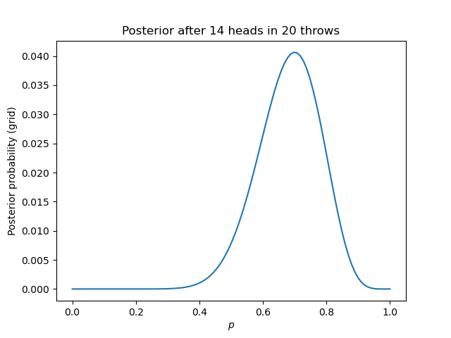
The posterior peaks near \(14/20 = 0.7\) because that value makes the observed data most likely. Notice that posterior is a vector of 100 numbers, not a continuous curve, but with a fine enough grid the approximation is excellent.
The grid approximation becomes impractical when there are many parameters: a grid with 100 points per dimension requires \(100^d\) evaluations for \(d\) parameters. This is why MCMC is needed.
PyMC: coin flipping
pymc expresses the same model in a few lines. All variable definitions go inside a with pm.Model() as ... context. Here we denote the model: coin_model.
import pymc as pm
with pm.Model() as coin_model:
p = pm.Uniform('p', 0, 1) # prior
obs = pm.Binomial('obs', n=20, p=p, observed=14) # likelihood
trace = pm.sample(2000, tune=1000)
/home/janboone/anaconda3/envs/pymc_env2/lib/python3.14/site-packages/arviz/__init__.py:39: FutureWarning:
ArviZ is undergoing a major refactor to improve flexibility and extensibility while maintaining a user-friendly interface.
Some upcoming changes may be backward incompatible.
For details and migration guidance, visit: https://python.arviz.org/en/latest/user_guide/migration_guide.html
warn(
Initializing NUTS using jitter+adapt_diag...
Multiprocess sampling (4 chains in 4 jobs)
NUTS: [p]
Step Grad Sampli…
Progre… Draws Diverg… size evals Speed Elapsed Remaini…
──────────────────────────────────────────────────────────────────────────────
━━━━━━━ 3000 0 1.501 3 10766.… 0:00:00 0:00:00
draws/s
━━━━━━━ 3000 0 1.818 3 10145.… 0:00:00 0:00:00
draws/s
━━━━━━━ 3000 0 1.460 3 9411.44 0:00:00 0:00:00
draws/s
━━━━━━━ 3000 0 1.205 3 5263.32 0:00:00 0:00:00
draws/s
Sampling 4 chains for 1_000 tune and 2_000 draw iterations (4_000 + 8_000 draws total) took 5 seconds.
Each line inside the with block adds a node to the model graph.
pm.Uniform('p', 0, 1)declares the prior for \(p\): a uniform distribution on \([0,1]\). Note that the parameter namepis mentioned twice in this line. This is important in apymcmodel.pm.Binomial('obs', n=20, p=p, observed=14)defines the likelihood. The keywordobserved=14tellspymcthat this variable is data, not a parameter to be sampled.pm.sample(2000, tune=1000)runs 4 parallel Markov chains, each with 1000 warm-up (tuning) steps and 2000 sampling steps. The tuning steps are discarded.NUTSstands for No-U-Turn Sampler; it is a version of an MCMC (or HMC) algorithm.
Trace plot
pm.plot_trace(trace)
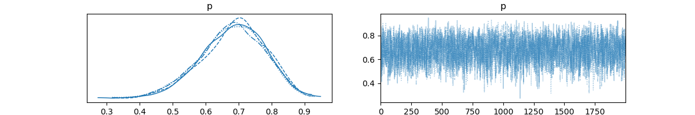
The trace plot has two panels per parameter. The left panel shows the marginal posterior (a kernel density estimate). The right panel shows the raw chain: the sequence of sampled values over iterations.
A good trace has three properties:
- Stationarity: in the right panel the chain fluctuates around a constant mean, with no visible trend.
- Mixing: in the right panel the chain moves freely across the posterior, not stuck in one region.
- Chain overlap: in the left panel all four chains explore the same region (distributions overlap).
Summary table
print(pm.summary(trace))
mean sd hdi_3% hdi_97% mcse_mean mcse_sd ess_bulk ess_tail r_hat
p 0.682 0.098 0.49 0.851 0.002 0.001 3317.0 5105.0 1.0
The summary reports the posterior mean, standard deviation, highest-density intervals (HDI), and two convergence diagnostics:
- \(\hat{R}\) (
r_hat): the ratio of between-chain variance to within-chain variance. A value close to 1.0 means the chains have converged to the same distribution. Values above 1.01 are a warning. - Effective sample size (
ess_bulk,ess_tail): MCMC samples are correlated, so 2000 raw samples may contain less information than 2000 independent draws. ESS estimates the equivalent number of independent samples. Values much lower than the number of raw samples signal poor mixing. mcse_meanmeasures the standard error of the posterior mean (expectation). It indicates how precisely the sample mean approximates the true posterior mean; a smaller value relative to the posterior standard deviation suggests higher precision.mcse_sdmeasures the standard error of the posterior standard deviation. It indicates the precision of the estimated posterior spread.
PyMC: simulated data
To check that pymc recovers the true parameter values, we first generate data from our own model and then estimate that model.
import pandas as pd
def generating_data(a1=1, a2=-1, b=3, n=100):
rng = np.random.default_rng(42)
x1 = rng.normal(0, 1, n)
x2 = rng.normal(0, 1, n)
noise = rng.normal(0, 1, n)
y = b + a1*x1 + a2*x2 + noise
return pd.DataFrame({'y': y, 'x1': x1, 'x2': x2})
df = generating_data()
We specify broad priors that are consistent with standardized data. The priors for the constant, slope1 and slope allow positive and negative values. But the prior for sigma is HalfNormal rather than Normal because a standard deviation \(\sigma > 0\). This model is called model_sim.
with pm.Model() as model_sim:
constant = pm.Normal('constant', mu=0, sigma=3)
slope1 = pm.Normal('slope1', mu=0, sigma=2)
slope2 = pm.Normal('slope2', mu=0, sigma=2)
sigma = pm.HalfNormal('sigma', sigma=1)
mu = constant + slope1*df.x1 + slope2*df.x2
obs = pm.Normal('obs', mu=mu, sigma=sigma, observed=df.y)
trace_sim = pm.sample(2000, tune=1000)
After sampling, check the trace plots and the trace summary with the same code as above but the trace is called trace_sim this time. The posterior means for constant, slope1, slope2 should be close to 3, 1, and −1 respectively. All \(\hat{R}\) values should be near 1.0.
Posterior predictive check
The posterior predictive distribution answers: given the estimated model, what values of \(y\) would we expect to observe? We compare these predictions with the actual data to assess model fit.
with model_sim:
ppc = pm.sample_posterior_predictive(trace_sim, var_names=['obs'])
# 95% credible interval for each observation
percentiles = np.percentile(
ppc.posterior_predictive['obs'], [2.5, 97.5], axis=[0, 1]
).T
fig, axes = plt.subplots(1, 2, figsize=(10, 4))
for ax, x, xlabel in zip(axes, [df.x1, df.x2], ['$x_1$', '$x_2$']):
ax.vlines(x, percentiles[:, 0], percentiles[:, 1], alpha=0.2)
ax.scatter(x, df.y, color='r', s=15)
ax.set(xlabel=xlabel, ylabel='$y$')
plt.tight_layout()
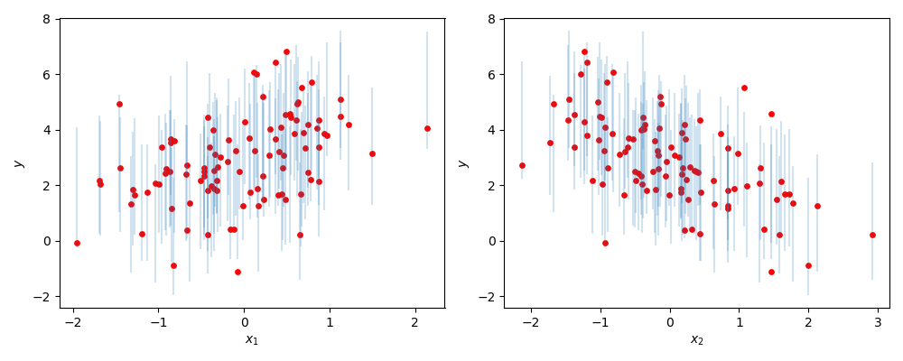
For most observations the red dot (actual value) falls inside the 95% prediction interval (vertical line). Points outside the interval are not necessarily a problem; we expect about 5% of them to fall outside by construction.
Health data: complete case analysis
We now apply the same Bayesian framework to the health dataset from Lecture 8. We model log treatable mortality as a function of log GDP per capita, income inequality, three lifestyle variables, and gender.
Setup
df = pd.read_csv('./data/health_data.csv')
df.rename({'year_x': 'year'}, inplace=True, axis=1)
income_quintiles = ['y_QU1', 'y_QU2', 'y_QU3', 'y_QU4', 'y_QU5']
df['inequality'] = (np.log(df[income_quintiles].mean(axis=1))
- np.log(df[income_quintiles]).mean(axis=1))
df.drop(income_quintiles, axis=1, inplace=True)
The inequality measure is \(\ln\bigl(\sum_i \phi_i Y_i\bigr) - \sum_i \phi_i \ln(Y_i)\), the log of the mean minus the mean of the logs (Jensen’s inequality implies this is non-negative and larger when incomes are more dispersed).
The simplest way to handle missing values is to drop all rows that contain one.
df_small = df.dropna()
def standardize(x):
return (x - x.mean()) / x.std()
log_mortality = standardize(np.log(df_small['Treatable mortality']))
gdp = standardize(np.log(df_small['GDP per capita']))
inequality = standardize(df_small['inequality'])
high_bmi = standardize(df_small['high bmi'])
smoking = standardize(df_small['smoking'])
binge_drinking = standardize(df_small['binge drinking'])
gender = (df_small['sex'] == 'F').astype(float)
Standardising before estimation keeps all coefficients on the same scale and helps the sampler mix efficiently.
Seat-belt prior
We use a tight prior \(\sigma_{\text{prior}} = 0.1\) on all slope coefficients. Because the variables are standardised, a coefficient of 1 would mean a one-standard-deviation increase in the predictor shifts mortality by one standard deviation which is a large effect. The small prior pushes coefficients toward zero unless the data strongly support a non-zero value. This is analogous to ridge regression, but stated as a prior rather than a penalty. The more data, the less the prior matters.
sigma_prior = 0.1
with pm.Model() as model_health:
constant = pm.Normal('constant', mu=0, sigma=1)
b_gdp = pm.Normal('b_gdp', mu=0, sigma=sigma_prior)
b_inequality = pm.Normal('b_inequality', mu=0, sigma=sigma_prior)
b_smoking = pm.Normal('b_smoking', mu=0, sigma=sigma_prior)
b_high_bmi = pm.Normal('b_high_bmi', mu=0, sigma=sigma_prior)
b_binge_drinking = pm.Normal('b_binge_drinking', mu=0, sigma=sigma_prior)
b_female = pm.Normal('b_female', mu=0, sigma=sigma_prior)
b_female_gdp = pm.Normal('b_female_gdp', mu=0, sigma=sigma_prior)
sigma = pm.HalfNormal('sigma', sigma=1)
mu = (constant
+ b_gdp * gdp
+ b_inequality * inequality
+ b_smoking * smoking
+ b_high_bmi * high_bmi
+ b_binge_drinking * binge_drinking
+ b_female * gender
+ b_female_gdp * gdp * gender)
mortality = pm.Normal('mortality', mu=mu, sigma=sigma, observed=log_mortality)
trace_health = pm.sample(2000, tune=1000)
with model_health:
ppc_health = pm.sample_posterior_predictive(trace_health, var_names=['mortality'])
The interaction b_female_gdp * gdp * gender allows the slope on GDP to differ between men and women. Check the summary: all \(\hat{R}\) values should be close to 1.0, and the ESS should be in the hundreds or thousands.
variables_health = ['b_female', 'b_gdp', 'b_female_gdp', 'b_inequality',
'b_smoking', 'b_high_bmi', 'b_binge_drinking']
print(pm.summary(trace_health.posterior, variables_health))
mean sd hdi_3% hdi_97% mcse_mean mcse_sd ess_bulk ess_tail r_hat
b_female -0.135 0.087 -0.295 0.030 0.001 0.001 8179.0 6161.0 1.0
b_gdp -0.509 0.065 -0.629 -0.384 0.001 0.001 7785.0 6484.0 1.0
b_female_gdp -0.058 0.070 -0.193 0.072 0.001 0.001 9138.0 6205.0 1.0
b_inequality 0.141 0.050 0.050 0.238 0.000 0.001 11830.0 6383.0 1.0
b_smoking 0.137 0.057 0.030 0.240 0.001 0.001 9261.0 6282.0 1.0
b_high_bmi 0.079 0.049 -0.013 0.169 0.000 0.001 11589.0 5943.0 1.0
b_binge_drinking 0.248 0.057 0.141 0.354 0.001 0.001 10584.0 6103.0 1.0
Also check the trace plot for the three features that we discussed above:
pm.plot_trace(trace_health,variables_health)
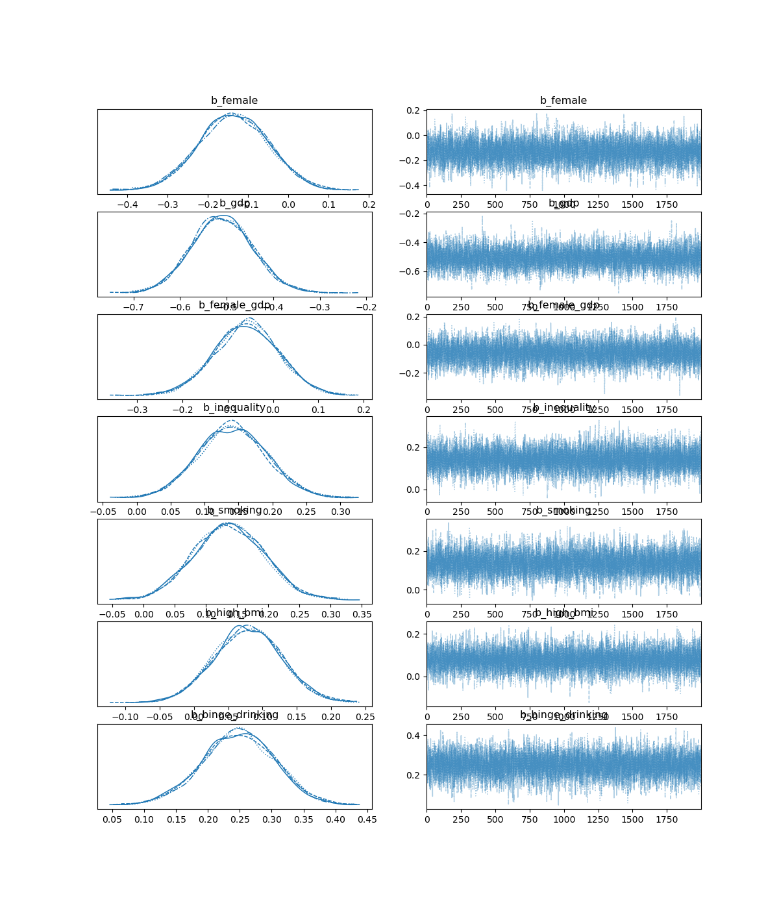
Health data: missing data imputation
Dropping all rows with any missing value (complete-case analysis) discards information: an observation with a missing lifestyle variable still carries useful information about the relationship between GDP and mortality. Imputing a value for the missing observation is also problematic: it suggests to the algorithm that we are equally sure about an observed value as we are about an imputed value. This is not correct, there is (a lot of) uncertainty about the imputed value. The estimation technique should take this into account.
A better approach is to model the missing values explicitly. In pymc, a covariate with missing values is treated as a latent variable with its own prior. We tell pymc which entries are missing using a NumPy masked array. pymc samples the missing values from the posterior jointly with all other parameters.
For more information on masked numpy arrays: see https://numpy.org/doc/stable/reference/maskedarray.html. For here it should be sufficient to consider the following example.
x = np.ma.array([1, 2, np.nan], mask=[0, 0, 1])
print("x in compressed/readable format: {}".format(x.compressed()))
print("x in raw format: ")
print(x)
print(x.mask)
x in compressed/readable format: [1. 2.] x in raw format: [1.0 2.0 --] [False False True]
The mask ([False, False, True]) in the example above, indicates which values are missing (True) and which values are there (False). This additional information allows pymc to figure out that there are missing values in the data which need to be treated differently (i.e. sampled from a distribution).
def standardize_ma(x):
x_ma = np.ma.masked_invalid(x)
return (x_ma - x_ma.mean()) / x_ma.std()
df_full = pd.read_csv('./data/health_data.csv')
df_full.rename({'year_x': 'year'}, inplace=True, axis=1)
income_quintiles = ['y_QU1', 'y_QU2', 'y_QU3', 'y_QU4', 'y_QU5']
df_full['inequality'] = (np.log(df_full[income_quintiles].mean(axis=1))
- np.log(df_full[income_quintiles]).mean(axis=1))
df_full.drop(income_quintiles, axis=1, inplace=True)
df_full.dropna(subset=['Treatable mortality'], inplace=True)
log_mortality = standardize(np.log(df_full['Treatable mortality']))
gender = (df_full['sex'] == 'F').astype(float)
gdp_ma = standardize_ma(np.log(df_full['GDP per capita']))
inequality_ma = standardize_ma(df_full['inequality'])
high_bmi_ma = standardize_ma(df_full['high bmi'])
smoking_ma = standardize_ma(df_full['smoking'])
binge_ma = standardize_ma(df_full['binge drinking'])
A masked array marks the missing entries as invalid. When passed to pm.Normal(..., observed=gdp_ma), pymc automatically identifies the masked positions and samples values for them from the specified distribution. Since all covariates are based on summation and standardized, \(\mathcal{N}(0, 1)\) is a reasonable prior for a missing value.
with pm.Model() as model_missing:
constant = pm.Normal('constant', mu=0, sigma=1)
b_gdp = pm.Normal('b_gdp', mu=0, sigma=sigma_prior)
b_inequality = pm.Normal('b_inequality', mu=0, sigma=sigma_prior)
b_smoking = pm.Normal('b_smoking', mu=0, sigma=sigma_prior)
b_high_bmi = pm.Normal('b_high_bmi', mu=0, sigma=sigma_prior)
b_binge_drinking = pm.Normal('b_binge_drinking', mu=0, sigma=sigma_prior)
b_female = pm.Normal('b_female', mu=0, sigma=sigma_prior)
b_female_gdp = pm.Normal('b_female_gdp', mu=0, sigma=sigma_prior)
sigma = pm.HalfNormal('sigma', sigma=1)
# Missing covariates are latent variables with N(0,1) priors
Gdp = pm.Normal('Gdp', mu=0, sigma=1, observed=gdp_ma)
Inequality = pm.Normal('Inequality', mu=0, sigma=1, observed=inequality_ma)
Smoking = pm.Normal('Smoking', mu=0, sigma=1, observed=smoking_ma)
High_bmi = pm.Normal('High_bmi', mu=0, sigma=1, observed=high_bmi_ma)
Binge = pm.Normal('Binge', mu=0, sigma=1, observed=binge_ma)
mu = (constant
+ b_gdp * Gdp
+ b_inequality * Inequality
+ b_smoking * Smoking
+ b_high_bmi * High_bmi
+ b_binge_drinking * Binge
+ b_female * gender
+ b_female_gdp * Gdp * gender)
mortality = pm.Normal('mortality', mu=mu, sigma=sigma, observed=log_mortality)
trace_missing = pm.sample()
Notice that in the trace output, pymc automatically adds parameters like Binge_unobserved: the sampled values for the missing binge observations. For observed entries, the “sampled” value is simply the data value; for missing entries it is drawn from the posterior.
Comparing pm.summary(trace_health) with pm.summary(trace_missing) shows whether the imputation changes the conclusions. Coefficients should be similar but the missing-data model typically has narrower credible intervals because it uses more observations.
variables_health = ['b_female', 'b_gdp', 'b_female_gdp', 'b_inequality',
'b_smoking', 'b_high_bmi', 'b_binge_drinking']
print(pm.summary(trace_missing.posterior, variables_health))
mean sd hdi_3% hdi_97% mcse_mean mcse_sd ess_bulk ess_tail r_hat
b_female -0.598 0.040 -0.671 -0.523 0.001 0.001 2916.0 3020.0 1.0
b_gdp -0.791 0.029 -0.843 -0.735 0.001 0.000 3230.0 2920.0 1.0
b_female_gdp 0.213 0.036 0.143 0.278 0.001 0.001 4530.0 3053.0 1.0
b_inequality 0.149 0.022 0.105 0.187 0.000 0.000 5328.0 3162.0 1.0
b_smoking 0.010 0.042 -0.066 0.091 0.001 0.001 1197.0 1689.0 1.0
b_high_bmi 0.061 0.041 -0.018 0.134 0.001 0.001 1126.0 2254.0 1.0
b_binge_drinking 0.127 0.042 0.043 0.201 0.001 0.001 940.0 1758.0 1.0
Also check the trace plot for the three features that we discussed above:
pm.plot_trace(trace_missing,variables_health)
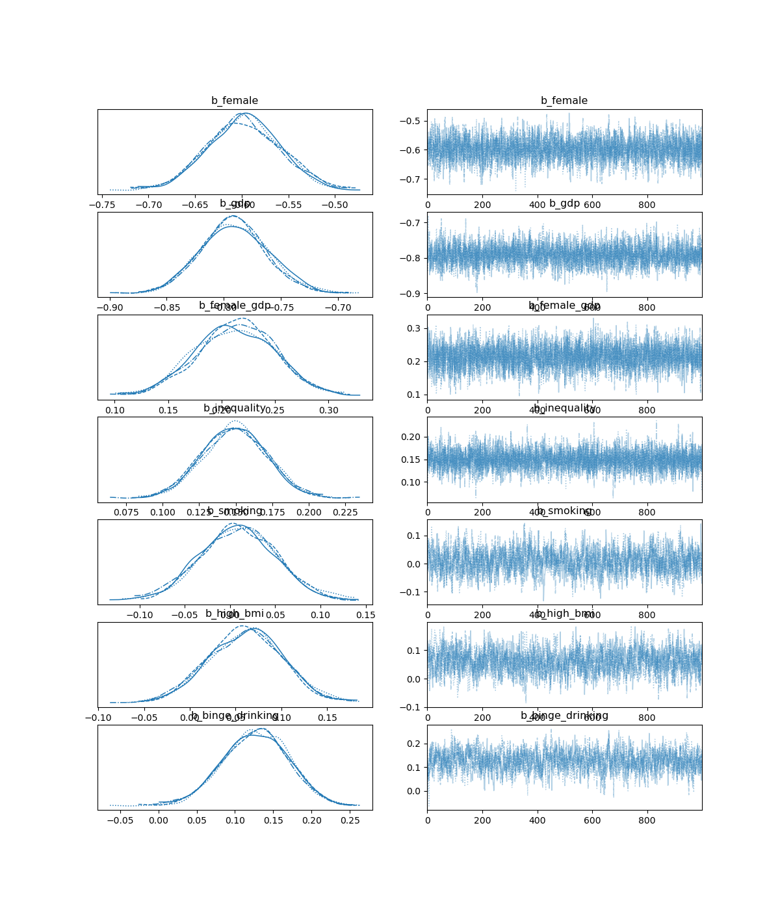
To see how the missing observations play out in pymc consider the variable binge. The variable binge_ma itself has 600 observations. The variable representing the missing observations, Binge has shape (4, 1000, 600): 4 chains and 1000 samples from the sampling algorithm and then the 600 observations. The first observation of binge_ma is missing and hence Binge has different values in its posterior (first chain, first ten samples).
print(binge_ma.shape)
print(trace_missing.posterior.Binge.shape)
print(binge_ma[0])
print(trace_missing.posterior.Binge[0,:10,0].values)
(600,) (4, 1000, 600) -- [ 0.70621589 -0.33497234 0.63095383 -0.56732448 -1.16922842 -1.59237948 -1.29697474 -0.81873592 -0.04275067 -0.48773273]
We look for an index where do have an observation:
print(np.where(binge_ma.mask==False))
(array([ 6, 7, 16, 17, 26, 27, 36, 37, 46, 47, 56, 57, 66,
67, 76, 77, 86, 87, 96, 97, 106, 107, 116, 117, 126, 127,
136, 137, 146, 147, 156, 157, 166, 167, 196, 197, 206, 207, 216,
217, 226, 227, 236, 237, 246, 247, 256, 257, 266, 267, 276, 277,
286, 287, 296, 297, 306, 307, 316, 317, 326, 327, 336, 337, 346,
347, 356, 357, 366, 367, 376, 377, 386, 387, 396, 397, 416, 417,
426, 427, 436, 437, 446, 447, 456, 457, 466, 467, 476, 477, 486,
487, 496, 497, 506, 507, 516, 517, 526, 527, 536, 537, 546, 547,
556, 557, 566, 567, 576, 577]),)
At index 16, binge_ma has a value and hence posterior trace at this index contains only one value: the observed one.
print(binge_ma[16])
print(trace_missing.posterior.Binge[0,:10,16].values)
-0.6199810886778987 [-0.61998109 -0.61998109 -0.61998109 -0.61998109 -0.61998109 -0.61998109 -0.61998109 -0.61998109 -0.61998109 -0.61998109]
MCMC algorithm
For a long time many people realized that Bayesian statistics is a better way to estimate parameters and show the uncertainty surrounding them than frequentist statistics. The problem was that computing posterior distributions (especially in high dimensions) took far too long to be practical. This has changed in the past twenty years with more computer power and better algorithms to approximate the posterior. In terms of Bayes’ theorem \(p(\theta | data) = p(\theta, data)/p(data)\) the problem is the denominator \(p(data)\). Calculating the denominator requires integration over all parameters in the vector \(\theta\). In a model with, say, 10 parameters this becomes too costly in terms computation. The solution that Bayesian libraries like pymc and stan use, is: do not calculate \(p(data)\).
Instead, we use a four step algorithm to approximate the posterior distribution. Here we illustrate how these four steps can approximate any distribution by just evaluating \(p(\theta,data)\) and trying to calculate \(p(data)\). pymc samples from the posterior using the NUTS (No-U-Turn Sampler) algorithm. To understand what NUTS is doing, we first code the simpler Metropolis-Hastings algorithm.
Metropolis-Hastings in four steps
We are trying to approximate a distribution/density function \(f(p)\) and we start at initial point \(p_0\): $ p\text{current} = p_0$. Then at each iteration of the algorithm:
- Propose a new candidate value by adding a small random perturbation to the current value: \(p' = p_{\text{current}} + \varepsilon\), where \(\varepsilon \sim \mathcal{N}(0, \delta^2)\) for some small step size \(\delta > 0\).
- Compute the acceptance ratio \(\alpha = \frac{f(p')}{f(p_{\text{current}})}\), where \(f\) is the (un-normalised) target density.
- Accept or reject: draw \(u \sim \text{Uniform}(0, 1)\). If \(u < \alpha\), move to \(p'\); otherwise stay at \(p_{\text{current}}\). In words, we accept \(p'\) with probability \(\alpha\).
- Record the current value (whether moved or not).
The important step is 2. In our notation above, step 2 only needs \(p(\theta,data)\); for this step we do not need to evaluate \(p(data)\).
After many iterations, the recorded values form an approximate sample from the target distribution. In the example below we want to approximate the beta distribution with parameters 2, 5.
from scipy.stats import beta as beta_dist
def log_target(p):
if p <= 0 or p >= 1:
return -np.inf
return beta_dist.logpdf(p, 2, 5) # target: Beta(2, 5)
def metropolis_hastings(log_target, n_samples=20_000, step_size=0.15, start=0.5):
samples = np.empty(n_samples)
current = start
n_accepted = 0
for i in range(n_samples):
proposal = current + np.random.normal(0, step_size)
log_alpha = log_target(proposal) - log_target(current)
if np.log(np.random.uniform()) < log_alpha:
current = proposal
n_accepted += 1
samples[i] = current
print(f"Acceptance rate: {n_accepted / n_samples:.1%}")
return samples
samples = metropolis_hastings(log_target)
Acceptance rate: 72.6%
We compare the sampled distribution with the true Beta(2, 5) density.
p_grid = np.linspace(0.001, 0.999, 300)
fig, axes = plt.subplots(1, 2, figsize=(11, 4))
axes[0].plot(samples[:500], alpha=0.6)
axes[0].set(xlabel='Iteration', ylabel='$p$', title='Trace (first 500 steps)')
axes[1].hist(samples, bins=60, density=True, alpha=0.5, label='MCMC samples')
axes[1].plot(p_grid, beta_dist.pdf(p_grid, 2, 5), 'r-', lw=2, label='True Beta(2, 5)')
axes[1].set(xlabel='$p$', ylabel='Density', title='Sampled vs. true distribution')
axes[1].legend()
plt.tight_layout()
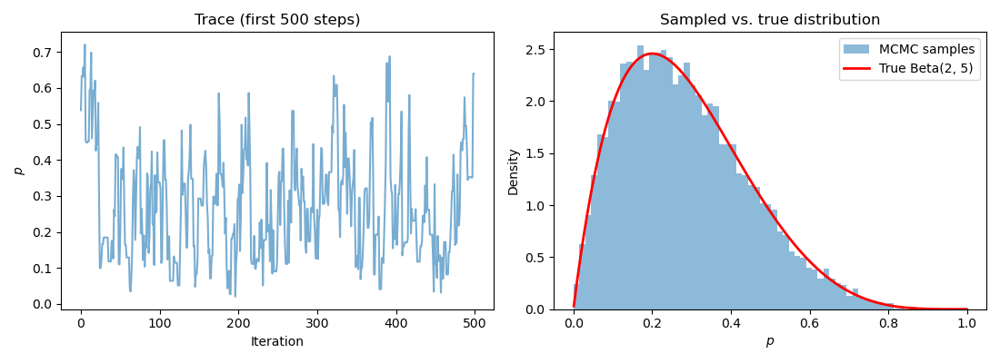
The left panel is a trace plot: we plot the values of \(p\) that we draw one after the other. With enough samples the histogram in the right panel closely matches the red curve.
How NUTS improves on Metropolis-Hastings
The basic Metropolis-Hastings algorithm has two weaknesses:
- Proposal tuning: if
step_sizeis too small, the chain moves slowly and the acceptance rate is near 100% but autocorrelation is high; if it is too large, most proposals are rejected (as outliers have very low density) and the chain barely moves. NUTS uses gradient information to set the step size automatically. - Random walk: the Gaussian proposal causes the chain to wander rather than move purposefully toward unexplored regions. NUTS simulates Hamiltonian dynamics: the chain “slides” along the posterior surface like a ball on a frictionless landscape, turning around just before it would double back (the “no-U-turn” criterion). This gives much better mixing for the same number of likelihood evaluations.
pymc exposes the tuning diagnostics: the target acceptance rate defaults to 0.8 and the step size is adapted automatically during the warm-up phase.
Maximum likelihood and Bayes
Maximum likelihood chooses the parameter value that maximizes the probability of the observed data. In most econometric applications this works well. But in small samples it can produce estimates that violate common sense.
The die example
You throw a six-sided die once and observe a 6. Consider two models:
- Model A: the die is fair (\(p_6 = 1/6\)).
- Model B: all faces show 6, so \(p_6 = 1\).
The likelihood of Model B given the data is \(1\); the likelihood of Model A is \(1/6\). Maximum likelihood therefore selects Model B: after a single observation of 6, MLE concludes that the die shows only sixes.
This conclusion is absurd — a single observation of 6 should not convince us that the die is rigged. Also you may know (prior knowledge) that a die with 6 on all sides is rather rare in the real world; have you ever seen one?
Can you formalize this example with probabilities that the die shows 1,2,…,6: \(p_1,p_2,...,p_6 \ge 0\) and \(p_1 + p_2 + ... + p_6 = 1\). Write down the log likelihood when observing 6 once with one throw of the die. Maximize over \(p_1,...,p_6\) and finding that the ML estimator is \(p_6 = 1\)
The problem is that MLE treats the likelihood as if it were a probability distribution over models, but it is not: \(P(\text{data} \mid \text{model})\) is a probability in data space, not in model space (we condition on “model” or model parameters). Two different likelihoods cannot be compared without a prior.
p_grid = np.array([1/6, 1.0])
likelihood = np.array([1/6, 1.0])
labels = ['Fair die (A)', 'All-sixes die (B)']
print("Likelihoods:")
for label, l in zip(labels, likelihood):
print(f" {label}: {l:.4f}")
print(f"\nMLE selects: {labels[likelihood.argmax()]}")
# Prior: 99 % chance the die is fair, 1 % chance it is rigged
prior = np.array([0.99, 0.01])
unnorm = likelihood * prior
posterior = unnorm / unnorm.sum()
print("Posterior:")
for label, post in zip(labels, posterior):
print(f" {label}: {post:.1%}")
Likelihoods: Fair die (A): 0.1667 All-sixes die (B): 1.0000 MLE selects: All-sixes die (B) Posterior: Fair die (A): 94.3% All-sixes die (B): 5.7%
With a prior that reflects the rarity of rigged dice, the posterior still strongly favours the fair die after observing a 6. Only after many consecutive 6s would the data overwhelm the prior.
Formalizing the Die Example
To see how maximizing the log likelihood leads to this answer, consider the following steps:
The Parameter Space
The parameter vector is \(\boldsymbol{p} = (p_1, p_2, \dots, p_6)\) with: \[p_k \geq 0 \quad \forall k, \qquad \sum_{k=1}^{6} p_k = 1\]
The Likelihood
We throw the die once and observe a 6. The probability of this outcome is simply \(p_6\), so the likelihood function is: \[L(p_1, \dots, p_6) = p_6\]
The log-likelihood is: \[\ell(p_1, \dots, p_6) = \log p_6\]
Maximization
We maximize \(\ell = \log p_6\) subject to the constraints. Since \(\log(\cdot)\) is strictly increasing, this is equivalent to maximizing \(p_6\) itself subject to: \[p_k \geq 0, \qquad \sum_{k=1}^{6} p_k = 1\]
From the constraint: \(p_6 = 1 - \sum_{k=1}^{5} p_k\). Since \(p_k \geq 0\), we have \(p_6 \leq 1\), with equality when: \[p_1 = p_2 = p_3 = p_4 = p_5 = 0\]
The MLE
\[\boxed{\hat{p}_6^{\,\text{MLE}} = 1, \qquad \hat{p}_k^{\,\text{MLE}} = 0 \text{ for } k \neq 6}\]
The log-likelihood at the maximum is \(\ell = \log(1) = 0\), which is indeed its global maximum (since \(\log p_6 \leq 0\) for all \(p_6 \in (0,1]\)).
Why This Is Absurd
After a single observation, MLE assigns probability zero to all five faces that were not observed. This is a pure over-fitting artifact: MLE has no mechanism to incorporate the prior knowledge that real dice are (almost certainly) fair, and it extrapolates wildly from minimal data. This is precisely where Bayesian inference, through a prior on \(\boldsymbol{p}\), restores common sense.
Summary
- Bayesian statistics represents uncertainty about parameters as probability distributions. The posterior combines prior belief with the likelihood of the observed data via Bayes’ theorem.
- The grid approximation evaluates the un-normalised posterior on a fine grid and re-normalises. It is exact up to discretisation error but does not scale beyond a handful of parameters.
pymcuses MCMC to sample from high-dimensional posteriors. The NUTS sampler adapts its step size automatically and uses gradient information to sample efficiently from the posterior distribution.- Convergence is assessed from trace plots and summary (\(\hat{R} \approx 1.0\), good chain mixing and overlap) and from effective sample size (ESS should be in the hundreds or thousands).
- The posterior predictive distribution generates new data under the fitted model. Plotting 95% prediction intervals against the observed data reveals whether the model fits well.
- Complete-case analysis (
dropna) is simple but discards observations that have missing values in any variable.pymccan instead model missing covariates as latent variables, improving efficiency and removing the potential bias introduced by discarding data. - Metropolis-Hastings proposes random perturbations and accepts or rejects based on the ratio of target densities. NUTS replaces random proposals with gradient-guided Hamiltonian dynamics, giving better mixing for the same number of posterior evaluations.
- Maximum likelihood can give counter-intuitive estimates in small samples because it does not account for the prior plausibility of parameter values. A Bayesian prior regularizes the estimate towards sensible values.
Review Questions
- In Bayes’ theorem, \(\text{Prob}(p \mid \text{data}) \propto P(\text{data} \mid p)\, P(p)\). What is the role of the normalising constant \(P(\text{data})\)? Why is it safe to ignore it when comparing posteriors for different values of \(p\)?
- The grid approximation computes
posterior = likelihood * prior / posterior.sum(). Why does dividing byposterior.sum()(rather than integrating) give a valid approximation? In what sense does it break down when the number of parameters grows? - In the
pymccoin model, what would happen if you replacedpm.Uniform('p', 0, 1)withpm.Beta('p', 2, 5)? Would the posterior change? How? - A trace plot shows one chain that is stuck near \(p = 0.3\) while the other three chains explore a wider range. What does \(\hat{R}\) measure in this situation, and why would it be elevated? What would you check or change?
- Why does complete-case analysis potentially introduce bias, not just a loss of precision? Under what conditions is it unbiased?
- In the missing-data model,
pm.Normal('Gdp', 0, 1, observed=gdp_ma)is added. For an observed (non-missing) row, what does this line contribute to the model? For a missing row, what does it contribute? - In the Metropolis-Hastings algorithm, what is the effect of making
step_sizevery small? Very large? How does NUTS avoid the need to tune this parameter? - Suppose you observe 3 heads in 3 coin flips. (a) What is the MLE for \(p\)? (b) What is the posterior mean under a uniform prior? (c) Under a
Beta(2, 2)prior? Which estimate is most sensible and why?
Lecture 10: Bayesian informed policy making
Learning Objectives
After this lecture you will be able to:
- Explain Jensen’s inequality and illustrate why replacing an uncertain parameter with its expected value in a non-linear objective can lead to a sub-optimal decision.
- Generate panel data with fixed effects in Python.
- Specify hierarchical (partially pooled) fixed effects in a
pymcmodel using coordinates and thedimsargument. - Use posterior draws of elasticities to obtain a distribution of policy outcomes.
- Evaluate a social planner’s welfare function under parameter uncertainty and report the distribution of the optimal policy.
Introduction
In the previous lecture we estimated Bayesian models and inspected the posterior. The payoff of obtaining a full posterior — rather than a single point estimate — becomes clearest when we have to make a decision.
The first application (interactive app) strips the decision problem down to its essentials: a test for rogue vampires with imperfect accuracy. The parameters that describe the test’s accuracy are uncertain. We compare the frequentist approach (plug in point estimates) with the Bayesian approach (treat the parameters as distributions) and show that the two approaches can recommend different decisions because the objective function is a non-linear function of the error probabilities.
The second application is an economic policy question. The social housing authority wants to impose a rent cap: lower rents benefit tenants, but reduce the supply of social housing. The supply elasticity — how much supply falls for each euro reduction in rent — is unknown and must be estimated from panel data. We generate the data, estimate the supply model with postal code and year fixed effects in pymc, and then evaluate the distribution of welfare under different cap levels. Because the welfare function is non-linear in housing supply, expected welfare at the average elasticity differs from average welfare over the posterior (Jensen’s inequality).
Interactive App
The app shows the vampire incarceration decision problem. Sliders control the Type I and Type II error probabilities (\(p_I\), \(p_{II}\)), the damages (\(D_I\), \(D_{II}\)), the prior probability that a vampire is rogue (\(\pi\)), and the concentration \(\kappa\) of the Beta posteriors.
Under the frequentist approach, \(p_I\) and \(p_{II}\) are fixed numbers: the expected damage from incarcerating is a single value. Under the Bayesian approach, \(p_I\) and \(p_{II}\) are drawn from Beta distributions; the expected damage is a distribution. The callout reports whether the two approaches agree on the decision to incarcerate. Decrease \(\kappa\) to increase parameter uncertainty and amplify the Jensen gap between the Bayesian expected damage and the frequentist damage estimate.
Python Code Explanation
Data generation: social housing supply
We simulate a panel data set of social housing supply across 10 postal codes and 6 years (2018–2023). The key variables are:
- Rent \(P_{it}\): the regulated rent in postal code \(i\) in year \(t\) (exogenous — set by housing policy rather than supply and demand).
- Interest rate \(r_t\): the mortgage rate in year \(t\) — a supply shifter, since higher rates make new construction more expensive.
- Supply \(Q_{it}\): the number of social housing units available.
The supply equation is
\[Q_{it} = \alpha + \beta_s P_{it} + \gamma_s r_t + \delta_i + \eta_t + \varepsilon_{it},\]
where \(\delta_i\) is a postal code fixed effect and \(\eta_t\) is a year fixed effect. We want to recover \(\beta_s\), the supply price elasticity.
import numpy as np
import pandas as pd
import matplotlib.pyplot as plt
from itertools import product
rng = np.random.default_rng(42)
n_pc, n_years = 10, 6
years_list = list(range(2018, 2018 + n_years))
# True supply parameters
alpha_true = 100.0
beta_s_true = 0.5
gamma_s_true = -800.0
sigma_true = 12.0
# Unknown fixed effects
pc_fe_true = rng.normal(0, 25, n_pc)
year_fe_true = rng.normal(0, 10, n_years)
records = []
for pc_idx, yr_idx in product(range(n_pc), range(n_years)):
rent = 480 + 20 * pc_idx + 8 * yr_idx + rng.normal(0, 15)
r = 0.025 + 0.003 * yr_idx + rng.normal(0, 0.002)
supply = (alpha_true
+ beta_s_true * rent
+ gamma_s_true * r
+ pc_fe_true[pc_idx]
+ year_fe_true[yr_idx]
+ rng.normal(0, sigma_true))
records.append({'postal_code': pc_idx, 'year': years_list[yr_idx],
'rent': round(rent, 1), 'interest_rate': round(r, 4),
'supply': round(supply, 1)})
df = pd.DataFrame(records)
print(df.head(8))
print("\nMean rent: {:.0f} €".format(df['rent'].mean()))
print("Mean supply: {:.0f} units".format(df['supply'].mean()))
postal_code year rent interest_rate supply 0 0 2018 485.5 0.0231 351.3 1 0 2019 487.3 0.0276 328.7 2 0 2020 514.3 0.0307 335.8 3 0 2021 498.7 0.0351 344.6 4 0 2022 518.2 0.0379 366.8 5 0 2023 513.9 0.0390 315.0 6 1 2018 509.2 0.0273 314.2 7 1 2019 495.4 0.0264 316.2 Mean rent: 589 € Mean supply: 365 units
Rents average 589 euros. The scatter plot confirms the positive relationship between rent and supply: higher regulated rent makes social housing more profitable for providers.
fig, axes = plt.subplots(1, 2, figsize=(11, 4))
for pc in df['postal_code'].unique():
sub = df[df['postal_code'] == pc].sort_values('year')
axes[0].plot(sub['year'], sub['rent'], alpha=0.6)
axes[1].scatter(sub['rent'], sub['supply'], alpha=0.5, s=20)
axes[0].set(xlabel='Year', ylabel='Rent (€)', title='Regulated rent by postal code')
axes[1].set(xlabel='Rent (€)', ylabel='Supply (units)',
title='Rent–supply relationship across postal codes')
fig.tight_layout()
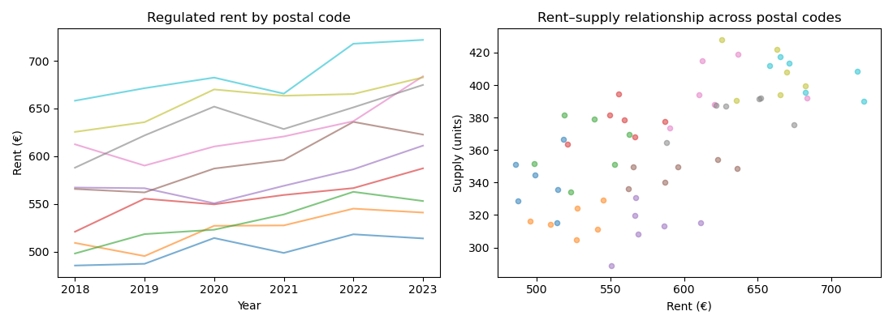
PyMC estimation with fixed effects
We estimate the supply equation with pymc. Postal code and year effects are modelled as partially pooled random effects: each effect is drawn from a common Normal distribution whose variance is itself estimated. Partial pooling shrinks effects towards the group mean, reducing over-fitting compared with estimating each effect freely (no pooling).
The coords dictionary gives each dimension a list of levels. The dims argument in pm.Normal tells pymc that pc_fe has one element per postal code and year_fe has one per year, so the model output is labelled automatically.
import pymc as pm
import arviz as az
df['pc_idx'] = df['postal_code']
df['year_idx'] = df['year'] - years_list[0]
coords = {
'postal_code': list(range(n_pc)),
'year': years_list,
}
with pm.Model(coords=coords) as supply_model:
# Main supply parameters
alpha = pm.Normal('alpha', mu=100, sigma=100)
beta_s = pm.Normal('beta_s', mu=0.5, sigma=1.0)
gamma_s = pm.Normal('gamma_s', mu=0, sigma=500)
sigma = pm.HalfNormal('sigma', sigma=20)
# Hierarchical fixed effects
sigma_pc = pm.HalfNormal('sigma_pc', sigma=30)
sigma_year = pm.HalfNormal('sigma_year', sigma=15)
pc_fe = pm.Normal('pc_fe', mu=0, sigma=sigma_pc, dims='postal_code')
year_fe = pm.Normal('year_fe', mu=0, sigma=sigma_year, dims='year')
# Linear predictor
mu = (alpha
+ beta_s * df['rent'].values
+ gamma_s * df['interest_rate'].values
+ pc_fe[df['pc_idx'].values]
+ year_fe[df['year_idx'].values])
pm.Normal('Q_obs', mu=mu, sigma=sigma, observed=df['supply'].values)
trace = pm.sample(2000, tune=1000, target_accept=0.9, random_seed=42)
print(az.summary(trace, var_names=['alpha', 'beta_s', 'gamma_s', 'sigma']))
Initializing NUTS using jitter+adapt_diag...
Multiprocess sampling (4 chains in 4 jobs)
NUTS: [alpha, beta_s, gamma_s, sigma, sigma_pc, sigma_year, pc_fe, year_fe]
/home/janboone/anaconda3/envs/pymc_env2/lib/python3.14/site-packages/arviz/__init__.py:39: FutureWarning:
ArviZ is undergoing a major refactor to improve flexibility and extensibility while maintaining a user-friendly interface.
Some upcoming changes may be backward incompatible.
For details and migration guidance, visit: https://python.arviz.org/en/latest/user_guide/migration_guide.html
warn(
/home/janboone/anaconda3/envs/pymc_env2/lib/python3.14/site-packages/pymc/step_methods/hmc/quadpotential.py:316: RuntimeWarning: overflow encountered in dot
return 0.5 * np.dot(x, v_out)
Step Grad Sampli…
Progre… Draws Diverg… size evals Speed Elapsed Remaini…
──────────────────────────────────────────────────────────────────────────────
━━━━━━━ 3000 0 0.023 255 224.50 0:00:13 0:00:00
draws/s
━━━━━━━ 3000 0 0.029 191 236.49 0:00:12 0:00:00
draws/s
━━━━━━━ 3000 0 0.027 255 229.09 0:00:13 0:00:00
draws/s
━━━━━━━ 3000 0 0.037 255 229.45 0:00:13 0:00:00
draws/s
Sampling 4 chains for 1_000 tune and 2_000 draw iterations (4_000 + 8_000 draws total) took 18 seconds.
mean sd hdi_3% hdi_97% mcse_mean mcse_sd ess_bulk ess_tail r_hat
alpha 132.839 50.827 37.145 226.398 1.124 0.762 2058.0 2507.0 1.0
beta_s 0.412 0.085 0.256 0.574 0.002 0.001 2159.0 2614.0 1.0
gamma_s -337.239 431.729 -1126.731 488.015 6.759 5.023 4082.0 4374.0 1.0
sigma 11.923 1.330 9.493 14.384 0.021 0.017 3962.0 4626.0 1.0
The posterior for beta_s is centred on the true value of 0.5. All \(\hat{R}\) statistics are 1.0 and effective sample sizes are in the thousands, indicating good convergence. You can also check the three convergence criteria in the trace plot.
az.plot_trace(trace, var_names=['beta_s', 'gamma_s', 'sigma'])
plt.tight_layout()
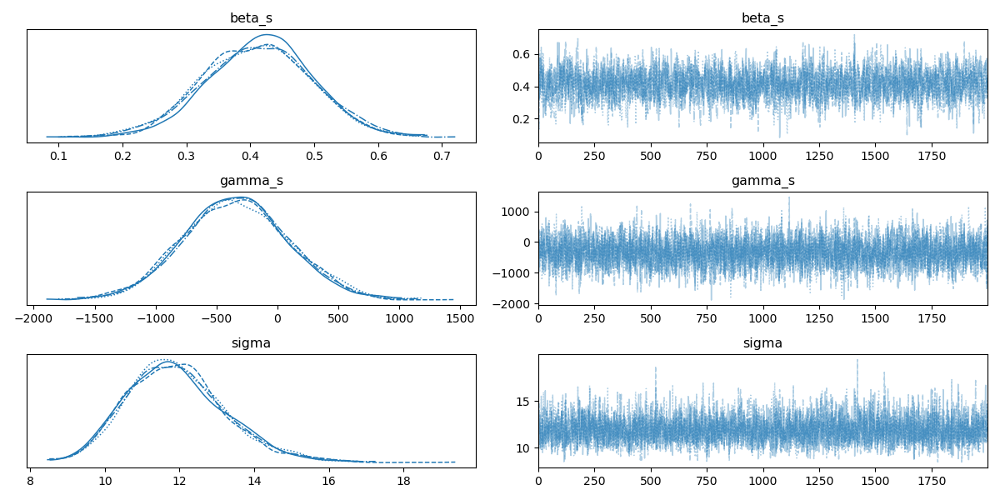
We can also look at the year fixed effects with the following code:
print(az.summary(trace, var_names=['year_fe']))
mean sd hdi_3% hdi_97% mcse_mean mcse_sd ess_bulk ess_tail r_hat
year_fe[2018] 9.973 6.915 -2.465 23.213 0.139 0.102 2605.0 3057.0 1.0
year_fe[2019] 4.848 6.108 -6.713 15.910 0.120 0.102 2745.0 3076.0 1.0
year_fe[2020] -5.765 5.803 -17.124 4.921 0.110 0.097 2886.0 3416.0 1.0
year_fe[2021] 5.414 5.822 -4.833 17.026 0.112 0.097 2805.0 3206.0 1.0
year_fe[2022] -0.301 6.201 -12.667 11.104 0.116 0.103 2951.0 3200.0 1.0
year_fe[2023] -14.233 7.326 -28.142 -1.233 0.150 0.107 2426.0 3389.0 1.0
Policy analysis: welfare and the rent cap
The government considers a rent cap. Current average rent is 589 euros. A cap at 500 euros would reduce rents for all postal code-year combinations where the regulated rent exceeds 500 euros. Supply will fall due to the cap because providers receive less rent. We use our estimated model to gauge to which extent supply will fall.
The social planner’s welfare function positively values units on the market and penalizes rents above 500 euros:
\[W(P_\text{cap}) = \lambda_{supply} \ln( Q_\text{total}(P_\text{cap})) - \lambda_{pen} \sum_{i,t} \bigl[\max(0,\, P_{it}^{\text{eff}} - 500)\bigr]^2,\]
where \(P_{it}^{\text{eff}} = \min(P_{it}, P_\text{cap})\) is the effective rent after the cap. The second term is a convex (ReLU-squared) penalty: the planner is indifferent between 460 and 490 euros rent, but welfare is reduced with rents above 500 euros.
def welfare(cap_level, beta_s_val, df, lambda_pen=0.00005,lambda_supply=400):
"""
Social planner welfare at a given cap and supply elasticity.
cap_level : rent cap in €
beta_s_val : supply elasticity (scalar or 1-D array of posterior draws)
"""
effective_rent = np.minimum(df['rent'].values, cap_level)
supply_change = np.atleast_1d(beta_s_val)[:, None] * (effective_rent - df['rent'].values)
total_supply = df['supply'].values.sum() + supply_change.sum(axis=1)
rent_penalty = np.sum(np.maximum(effective_rent - 500, 0) ** 2)
return lambda_supply*np.log(1+total_supply) - lambda_pen * rent_penalty
# Posterior draws of beta_s (all chains combined)
beta_s_draws = trace.posterior['beta_s'].values.flatten()
# Grid of cap levels
cap_grid = np.arange(420, 650, 5)
# Welfare at each (cap, draw) — shape: (n_caps, n_draws)
W_grid = np.array([welfare(cap, beta_s_draws, df) for cap in cap_grid])
W_mean = W_grid.mean(axis=1)
W_lower = np.percentile(W_grid, 5, axis=1)
W_upper = np.percentile(W_grid, 95, axis=1)
fig, axes = plt.subplots(1, 2, figsize=(12, 4))
# Welfare curve
axes[0].fill_between(cap_grid, W_lower, W_upper, alpha=0.3, color='steelblue',
label='90% posterior band')
axes[0].plot(cap_grid, W_mean, color='steelblue', lw=2, label='Posterior mean')
axes[0].axvline(500, color='firebrick', ls='--', lw=1.5, label='500 € threshold')
axes[0].set(xlabel='Rent cap (€)', ylabel='Total welfare',
title='Planner welfare at different cap levels')
axes[0].legend()
# Distribution of the optimal cap across posterior draws
opt_cap_draws = cap_grid[W_grid.argmax(axis=0)]
axes[1].hist(opt_cap_draws, bins=30, density=True, color='steelblue', alpha=0.7)
axes[1].axvline(cap_grid[W_mean.argmax()], color='black', lw=2, ls='--',
label='Optimal cap at mean welfare')
axes[1].set(xlabel='Optimal rent cap (€)', ylabel='Density',
title='Distribution of optimal cap (posterior draws)')
axes[1].legend(fontsize=8)
fig.tight_layout()
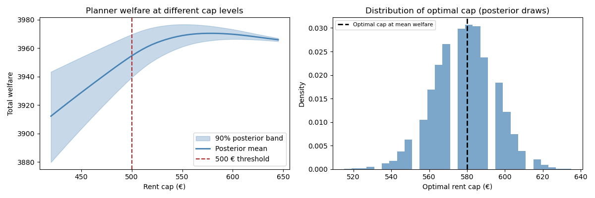
The left panel shows that welfare peaks somewhere around 540–560 euros: a cap this high captures most of the rent-relief benefit while preserving supply. The right panel shows the distribution of the optimal cap across all posterior draws of \(\beta_s\) and the optimal cap when maximizing expected welfare.
Optimal cap and Jensen’s inequality
We compare two decision rules:
- Plug-in (frequentist): find the cap that maximizes \(W\) at the posterior mean of \(\beta_s\).
- Bayesian: for each posterior draw of \(\beta_s\), find the optimal cap; report the distribution.
beta_s_mean = float(beta_s_draws.mean())
W_freq = np.array([welfare(cap, beta_s_mean, df) for cap in cap_grid])
cap_freq_opt = cap_grid[W_freq.argmax()]
opt_caps = cap_grid[W_grid.argmax(axis=0)]
cap_bayes_median = float(np.median(opt_caps))
cap_bayes_p5 = float(np.percentile(opt_caps, 5))
cap_bayes_p95 = float(np.percentile(opt_caps, 95))
print("Posterior mean of beta_s: {:.3f}".format(beta_s_mean))
print("Frequentist optimal cap: {} €".format(cap_freq_opt))
print("Bayesian median optimal cap: {} €".format(cap_bayes_median))
print("90% credible interval for cap: {} – {} €".format(
int(cap_bayes_p5), int(cap_bayes_p95)))
Posterior mean of beta_s: 0.412 Frequentist optimal cap: 580 € Bayesian median optimal cap: 580.0 € 90% credible interval for cap: 550 – 605 €
With a Bayesian analysis we can visualize whether there is a probability that the rent cap actually reduces welfare compared to the baseline. In this case, there is such risk but it is small.
Explain why the expression for baseline_welfare is correct in this case. Why is this the welfare level without a rent cap?
plt.hist(welfare(cap_freq_opt,beta_s_draws,df),bins=100,density=True,label=f'Welfare with {cap_freq_opt} rent cap')
baseline_welfare = welfare(1000,beta_s_draws,df)
plt.vlines(baseline_welfare,0,0.15,'red',linestyle='--',label='baseline welfare')
plt.xlabel('welfare')
plt.ylabel('density')
plt.title(f'Welfare distribution of a {cap_freq_opt} rent cap compared to baseline welfare')
plt.legend()
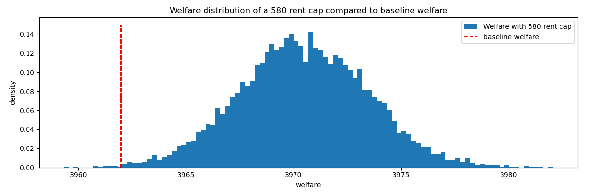
Summary
- When an objective function is non-linear in uncertain parameters, Jensen’s inequality implies that the expected value of the objective differs from the objective evaluated at the expected parameter. The frequentist plug-in approach ignores this gap; the Bayesian approach does not.
- Hierarchical fixed effects in
pymcare specified withcoords(dimension labels) anddims(which dimension each random variable spans). Partial pooling shrinks individual effects towards the group mean, reducing over-fitting compared with free (no-pooling) estimation. - The full posterior distribution of a parameter (here, the supply elasticity) translates directly into a distribution of policy outcomes. Reporting this distribution gives decision-makers a realistic picture of policy risk.
- A rent cap reduces rents but also reduces the supply of social housing. The optimal cap trades off these two effects and depends on the supply elasticity. Under parameter uncertainty, the optimal cap is itself uncertain.
Review Questions
- In the vampire app, what happens to the distribution of expected damage from incarcerating when you increase \(\kappa\) towards very large values? Why does the Bayesian decision converge to the frequentist decision?
- Explain in words why Jensen’s inequality implies that the frequentist plug-in approach overestimates welfare when the welfare function is concave in the uncertain parameter. In which direction does the Bayesian expected welfare deviate from the frequentist estimate?
- In the supply model, why does the interest rate \(r_t\) need to vary by year but not by postal code? What would happen to the identification of \(\gamma_s\) if \(r\) were constant over time?
- What is the difference between “complete pooling”, “no pooling”, and “partial pooling” for the postal code fixed effects? In which setting does
pymc’s hierarchical prior correspond to partial pooling? - The optimal cap formula \(P^*_\text{cap} = 500 + \beta_s/(2\lambda)\) is linear in \(\beta_s\). What does this imply for the Jensen gap in the optimal cap? Under what modification of the welfare function would the optimal cap become a non-linear function of \(\beta_s\)?
- Suppose the supply elasticity has a 95% credible interval of 0.2 to 0.8 (instead of the tight interval in the simulation). Qualitatively, how would the distribution of optimal caps change? How would you advise a minister who needs a single number for the optimal cap?
- Describe a real-world policy context (other than rent control) where (a) a key parameter must be estimated from data, (b) the policy objective is non-linear in that parameter, and (c) ignoring parameter uncertainty could lead to a costly mistake.
Course takeaway: simulation as a bridge to machine learning
These lectures show that the gap between classical econometrics and modern machine learning is smaller than it appears. OLS, the workhorse of econometrics, is just a specific loss function minimised by a simple algorithm. Ridge and lasso are OLS with an extra line of code. Neural networks are deeper versions of the same idea.
By building everything from scratch using simulation and optimisation, you develop a type of understanding that no amount of reading about formulas can give. You see directly what the parameters do, how the estimates vary, and what happens when assumptions break down.